СТРОИТЕЛЬНЫЕ НОРМЫ И ПРАВИЛА
ГАЗОСНАБЖЕНИЕ
СНиП 2.04.08-87*
Москва 1995
РАЗРАБОТАНЫ Гипрониигазом Минжилкомхоза РСФСР (Г.Б. Божедомов - руководитель темы, Н.А. Морозова) с участием Ленгипроинжпроекта Ленгорисполкома, Мосгазниипроекта Мосгорисполкома, УкрНИИинжпроекта Минжилкомхоза УССР, ЦНИИЭП инженерного оборудования Госгражданстроя, ВНИПИэнергопрома и института «Атомтеплоэлектропроект» Минэнерго СССР.
ВНЕСЕНЫ Минжилкомхозом РСФСР.
ПОДГОТОВЛЕНЫ К УТВЕРЖДЕНИЮ Управлением стандартизации и технических норм в строительстве Госстроя СССР (И.В. Сессин).
ПОДГОТОВЛЕНЫ К ПЕРЕИЗДАНИЮ Главтехнормированием Минстроя России (Н.А. Шишов).
СНиП 2.04.08-87* является переизданием СНиП 2.04.08-87 с изменениями и дополнениями, утвержденными постановлениями Госстроя СССР, Госстроя России и Минстроя России по состоянию на 4 апреля 1995 г.
Разделы, пункты, таблицы, формулы, в которые внесены изменения, отмечены в настоящих строительных нормах и правилах звездочкой.
При пользовании нормативным документом следует учитывать утвержденные изменения строительных норм и правил и государственных стандартов, публикуемые в журнале «Бюллетень строительной техники» и информационном указателе «Государственные стандарты» Госстандарта России.
|
Государственный |
Строительные нормы и правила |
СНиП 2.04.08-87* |
|
Газосна6жение |
Взамен |
Настоящие нормы распространяются на проектирование новых, расширяемых и реконструируемых систем газоснабжения, сооружаемых на территории поселений и предназначены для обеспечения природными (газовых и нефтяных месторождений) газами и газовоздушными смесями с избыточным давлением не более 1,2 МПа (12 кгс/см2), сжиженными углеводородными газами (в дальнейшем - СУГ) с избыточным давлением до 1,6 МПа (16 кгс/см2) включ. потребителей, использующих эти газы в качестве топлива.
Настоящие нормы распространяются также на проектирование межпоселковых газопроводов и внеплощадочных газопроводов промышленных предприятий, использующих газ в качестве топлива и сырья.
Настоящие нормы не распространяются на проектирование систем газоснабжения предприятий черной металлургии, нефтеперерабатывающей и других отраслей промышленности, для которых проектирование газоснабжения осуществляется в соответствии с отраслевыми нормативными документами, утвержденными в установленном порядке, а также на проектирование автомобильных заправочных станций природного газа, внутриплощадочных газопроводов предприятий, использующих газ в качестве сырья, и газооборудование передвижных средств.
В состав систем газоснабжения входят наружные и внутренние (прокладываемые внутри зданий) газопроводы и относящиеся к ним здания, сооружения, устройства и оборудование.
1. ОБЩИЕ ПОЛОЖЕНИЯ
1.1. Проектировать системы газоснабжения следует на основе утвержденных схем газоснабжения областей (союзных и автономных республик, краев), городов и других поселений, а при отсутствии схем газоснабжения - на основе схем (проектов) районной планировки и генеральных планов поселений.
1.2.* При проектировании систем газоснабжения кроме требований настоящих норм следует руководствоваться указаниями «Правил безопасности в газовом хозяйстве» и «Правил устройства и безопасной эксплуатации сосудов, работающих под давлением», утвержденных Госгортехнадзором РФ; «Правил пользования газом в народном хозяйстве», утвержденных Мингазпромом; «Правил устройства электроустановок» (ПУЭ), утвержденных Минэнерго СССР; СНиП 3.05.02-88*, а также других нормативных документов, утвержденных или согласованных с Минстроем России.
1.3. Газ, предусматриваемый для использования в качестве топлива, должен соответствовать ГОСТ 5542-87 для природного газа и ГОСТ 20448-90 для СУГ.
1.4. Допускается подача неодорированного газа для производственных установок промышленных предприятий при условии прохождения подводящего газопровода к предприятию вне территории поселений, установки сигнализаторов загазованности в помещениях, где расположены газовое оборудование и газопроводы, и выполнения других дополнительных решений, обеспечивающих безопасное использование неодорированного газа.
1.5.* Температура газа, выходящего из газораспределительных станций (ГРС). должна быть не ниже минус 10 °С при подаче газа в подземные газопроводы и не ниже расчетной температуры наружного воздуха для района строительства при подаче газа в надземные и наземные газопроводы.
За расчетную температуру наружного воздуха следует принимать температуру наиболее холодной пятидневки обеспеченностью 0,92 по СНиП 2.01.01-82.
При подаче с ГРС газа с отрицательной температурой в подземные газопроводы, прокладываемые в пучинистых грунтах, должны быть предусмотрены мероприятия по устойчивости газопровода.
1.6. Использование в качестве топлива смеси СУГ с воздухом и других газовоздушных смесей допускается при содержании горючих и негорючих компонентов в соотношении, обеспечивающем превышение верхнего предела воспламеняемости смеси не менее чем в 2 раза.
Содержание вредных примесей в газовоздушных смесях не должно превышать значений, приведенных в ГОСТ 5542-87 и ГОСТ 20448-90 соответственно для природного газа и СУГ.
1.7. При проектировании систем газоснабжения поселений и отдельных объектов следует предусматривать наиболее прогрессивные технические решения, обеспечивающие рациональное использование газового топлива.
|
Внесены |
Утверждены |
Срок |
1.8. Газовые сети и сооружения на них следует проектировать с учетом максимальной индустриализации строительно-монтажных работ за счет применения сборно-блочных, стандартных и типовых элементов и деталей, изготовляемых на заводах или в заготовительных мастерских. При этом необходимо учитывать современные методы производства строительно-монтажных работ и возможность использования типовых проектов.
1.9. В проектах на прокладку межпоселковых газопроводов необходимо предусматривать решения по охране окружающей среды в соответствии с требованиями разд. 9 СНиП 2.05.06-85.
2. СИСТЕМЫ ГАЗОСНАБЖЕНИЯ И НОРМЫ ДАВЛЕНИЯ ГАЗА
2.1. Выбор системы распределения, числа газораспределительных станций (ГРС), газорегуляторных пунктов (ГРП) и принципа построения распределительных газопроводов (кольцевые, тупиковые, смешанные) следует производить на основании технико-экономических расчетов с учетом объема, структуры и плотности газопотребления, надежности газоснабжения, а также местных условий строительства и эксплуатации.
2.2. Газопроводы систем газоснабжения в зависимости от давления транспортируемого газа подразделяются на:
газопроводы высокого давления 1 категории - при рабочем давлении газа свыше 0,6 МПа (6 кгс/см2) до 1,2 МПа (12 кгс/см2) включ. для природного газа и газовоздушных смесей и до 1,6 МПа (16 кгс/см2) для сжиженных углеводородных газов (СУГ);
Таблица 1
|
Давление газа, МПа (кг/см2) |
|
|
1. Производственные здания промышленных и сельскохозяйственных предприятий, а также отдельно стоящие котельные и предприятия бытового обслуживания производственного характера (бани, прачечные, фабрики химчистки, предприятия по производству хлеба и кондитерских изделий и пр.) |
0,6 (6) |
|
2. Предприятия бытового обслуживания производственного характера, перечисленные в поз. 1, пристроенные к зданиям другого производственного назначения или встроенные в эти здания |
0,3(3) |
|
3. Предприятия бытового обслуживания непроизводственного характера и общественные здания |
0,005 (0,05) |
|
4. Жилые дома |
0,003(0,03) |
газопроводы высокого давления II категории - при рабочем давлении газа свыше 0,3 МПа (3 кгс/см2) до 0,6 МПа (6 кгс/см2);
газопроводы среднего давления - при рабочем давлении газа свыше 0,005 МПа (0,05 кгс/см2 до 0,3 МПа (3 кгс/см2);
газопроводы низкого давления - при рабочем давлении газа до 0,005 МПа (0,05 кгс/см2) включ.
2.3. Классификация газопроводов, входящих в систему газоснабжения, приведена в справочном приложении 1.
2.4. Давление газа в газопроводах, прокладываемых внутри зданий, следует принимать не более значений, приведенных в табл. 1.
Для тепловых установок промышленных предприятий и отдельно стоящих котельных допускается использование газа с давлением до 1,2 МПа (12 кгс/см2), если такое давление требуется по условиям технологии производства.
Допускается использование газа давлением до 0,6 МПа (6 кгс/см2) в котельных, расположенных в пристройках к производственным зданиям.
2.5. Давление газа перед бытовыми газовыми приборами следует принимать в соответствии с паспортными данными приборов, но не более указанного в поз. 4 табл. 1.
3. РАСЧЕТНЫЕ РАСХОДЫ ГАЗА, ГИДРАВЛИЧЕСКИЙ РАСЧЕТ ГАЗОПРОВОДОВ
РАСЧЕТНЫЕ РАСХОДЫ ГАЗА
3.1. Годовые расходы газа для каждой категории потребителей следует определять на конец расчетного периода с учетом перспективы развития объектов - потребителей газа.
Продолжительность расчетного периода устанавливается на основании плана перспективного развития объектов - потребителей газа.
3.2. Годовые расходы газа для жилых домов, предприятий бытового обслуживания населения, общественного питания, предприятий по производству хлеба и кондитерских изделий, а также для учреждений здравоохранения следует определять по нормам расхода теплоты, приведенным в табл. 2.
Нормы расхода газа для потребителей, не перечисленных в табл. 2, следует принимать по нормам расхода других видов топлива или по данным фактического расхода используемого топлива с учетом КПД при переходе на газовое топливо.
3.3. При составлении проектов генеральных планов городов и других поселений допускается принимать укрупненные показатели потребления газа, м3/год на 1 чел., при теплоте сгорания газа 34 МДж/м3 (8000 ккал/м3):
при наличии централизованного горячего водоснабжения - 100;
при горячем водоснабжении от газовых водонагревателей - 250;
при отсутствии всяких видов горячего водоснабжения - 125 (165 в сельской местности).
Таблица 2
|
Показатель потребления газа |
Нормы расхода теплоты, МДж (тыс. ккал) |
|
|
1. Жилые дома |
||
|
При наличии в квартире газовой плиты и централизованного горячего водоснабжения при газоснабжении: |
||
|
природным газом |
На 1 чел. в год |
2800 (660) |
|
СУГ |
То же |
2540 (610) |
|
При наличии в квартире газовой плиты и газового водонагревателя (при отсутствии централизованного горячего водоснабжения) при газоснабжении: |
||
|
природным газом |
« |
8000 (1900) |
|
СУГ |
« |
7300 (1750) |
|
При наличии в квартире газовой плиты и отсутствии централизованного горячего водоснабжения и газового водонагревателя при газоснабжении: |
||
|
природным газом |
« |
4600 (1100) |
|
СУГ |
« |
4240 (1050) |
|
2. Предприятия бытового обслуживания населения |
||
|
Фабрики-прачечные: |
||
|
на стирку белья в механизированных прачечных |
На 1 т сухого белья |
8800 (2100) |
|
на стирку белья в немеханизированных прачечных с сушильными шкафами |
То же |
12 600 (3000) |
|
на стирку белья в механизированных прачечных, включая сушку и глаженье |
« |
18 800 (4500) |
|
Дезкамеры: |
||
|
на дезинфекцию белья в паровых камерах |
« |
2240 (535) |
|
на дезинфекцию белья и одежды в горячевоздушных камерах |
« |
1260 (300) |
|
Бани: |
||
|
мытье без ванн |
На 1 помывку |
40 (9,5) |
|
мытье в ваннах |
То же |
50 (12) |
|
3. Предприятия общественного питания |
||
|
Столовые, рестораны, кафе: |
||
|
на приготовление обедов (вне зависимости от пропускной способности предприятия |
На 1 обед |
4,2 (1) |
|
на приготовление завтраков или ужинов |
На 1 завтрак или ужин |
2,1 (0,5) |
|
4. Учреждения здравоохранения |
||
|
Больницы, родильные дома: |
||
|
на приготовление пищи |
На 1 койку в год |
3200 (760) |
|
на приготовление горячей воды для хозяйственно-бытовых нужд и лечебных процедур (без стирки белья) |
То же |
9200 (2200) |
|
5. Предприятия по производству хлеба и кондитерских изделий |
||
|
Хлебозаводы, комбинаты, пекарни: |
||
|
на выпечку хлеба формового |
На 1 т изделий |
2500 (600) |
|
на выпечку хлеба подового, батонов, булок, сдобы |
То же |
5450 (1300) |
|
на выпечку кондитерских изделий (тортов, пирожных, печенья, пряников и т.п.) |
« |
7750 (1850) |
|
Примечания. 1. Нормы расхода теплоты на жилые дома, приведенные в таблице, учитывают расход теплоты на стирку белья в домашних условиях. 2. При применении газа для лабораторных нужд школ, вузов, техникумов и других специальных учебных заведений норму расхода теплоты следует принимать в размере 50 МДж (12 тыс. ккал) в год на одного учащегося. |
||
3.4. Годовые расходы газа на нужды предприятий торговли, предприятий бытового обслуживания непроизводственного характера и т. п. следует принимать в размере до 5 % суммарного расхода теплоты на жилые дома, приведенного в табл. 2.
3.5. Годовые расходы газа на технологические нужды промышленных и сельскохозяйственных предприятий следует определять по данным топливопотребления (с учетом изменения КПД при переходе на газовое топливо) этих предприятий с перспективой их развития или на основе технологических норм расхода топлива (теплоты).
3.6. Годовые расходы теплоты на приготовление кормов и подогрев воды для животных следует принимать по табл. 3.
Таблица 3
|
Расход газа на одно животное |
Нормы расхода теплоты на нужды животных, МДж (тыс. ккал) |
|
|
Приготовление кормов для животных с учетом запаривания грубых кормов и корне-, клубнеплодов |
1 лошадь |
1700 (400) |
|
1 корову |
8400 (2000) |
|
|
1 свинью |
4200 (1000) |
|
|
Подогрев воды для питья и санитарных целей |
На одно животное |
420 (100) |
3.7. Система газоснабжения городов и других населенных пунктов должна рассчитываться на максимальный часовой расход газа.
3.8. Максимальный расчетный часовой расход газа Qhd, м3/ч, при 0 °С и давлении газа 0,1 МПа (760 мм. рт. ст.) на хозяйственно-бытовые и производственные нужды следует определять как долю годового расхода по формуле
где Khmax - коэффициент часового максимума (расхода к максимальному часовому расходу газа);
Qy - годовой расход газа, м3/год.
Коэффициент часового максимума расхода газа следует принимать дифференцированно по каждому району газоснабжения, сети которого представляют самостоятельную систему, гидравлически не связанную с системами других районов.
Значения коэффициентов часового максимума расхода газа на хозяйственно-бытовые нужды в зависимости от численности населения, снабжаемого газом, приведены в табл. 4; для бань, прачечных, предприятий общественного питания и предприятий по производству хлеба и кондитерских изделий - в табл.5.
3.9. Расчетный часовой расход газа для предприятий различных отраслей промышленности и предприятий бытового обслуживания производственного характера (за исключением предприятий, приведенных в табл. 5) следует определять по данным топливопотребления (с учетом изменения КПД при переходе на газовое топливо) или по формуле (1) исходя из годового расхода газа с учетом коэффициентов часового максимума по отрасли промышленности, приведенных в рекомендуемом приложении 2.
Таблица 4
|
Коэффициент часового максимума расхода газа (без отопления), Khmax |
|
|
1 |
1/1800 |
|
2 |
1/2000 |
|
3 |
1/2050 |
|
5 |
1/2100 |
|
10 |
1/2200 |
|
20 |
1/2300 |
|
30 |
1/2400 |
|
40 |
1/2500 |
|
50 |
1/2600 |
|
100 |
1/2800 |
|
300 |
1/3000 |
|
500 |
1/3300 |
|
750 |
1/3500 |
|
1000 |
1/3700 |
|
2000 и более |
1/4700 |
Таблица 5
|
Коэффициент часового максимума расхода газа, Khmax |
|
|
Бани |
1/2700 |
|
Прачечные |
1/2900 |
|
Общественного питания |
1/2000 |
|
По производству хлеба и кондитерских изделий |
1/6000 |
|
Примечание. Для бань и прачечных коэффициенты часового максимума расхода газа приведены с учетом расхода газа на нужды отопления и вентиляции. |
|
3.10.* Для отдельных жилых домов и общественных зданий расчетный часовой расход газа Qhd , м3/ч, следует определять по сумме номинальных расходов газа газовыми приборами с учетом коэффициента одновременности их действия по формуле
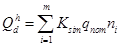
где 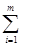
Ksim - коэффициент одновременности, значение которого следует принимать для жилых домов по справочному приложению 3;
qnom - номинальный расход газа прибором или группой приборов, м3/ч, принимаемый по паспортным данным или техническим характеристикам приборов;
ni - число однотипных приборов или групп приборов.
3.11.* Годовые и расчетные часовые расходы теплоты на нужды отопления, вентиляции и горячего водоснабжения следует определять в соответствии с указаниями СНиП 2.04.01-85, СНиП 2.04.05-91* и СНиП 2.04.07-86*.
3.12. Гидравлические режимы работы распределительных газопроводов низкого, среднего и высокого давления должны приниматься из условий создания при максимально допустимых потерях давления газа наиболее экономичной и надежной в эксплуатации системы, обеспечивающей устойчивость работы ГРП и газорегуляторных установок (ГРУ), а также работы горелок потребителей в допустимых диапазонах давления газа.
3.13.* Расчетные внутренние диаметры газопроводов необходимо определять гидравлическим расчетом из условия обеспечения бесперебойного газоснабжения всех потребителей в часы максимального потребления газа. Гидравлический расчет газопроводов допускается производить по данным, приведенным в справочном приложении 5.
4. НАРУЖНЫЕ ГАЗОПРОВОДЫ И СООРУЖЕНИЯ
ОБЩИЕ УКАЗАНИЯ
4.1. Требования настоящего раздела распространяются на проектирование наружных газопроводов от ГРС или ГРП до потребителей газа (наружных стен зданий и сооружений).
4.2. Проекты наружных газопроводов, прокладываемых по территории поселений, следует выполнять на топографических планах в масштабах, предусмотренных ГОСТ 21.610-85. Допускается выполнение проектов межпоселковых газопроводов на планах М 1:5000 при закреплении оси трассы в натуре. Допускается не составлять продольные профили участков газопровода, прокладываемого на местности со спокойным рельефом, при отсутствии пересечений газопровода с естественными преградами и различными сооружениями.
4.3. Прокладку наружных газопроводов на территории поселений следует предусматривать. как правило, подземной в соответствии с требованиями СНиП 2.07.01-89*. Надземная и наземная прокладка наружных газопроводов допускается внутри жилых кварталов и дворов, а также на других отдельных участках трассы.
Прокладку газопроводов по отношению к метрополитену следует предусматривать в соответствии с требованиями СНиП 2.07.01.89*.
На территории промышленных предприятий прокладку наружных газопроводов следует осуществлять, как правило, надземно в соответствии с требованиями СНиП II-89-80*.
4.4* Выбор трассы подземных газопроводов следует производить с учетом коррозионной активности грунтов и наличия блуждающих токов в соответствии с требованиями ГОСТ 9.602-89.
4.5.* Вводы газопроводов в жилые дома должны предусматриваться в нежилые помещения, доступные для осмотра газопроводов. В существующих жилых домах, принадлежащих гражданам на правах личной собственности, допускается ввод газопровода в жилое помещение, где установлена отопительная печь, при условии размещения отключающего устройства снаружи здания.
Вводы газопроводов в общественные здания следует предусматривать непосредственно в помещение, где установлены газовые приборы, или в коридоры.
Размещение отключающих устройств следует предусматривать, как правило, снаружи здания.
4.6. Вводы газопроводов в здания промышленных предприятий и другие здания производственного характера следует предусматривать непосредственно в помещение, где находятся агрегаты, потребляющие газ, или в смежное с ним помещение при условии соединения этих помещений открытым проемом. При этом воздухообмен в смежном помещении должен быть не менее трехкратного в час.
4.7. Вводы газопроводов не должны проходить через фундаменты и под фундаментами зданий. Допускается пересечение фундаментов на входе и выходе газопроводов ГРП.
4.8. Вводы газопроводов в технические подполья и технические коридоры и разводка по этим помещениям в жилых домах и общественных зданиях допускаются только при подводке к ним наружных газопроводов низкого давления во внутриквартальных коллекторах.
4.9. Не допускаются вводы газопроводов в подвалы, лифтовые помещения, вентиляционные камеры и шахты, помещения мусоросборников, трансформаторных подстанций, распределительных устройств, машинные отделения, складские помещения, помещения, относящиеся по взрывной и взрывопожарной опасности к категориям А и Б.
4.10. Конструктивные решения вводов следует принимать с учетом требований пп. 4.18 и 4.19*.
4.11. Соединения стальных труб следует предусматривать на сварке.
Разъемные (фланцевые и резьбовые) соединения следует предусматривать в местах установки запорной арматуры, на конденсатосборниках и гидрозатворах, в местах присоединения контрольно-измерительных приборов и устройств электрозащиты.
4.12. Не допускается предусматривать в грунте разъемные соединения на газопроводах.
ПОДЗЕМНЫЕ ГАЗОПРОВОДЫ
4.13.* Минимальные расстояния по горизонтали от подземных и наземных (в насыпи) газопроводов до зданий (кроме ГРП) и сооружений следует принимать в соответствии с требованиями СНиП 2.07.01-89*. Указанные расстояния от зданий ГРП до входящих и выходящих газопроводов не нормируются.
Допускается уменьшение до 50 % расстояний, указанных в СНиП 2.07.01-89*, для газопроводов давлением до 0,6 МПа (6 кгс/см2), при прокладке их между зданиями и под арками зданий, в стесненных условиях на отдельных участках трассы, а также от газопроводов давлением свыше 0,6 МПа (6 кгс/см2) до отдельно стоящих нежилых и подсобных строений.
В этих случаях на участках сближения и по 5 м в каждую сторону от этих участков следует предусматривать:
применение бесшовных или электросварных труб, прошедших 100 %-ный контроль заводского сварного соединения неразрушающими методами, или электросварных труб, не прошедших такого контроля, но проложенных в футляре;
проверку всех сварных (монтажных) стыков неразрушающими методами контроля.
Расстояние от газопровода до наружных стенок колодцев и камер других подземных инженерных сетей следует принимать не менее 0,3 м. На участках, где расстояние в свету от газопровода до колодцев и камер других подземных инженерных сетей составляет от 0,3 м до нормативного расстояния для данной коммуникации, газопроводы следует прокладывать с соблюдением требований, предъявляемых к прокладке газопроводов в стесненных условиях.
При прокладке электросварных труб в футляре последний должен выходить не менее чем на 2 м в каждую сторону от стенки колодца или камеры.
Расстояния от газопровода до опор воздушной линии связи, контактной сети трамвая, троллейбуса и электрифицированных железных дорог следует принимать как до опор воздушных линий электропередачи соответствующего напряжения.
Минимальные расстояния от газопроводов до тепловой сети бесканальной прокладки с продольным дренажем следует принимать аналогично канальной прокладке тепловых сетей.
Минимальные расстояния в свету от газопровода до ближайшей трубы тепловой сети бесканальной прокладки без дренажа следует принимать как до водопровода. Расстояния от анкерных опор, выходящих за габариты труб тепловой сети, следует принимать с учетом сохранности последних.
Минимальное расстояние по горизонтали от газопровода до напорной канализации допускается принимать как до водопровода.
Расстояние от газопровода до железнодорожных путей узкой колеи следует принимать как до трамвайных путей по СНиП 2.07.01-89*.
Расстояния от газопроводов до складов и предприятий с легковоспламеняющимися материалами следует принимать по нормам этих предприятий, но не менее расстояний, указанных в СНиП 2.07.01-89*.
Минимальные расстояния по горизонтали и вертикали от газопроводов до магистральных газопроводов и нефтепроводов следует принимать в соответствии с требованиями СНиП 2.05.06-85.
Расстояния от межпоселковых газопроводов давлением 0,6 МПа и более до подошвы насыпи и бровки откоса выемки или от крайнего рельса на нулевых отметках железных дорог общей сети следует принимать не менее 50 м. В стесненных условиях по согласованию с соответствующими управлениями железных дорог МПС России допускается сокращение указанного расстояния до значений, приведенных в СНиП 2.07.01-89*, при условии прокладки газопровода на этом участке на глубине не менее 2,0 м, увеличения толщины стенки труб на 2-3 мм больше расчетной и проверки всех сварных соединений неразрушающими методами контроля.
4.14. Допускается укладка двух и более газопроводов в одной траншее, на одном или разных уровнях (ступенями). При этом расстояния между газопроводами в свету следует предусматривать достаточными для монтажа и ремонта трубопроводов.
4.15.* Расстояние по вертикали в свету при пересечении газопроводов всех давлений с подземными инженерными сетями следует принимать не менее 0,2 м, с электрическими сетями - в соответствии с ПУЭ, с кабельными линиями связи и радиотрансляционными сетями - в соответствии с ВСН 116-87 и ВСН 600-81, утвержденными Минсвязи СССР.
На одном конце футляра следует предусматривать контрольную трубку, выходящую под защитное устройство.
В местах, где не предусматривается движение транспорта, глубину прокладки газопроводов допускается уменьшать до 0,6 м.
Вводы газопроводов неосушенного газа в здания и сооружения должны предусматриваться с уклоном в сторону распределительного газопровода. Если по условиям рельефа местности не может быть создан необходимый уклон к распределительному газопроводу, допускается предусматривать прокладку газопровода с изломом в профиле с установкой конденсатосборника в низшей точке.
Прокладку газопроводов паровой фазы СУГ следует предусматривать в соответствии с указаниями разд. 9.
4.19.* Газопроводы в местах прохода через наружные стены зданий следует заключать в футляры.
Пространство между стеной и футляром следует тщательно заделывать на всю толщину пересекаемой конструкции. Концы футляра следует уплотнять эластичным материалом.
4.20. Прокладку газопроводов в грунтах с включением строительного мусора и перегноя следует предусматривать с устройством под газопровод основания из мягкого или песчаного грунта толщиной не менее 10 см (над выступающими неровностями основаниями); засыпку таким же грунтом на полную глубину траншеи.
В грунтах с несущей способностью менее 0,025 МПа (0,25 кгс/см2), а также в грунтах с включением строительного мусора и перегноя дно траншеи следует усиливать путем подкладки антисептированных деревянных брусьев, бетонных брусьев, устройства свайного основания или втрамбовывания щебня или гравия. В этом случае подсыпку грунта под газопровод и засыпку его следует производить, как указано в первом абзаце данного пункта.
4.21. При наличии подземных вод следует предусматривать мероприятия по предотвращению всплытия газопроводов, если это подтверждается расчетом.
НАДЗЕМНЫЕ И НАЗЕМНЫЕ ГАЗОПРОВОДЫ
4.22.* Надземные газопроводы следует прокладывать на отдельно стоящих опорах, этажерках и колоннах из негорючих материалов или по стенам зданий.
При этом разрешается прокладка:
на отдельно стоящих опорах, колоннах, эстакадах и этажерках - газопроводов всех давлений;
по стенам производственных зданий с помещениями категорий В, Г и Д - газопроводов давлением до 0,6 МПа (6 кгс/см2);
по стенам общественных зданий и жилых домов не ниже III-IIIа степени огнестойкости - газопроводов давлением до 0,3 МПа (3 кгс/см2);
по стенам общественных зданий и жилых домов IV-V степени огнестойкости - газопроводов низкого давления с условным диаметром труб, как правило, не более 50 мм, а при размещении регуляторов давления газа на наружных стенах и других конструкциях этих зданий - газопроводов давлением до 0,3 МПа - на участках до ввода их в регуляторы.
Запрещается транзитная прокладка газопроводов:
по стенам зданий детских учреждений, больниц, школ и зрелищных предприятий - газопроводов всех давлений;
по стенам жилых домов - газопроводов среднего и высокого давления.
Запрещается прокладка газопроводов всех давлений по зданиям со стенами из панелей с металлической обшивкой и полимерным утеплителем и по зданиям категорий А и Б.
4.23. Надземные газопроводы, прокладываемые на территории промышленных предприятий, и опоры для этих газопроводов следует проектировать с учетом требований СНиП II-89-80* и СНиП 2.09.03-85.
4.24. Газопроводы высокого давления разрешается прокладывать по глухим стенам, над окнами и дверными проемами одноэтажных и над окнами верхних этажей многоэтажных производственных зданий с помещениями по взрывопожарной и пожарной опасности категорий В, Г и Д и сблокированных с ними вспомогательных зданий, а также зданий отдельно стоящих котельных.
В производственных зданиях допускается прокладка газопроводов низкого и среднего давления вдоль переплетов неоткрывающихся окон и пересечение указанными газопроводами световых проемов, заполненных стеклоблоками.
4.25. Расстояния между проложенными по стенам зданий газопроводами и другими инженерными сетями следует принимать в соответствии с требованиями, предъявляемыми к прокладке газопроводов внутри помещений (разд. 6).
4.26. Не допускается предусматривать разъемные соединения на газопроводах под оконными проемами и балконами жилых зданий и общественных зданий непроизводственного характера.
4.27. Надземные и наземные газопроводы, а также подземные газопроводы на участках, примыкающих к местам входа и выхода из земли, следует проектировать с учетом продольных деформаций по возможным температурным воздействиям.
4.28. Высоту прокладки надземных газопроводов следует принимать в соответствии с требованиями СНиП II-89-80*.
На свободной территории вне проезда транспорта и прохода людей допускается прокладка газопроводов на низких опорах на высоте не менее 0,35 м от земли до низа трубы.
4.29. Газопроводы в местах входа и выхода из земли следует заключать в футляр.
В местах, где исключена возможность механических повреждений газопроводов (непроезжая часть территории и т.д.), установка футляров не обязательна.
4.30. Газопроводы, транспортирующие неосушенный газ, следует прокладывать с уклоном не менее 3 o/oo с установкой в низших точках устройств для удаления конденсата (дренажные штуцера с запорным устройством). Для указанных газопроводов следует предусматривать тепловую изоляцию.
4.31. Прокладку газопроводов СУГ следует предусматривать в соответствии с указаниями разд. 9.
4.32. Расстояния по горизонтали в свету от надземных газопроводов, проложенных на опорах, и наземных (без обвалования) до зданий и сооружений следует принимать не менее значений, указанных в табл. 6.
4.33. Расстояние между надземными газопроводами и другими инженерными коммуникациями надземной и наземной прокладки следует принимать с учетом возможности монтажа, осмотра и ремонта каждого из трубопроводов.
4.34. Расстояния между газопроводами и воздушными линиями электропередачи, а также кабелями следует принимать по ПУЭ.
4.35.* Расстояния между опорами надземных газопроводов следует определять в соответствии с требованиями СНиП 2.04.12-86.
4.36. Допускается предусматривать прокладку на отдельно стоящих опорах, колоннах, эстакадах. этажерках газопроводов с трубопроводами другого назначения согласно СНиП II-89-80*.
4.37. Совместную прокладку газопроводов с электрическими кабелями и проводами, в том числе предназначенными для обслуживания газопроводов (силовыми, для сигнализации, диспетчеризации, управления задвижками), следует предусматривать в соответствии с указаниями ПУЭ.
4.38. Прокладку газопроводов по железнодорожным и автомобильным мостам следует предусматривать в случаях, когда это допускается требованиями СНиП 2.05.03-84* при этом прокладку газопроводов следует осуществлять в местах, исключающих возможность скопления газа (в случае его утечки) в конструкциях моста.
ПЕРЕХОДЫ ГАЗОПРОВОДОВ ЧЕРЕЗ ВОДНЫЕ ПРЕГРАДЫ И ОВРАГИ
4.39. Подводные переходы газопроводов через водные преграды следует предусматривать на основании данных гидрологических, инженерно-геологических и топографических изысканий.
4.40. Створы подводных переходов через реки следует предусматривать на прямолинейных устойчивых плесовых участках с пологими неразмываемыми берегами русла при минимальной ширине заливаемой поймы. Створ подводного перехода следует предусматривать, как правило, перпендикулярным динамической оси потока, избегая участков, сложенных скальными грунтами.
Таблица 6
|
Здания и сооружения |
Расстояние в свету, м, до зданий и сооружений от проложенных на опорах надземных газопроводов и наземных (без обвалования) |
|||
|
низкого давления |
среднего давления |
высокого давления II категории |
высокого давления I категории |
|
|
Производственные и складские здания с помещениями категорий А и Б |
5* |
5* |
5* |
10* |
|
То же категорий В, Г и Д |
- |
- |
- |
5 |
|
Жилые и общественные здания I-IIIа степени огнестойкости |
- |
- |
5 |
10 |
|
То же, IV и V степени огнестойкости |
- |
5 |
5 |
10 |
|
Открытые склады легковоспламеняющихся и горючих жидкостей и склады горючих материалов, расположенные вне территории промышленных предприятий |
20 |
20 |
40 |
40 |
|
Железнодорожные и трамвайные пути (до ближайшего рельса) |
3 |
3 |
3 |
3 |
|
Подземные инженерные сети: водопровод, канализация, тепловые сети, телефонная канализация, электрические кабельные блоки (от края фундамента опоры газопровода) |
1 |
1 |
1 |
1 |
|
Дороги (от бордюрного камня, внешней бровки кювета или подошвы насыпи дороги) |
1,5 |
1,5 |
1,5 |
1,5 |
|
Ограда открытого распределительного устройства и открытой подстанции |
10 |
10 |
10 |
10 |
__________
* Для газопроводов ГРП (входящих и выходящих) расстояние не нормируется.
Примечание. Знак «-» означает, что расстояние не нормируется.
4.41. Подводные переходы газопроводов при ширине водных преград при меженном горизонте 75 м и более следует предусматривать, как правило. в две нитки с пропускной способностью каждой по 0,75 расчетного расхода газа.
Допускается не предусматривать вторую (резервную) нитку газопровода при прокладке:
закольцованных газопроводов, если при отключении подводного перехода обеспечивается бесперебойное снабжение газом потребителей;
тупиковых газопроводов к промышленным потребителям, если данные потребители могут перейти на другой вид топлива на период ремонта подводного перехода.
4.42. При пересечении водных преград шириной менее 75 м газопроводами, предназначенными для газоснабжения потребителей, не допускающих перерывов в подаче газа, или при ширине заливаемой поймы более 500 м по уровню горизонта высоких вод (ГВВ) при 10 %-ной обеспеченности и продолжительности подтопления паводковыми водами более 20 дней, а также горных рек и водных преград с неустойчивым дном и берегами допускается прокладка второй (резервной) нитки.
4.43. Минимальные расстояния по горизонтали от мостов до подводных и надводных газопроводов в местах перехода их через водные преграды следует принимать по табл. 7.
4.44. Толщину стенок труб для подводных переходов следует принимать на 2 мм больше расчетной, но не менее 5 мм. Для газопроводов диаметром менее 250 мм допускается увеличивать толщину стенки для обеспечения отрицательной плавучести газопровода.
4.45. Границами подводного перехода газопровода, определяющими длину перехода, следует считать участок, ограниченный ГВВ не ниже отметок 10 %-ной обеспеченности. Запорную арматуру следует размещать вне границ этого участка.
4.46. Расстояния между осями параллельных газопроводов на подводных переходах следует принимать не менее 30 м.
На несудоходных реках с руслом, не подверженным размыву, а также при пересечении водных преград в пределах поселений допускается предусматривать укладку двух газопроводов в одну траншею. Расстояние между газопроводами в свету в этом случае должно быть не менее 0,5 м.
При прокладке газопроводов на пойменных участках расстояние между газопроводами допускается принимать таким же, как для линейной части газопровода.
4.47. Прокладку газопроводов на подводных переходах следует предусматривать с заглублением в дно пересекаемых водных преград. Проектную отметку верха забалластированного газопровода следует принимать на 0,5 м, а на переходах через судоходные и сплавные реки на 1 м ниже прогнозируемого профиля дна, определяемого с учетом возможного размыва русла в течение 25 лет после окончания строительства перехода.
Таблица 7
|
Тип моста |
Расстояние по горизонтали между газопроводом и мостом, м, при прокладке газопровода |
||||
|
выше моста |
ниже моста |
||||
|
от надводного газопровода |
от подводного газопровода |
от надводного газопровода |
от подводного газопровода |
||
|
Судоходные замерзающие |
Всех типов |
50 |
50 |
||
|
Судоходные незамерзающие |
То же |
50 |
50 |
50 |
50 |
|
Несудоходные замерзающие |
Многопролетные |
50 |
50 |
||
|
Несудоходные незамерзающие |
То же |
20 |
20 |
20 |
20 |
|
Несудоходные для газопроводов давления: |
|||||
|
низкого |
Одно- и двухпролетные |
2 |
20 |
2 |
10 |
|
среднего и высокого |
То же |
5 |
20 |
5 |
20 |
На подводных переходах через несудоходные и несплавные водные преграды, а также в скальных грунтах допускается уменьшение глубины укладки газопроводов, но верх забалластированного газопровода во всех случаях должен быть ниже отметки возможного размыва дна водоема на расчетный срок эксплуатации газопровода.
4.48.* Ширину траншеи по дну следует принимать в зависимости от методов ее разработки и характера грунтов, режима водной преграды и необходимости проведения водолазного обследования.
Крутизну откосов подводных траншей необходимо принимать в соответствии с требованиями СНиП III-42-80.
4.49. Расчет подводных газопроводов против всплытия (на устойчивость) и их балластировку следует выполнять в соответствии с требованиями СНиП 2.05.06-85.
4.50. Для газопроводов, прокладываемых на участках подводных переходов, следует предусматривать решения по защите изоляции от повреждения.
4.51. На обоих берегах судоходных и лесосплавных водных преград следует предусматривать опознавательные знаки установленных образцов. На границе подводного перехода необходимо предусматривать установку постоянных реперов: при ширине преграды при меженном горизонте до 75 м - на одном берегу, при большей ширине - на обоих берегах.
4.52. Высоту прокладки надводного перехода газопровода следует принимать (от низа трубы или пролетного строения):
при пересечении несудоходных, несплавных рек, оврагов и балок, где возможен ледоход, - не менее 0,2 м над уровнем ГВВ при 2 %-ной обеспеченности и от наивысшего горизонта ледохода, а при наличии на этих реках корчехода - не менее 1 м над уровнем ГВВ при 1 %-ной обеспеченности;
при пересечении судоходных и сплавных рек - не менее значений, установленных нормами проектирования подмостовых габаритов на судоходных реках и основными требованиями к расположению мостов.
ПЕРЕХОДЫ ГАЗОПРОВОДОВ ЧЕРЕЗ ЖЕЛЕЗНОДОРОЖНЫЕ И ТРАМВАЙНЫЕ ПУТИ И АВТОМОБИЛЬНЫЕ ДОРОГИ
4.53.* Пересечения газопроводов с железнодорожными и трамвайными путями, а также с автомобильными дорогами следует предусматривать, как правило, под углом 90°.
Минимальное расстояние от подземных газопроводов в местах их пересечения трамвайными и железнодорожными путями следует принимать:
до мостов, труб, тоннелей и пешеходных мостов и тоннелей (с большим скоплением людей) на железных дорогах - 30 м;
до стрелок (начала остряков, хвоста крестовин, мест присоединения к рельсам отсасывающих кабелей) - 3 м для трамвайных путей и 10 м для железных дорог;
до опор контактной сети - 3 м.
Уменьшение указанных расстояний допускается по согласованию с организациями, в ведении которых находятся пересекаемые сооружения.
Необходимость установки опознавательных столбиков (знаков) и их оформление на переходах газопроводов через железные дороги общей сети решается по согласованию с МПС России.
4.54.* Прокладку подземных газопроводов всех давлений в местах пересечений с железнодорожными и трамвайными путями, автомобильными дорогами I, II и III категорий, а также скоростными дорогами в черте города, магистральными улицами и дорогами общегородского значения следует предусматривать в стальных футлярах.
Необходимость устройства футляров на газопроводах при пересечении магистральных улиц и дорог районного значения, дорог грузового значения, а также улиц и дорог местного значения решается проектной организацией в зависимости от интенсивности движения транспорта. При этом допускается предусматривать неметаллические футляры, удовлетворяющие условиям прочности и долговечности.
Концы футляров должны быть уплотнены. На одном конце футляра следует предусматривать контрольную трубку, выходящую под защитное устройство, а на межпоселковых газопроводах - вытяжную свечу с устройством для отбора проб, выведенную на расстояние не менее 50 м от края земляного полотна.
В межтрубном пространстве футляра допускается прокладка эксплуатационного кабеля связи, телемеханики, телефона, дренажного кабеля электрозащиты, предназначенных для обслуживания системы газоснабжения.
4.55.* Концы футляра следует выводить на расстояния, м, не менее:
от крайнего водоотводного сооружения железнодорожного земляного полотна (кювета, канавы, резерва) - 3;
от крайнего рельса железнодорожного пути - 10; а от пути промышленного предприятия - 3;
от крайнего рельса трамвайного пути - 2;
от края проезжей части улиц - 2;
от края проезжей части автомобильных дорог - 3,5.
Во всех случаях концы футляров должны быть выведены за пределы подошвы насыпи на расстояние не менее 2 м.
4.56.* Глубину укладки газопровода под железнодорожными и трамвайными путями и автомобильными дорогами следует принимать в зависимости от способа производства строительных работ и характера грунтов с целью обеспечения безопасности движения.
Минимальную глубину укладки газопровода до верха футляра от подошвы рельса или верха покрытия на нулевых отметках и выемках, а при наличии насыпи от подошвы насыпи следует предусматривать, м:
под железными дорогами общей сети - 2,0 (от дна водоотводных сооружений - 1,5), а при производстве работ методом прокола - 2,5;
под трамвайными путями, железными дорогами промышленных предприятий и автомобильными дорогами:
1,0 - при производстве работ открытым способом;
1,5 - при производстве работ методом продавливания, горизонтального бурения или щитовой проходки;
2,5 - при производстве работ методом прокола.
При этом на пересечениях железных дорог общей сети глубина укладки газопровода на участках за пределами футляра на расстоянии 50 м в обе стороны от земельного полотна должна приниматься не менее 2,10 м от поверхности земли до верха газопровода.
При устройстве переходов под железными дорогами общей сети в пучинистых грунтах для газопроводов с температурой транспортируемого газа в зимнее время выше 5 °С следует проверять их минимальную глубину прокладки расчетом на соблюдение условий, при которых исключается влияние тепловыделений на равномерность морозного пучения грунта. При невозможности обеспечить заданный температурный режим должна предусматриваться замена пучинистого грунта или другие проектные решения.
Толщину стенок труб газопровода на переходах через железные дороги общей сети необходимо принимать на 2-3 мм больше расчетной и для этих участков во всех случаях предусматривать весьма усиленный тип изоляционного покрытия.
4.57. Высоту прокладки надземных газопроводов в местах пересечения с электрифицированными и неэлектрифицированными железнодорожными путями, с трамвайными путями, автомобильными дорогами, контактной сетью троллейбуса следует принимать в соответствии с требованиями СНиП II-89-80.
РАЗМЕЩЕНИЕ ОТКЛЮЧАЮЩИХ УСТРОЙСТВ НА ГАЗОПРОВОДАХ
4.58. Отключающие устройства на газопроводах следует предусматривать:
на вводах в жилые, общественные, производственные здания или в группу смежных зданий, перед наружными газопотребляющими установками;
на вводах в ГРП, на выходе из ГРП при закольцованных газопроводах в системах с двумя и более ГРП;
на ответвлениях от уличных газопроводов к отдельным микрорайонам, кварталам, группам жилых домов или отдельным домам при числе квартир более 400;
для отключения отдельных участков газопроводов с целью обеспечения безопасности и надежности газоснабжения;
при пересечении водных преград двумя нитками и более, а также одной ниткой при ширине водной преграды 75 м и более при меженном горизонте;
при пересечении железных дорог общей сети и автомобильных дорог I и II категорий.
Отключающие устройства допускается не предусматривать:
перед ГРП предприятий, если отключающее устройство, имеющееся на отводе от распределительного газопровода, находится от ГРП на расстоянии не более 100 м;
на пересечении железнодорожных путей общей сети и автомобильных дорог I и II категорий при наличии отключающего устройства на расстоянии от путей (дорог) не более 1000 м, обеспечивающего прекращение подачи газа на участке перехода (линейные задвижки, отключающие устройства после ГРП, ГРС).
4.59. Отключающие устройства на наружных газопроводах следует размещать в колодцах, наземных шкафах или оградах, а также на стенах зданий.
На подземных газопроводах отключающие устройства следует предусматривать, как правило, в колодцах.
4.60. Размещение отключающих устройств следует предусматривать в доступном для обслуживания месте.
Отключающие устройства, устанавливаемые на параллельных газопроводах, следует смещать относительно друг друга на расстояние, обеспечивающее удобство обслуживания, монтажа и демонтажа.
4.61.* В колодцах следует предусматривать компенсирующие устройства, обеспечивающие монтаж и демонтаж запорной арматуры.
При установке в колодце стальной фланцевой арматуры на газопроводах высокого давления I категории допускается предусматривать вместо компенсирующего устройства косую фланцевую вставку.
Установку стальной арматуры, изготовленной для присоединения на сварке, следует предусматривать без компенсирующего устройства и без косой вставки.
4.62. Колодцы следует предусматривать на расстоянии не менее 2 м от линии застройки и ограждения территории предприятий.
В местах отсутствия проезда транспорта и прохода людей люки колодцев следует предусматривать выше уровня земли.
для газопроводов низкого давления по горизонтали, как правило, - 0,5;
для газопроводов среднего давления по горизонтали - 3;
для газопроводов высокого давления II категории по горизонтали - 5.
При расположении отключающей арматуры на высоте более 2,2 м следует предусматривать площадки из негорючих материалов с лестницами.
4.64. Отключающие устройства, проектируемые к установке на участке закольцованных распределительных газопроводов, проходящих по территории промышленных и других предприятий, следует размещать вне территории этих предприятий.
4.65. На вводах и выводах газопроводов из здания ГРП установку отключающих устройств следует предусматривать на расстоянии не менее 5 м и не более 100 м от ГРП.
Отключающие устройства ГРП, размещаемые в пристройках к зданиям, и шкафных ГРП допускается предусматривать на наружных надземных газопроводах на расстоянии менее 5 м от ГРП в удобном для обслуживания месте.
4.66. Отключающие устройства, предусмотренные согласно п. 4.58 к установке на переходах газопроводов через водные преграды, следует размещать на берегах на отметках не ниже отметок ГВВ при 10 %-ной обеспеченности и выше отметок ледохода и корчехода, а на горных реках - не ниже отметок ГВВ при 2 %-ной обеспеченности. При этом на закольцованных газопроводах отключающие устройства следует предусматривать на обоих берегах, а на тупиковых одиночных газопроводах - на одном берегу, до перехода (по ходу газа).
4.67. Отключающие устройства, предусмотренные к установке на переходах через железные дороги, следует размещать:
на тупиковых газопроводах - не далее 1000 м до перехода (по ходу газа);
на кольцевых газопроводах - по обе стороны перехода на расстоянии не далее 1000 м от перехода.
СООРУЖЕНИЯ НА ГАЗОПРОВОДАХ
4.68. Колодцы для размещения отключающих устройств на газопроводах следует предусматривать из негорючих, влагостойких и биостойких материалов. Конструкцию и материал колодцев следует принимать из условия исключения проникания в них грунтовых вод.
Наружную поверхность стенок колодцев необходимо предусматривать гладкой, оштукатуренной и покрытой битумными гидроизоляционными материалами.
4.69. В местах прохода газопровода через стенки колодцев следует предусматривать футляры.
4.70. Для защиты от механических повреждений контрольных трубок, контактных выводов контрольно-измерительных пунктов, водоотводящих трубок конденсатосборников, гидрозатворов и арматуры следует предусматривать коверы, которые необходимо устанавливать на бетонные, железобетонные или другие основания, обеспечивающие устойчивость и исключающие их просадку.
4.71. Для определения местоположения сооружений на газопроводе необходимо предусматривать установку над газопроводом или вблизи от него (на стенах зданий и сооружений или на специальных ориентирных столбиках) табличек-указателей.
ЗАЩИТА ОТ КОРРОЗИИ
4.72.* Для стальных газопроводов следует предусматривать защиту от коррозии, вызываемой окружающей средой и блуждающими электрическими токами.
Защиту от коррозии подземных газопроводов следует проектировать в соответствии с требованиями ГОСТ 9.602-89, нормативно-технической документации, утвержденной в установленном порядке, и требованиями настоящего подраздела.
Материал для защитных покрытий должен соответствовать требованиям разд. 11.
4.73.* На подземных газопроводах в пределах поселений следует предусматривать установку контрольно-измерительных пунктов с интервалами между ними не более 200 м, вне территории поселений - не более 500 м, на пахотных землях - устанавливается проектом. Кроме того, установку контрольно-измерительных пунктов следует предусматривать в местах пересечения газопроводов с подземными газопроводами и другими подземными металлическими инженерными сетями (кроме силовых электрокабелей), рельсовыми путями электрофицированного транспорта (при пересечении более двух рельсовых путей - по обе стороны пересечения), при переходе газопроводов через водные преграды шириной более 75 м.
При этом в местах пересечения газопроводов между собой и с другими подземными сетями необходимость установки контрольно-измерительных пунктов решается проектной организацией в зависимости от коррозионных условий.
4.74. Для измерения защитных электропотенциалов газопроводов допускается использовать отключающие устройства, конденсатосборники и другое оборудование и сооружения на газопроводах.
4.75.* При электрохимической защите газопроводов следует предусматривать изолирующие фланцевые соединения (ИФС):
на входе и выходе газопровода из земли и ГРП, на вводе газопроводов в здания, где возможен электрический контакт газопровода с землей через металлические конструкции здания и инженерные сети, на вводе газопровода на объект, являющийся источником блуждающих токов;
для секционирования газопроводов;
для электрической изоляции отдельных участков газопровода от остального газопровода.
Если сопротивление растеканию контура заземления ГРП или подземных резервуаров СУГ составляет более 50 м, ИФС на газопроводах допускается не устанавливать.
Допускается при переходе подземного газопровода в надземный вместо установки ИФС применять электрическую изоляцию газопровода от опор и конструкций изолирующими прокладками.
4.76. Размещение ИФС следует предусматривать на наружных газопроводах на высоте не более 2,2 м и на расстоянии от дверных и оконных проемов, принимаемом для запорной арматуры согласно п. 4.63, или в колодцах. ИФС в колодцах должны быть оборудованы устанавливаемыми вне колодца контактными устройствами для шунтирования ИФС инвентарными перемычками (на время выполнения работ в колодцах).
4.77. Для фланцевых соединений газопроводов в колодцах следует предусматривать постоянные шунтирующие электроперемычки.
4.78. Расстояние от установок электрохимической защиты и от их контактных устройств до резервуаров СУГ следует принимать не менее 5 м.
4.79.* Протекторы, применяемые для защиты стальных резервуаров СУГ от коррозии, допускается предусматривать в качестве основных заземлителей защиты от прямых ударов молнии. При этом следует учитывать требования РД 34.21.122-87.
4.80. Электроперемычки между трубопроводами, выполненные из полосовой стали, и стальные футляры (за исключением прокладываемых методом прокола) должны иметь изоляционное покрытие весьма усиленного типа.
4.81. Надземные газопроводы следует защищать от атмосферной коррозии покрытием, состоящим из двух слоев грунтовки и двух слоев краски, лака или эмали, предназначенных для наружных работ при расчетной температуре наружного воздуха в районе строительства.
ГАЗОПРОВОДЫ ИЗ ПОЛИЭТИЛЕНОВЫХ ТРУБ*
4.82.* В настоящем подразделе приведены дополнительные требования, которые следует учитывать при проектировании новых и реконструкции действующих подземных газопроводов из полиэтиленовых труб (в дальнейшем тексте подраздела - «газопроводы»).
Требования настоящего подраздела должны выполняться также при реконструкции металлических ветхих (изношенных) подземных газопроводов, выполняемой методом протяжки в них полиэтиленовых труб (плетью).
4.83.* Область применения полиэтиленовых труб для строительства газопроводов в зависимости от давления и состава газа следует принимать в соответствии с табл. 8* с учетом требований, приведенных в пп. 4.84* - 4.85*
Таблица 8*
|
Область применений полиэтиленовых труб |
Газы, допускаемые для транспортирования |
|
|
0,3 (3) |
Газопроводы на территории городов и других поселений, в том числе для реконструкции подземных стальных газопроводов |
Природные газы по ГОСТ 5542 - 87, а также газовоздушные смеси, не содержащие ароматических и хлорированных углеводородов |
|
0,6 (6) |
Газопроводы между сельскими поселениями |
То же |
Допускается применение для этой цели труб мерной длины, соединяемых муфтами с закладными нагревателями, и при соответствующем обосновании - стыковой сваркой с проверкой всех соединений физическими методами.
4.85.* Не допускается прокладка газопроводов из полиэтиленовых труб:
в районах с расчетной температурой наружного воздуха ниже минус 45 °С;
на подрабатываемых и закарстованных площадках;
в грунтах II типа просадочности на территории городов и сельских поселений;
в районах с сейсмичностью свыше 6 баллов на территории городов и сельских поселений из труб мерной длины;
надземно, наземно, внутри зданий, а также в тоннелях, коллекторах и каналах;
на участках вновь проектируемых переходов через искусственные и естественные преграды, приведенные в абзаце 1 п.4.94.*
4.86.* Допускается прокладка полиэтиленовых газопроводов на территории городов и сельских поселений, расположенных в районах с сейсмичностью свыше 6 баллов, при условии применения длинномерных труб из полиэтилена средней плотности, соединяемых муфтами с закладными нагревателями.
4.87.* Полиэтиленовые газопроводы в сильнопучинистых грунтах должны укладываться ниже зоны сезонного промерзания.
4.88.* Гидравлический расчет газопроводов может производиться согласно справочному приложению 5.
4.89.* При реконструкции металлического газопровода низкого давления в нем могут быть протянуты полиэтиленовые трубы как для газопровода низкого давления, так и среднего в соответствии с расчетом.
4.90.* Минимальные расстояния по горизонтали в свету от полиэтиленовых газопроводов до зданий и сооружений следует применять как для стальных газопроводов согласно требованиям СНиП 2.07.01-89* с учетом требований п. 4.13* СНиП 2.04.08-87*.
На отдельных участках в стесненных условиях допускается уменьшение до 50 % расстояния, приведенного в СНиП 2.07.01-89*, при условии, что на участках сближения по 5 м (для низкого давления 2 м) в каждую сторону от них будет выполнено одно из следующих требований:
применение длинномерных труб без соединений;
использование труб мерной длины, соединенных муфтами с закладными нагревателями;
прокладка труб мерной длины в стальном футляре;
замена на стальные трубы, соответствующие требованиям п.4.13* (абзацы 4, 5 и 6).
Участки открытой прокладки полиэтиленовых труб (вне стальных) в местах приближения должны быть защищены от механических повреждений (металлические футляры, сетки, железобетонные плиты и пр.).
Минимальные расстояния от зданий и сооружений до реконструируемого стального газопровода низкого давления при протяжке в нем полиэтиленового газопровода среднего давления (до 0,3 МПа) допускается принимать по нормам для стальных газопроводов низкого давления с учетом требований п.4.13 настоящих норм при условии, что сварные и другие соединения полиэтиленового газопровода и его открытые участки расположены на расстоянии не менее 5 м от зданий и сооружений.
4.91.* Минимальные расстояния по вертикали в свету между полиэтиленовыми газопроводами и подземными инженерными коммуникациями за исключением тепловых сетей следует принимать по нормам, установленным для стальных газопроводов. Для тепловых сетей это расстояние должно определяться из условия исключения возможности нагрева полиэтиленовых труб выше температуры, установленной для принятой марки полиэтилена.
4.92.* Глубину прокладки полиэтиленового газопровода до верха трубы следует предусматривать не менее 1,0 м, а для районов с расчетной температурой наружного воздуха ниже минус 40 °С (до минус 45 °С) - 1,4 м. Глубина заложения металлических газопроводов, в которых предусматривается протяжка полиэтиленовых труб, должна соответствовать требованиям п. 4.17.
4.93.* Для газопроводов, прокладываемых на местности с уклоном 1: 5 и более, следует предусматривать мероприятия по предотвращению размыва траншеи. Прокладка газопроводов с уклоном 1:2 и более не допускается.
4.94.* Переходы газопроводов через железные дороги общей сети и автомобильные дороги I - II категории, под скоростными дорогами, магистральными улицами и дорогами общегородского значения, а также через водные преграды шириной более 25 м при меженном горизонте и болота III типа (классификация по СНиП III-42-80) следует выполнять из стальных труб. При реконструкции стальных газопроводов допускается на указанных участках за исключением переходов через железные дороги общей сети и переходов, для которых нормами не предусматривается устройство футляров, протяжка в них полиэтиленовых труб.
4.95.* Переходы газопроводов через подъездные железные дороги промышленных предприятий, автомобильные дороги всех категорий (за исключением оговоренных в п. 4.94.*), трамвайные пути, под магистральными улицами и дорогами районного, местного и грузового значения в черте поселения, а также пересечения с коллекторами, тоннелями и каналами, и места прохода газопроводов через стенки колодцев должны предусматриваться в металлических футлярах. При протяжке на указанных участках полиэтиленовых труб установка дополнительных футляров не требуется.
Допускается предусматривать на переходах через автомобильные дороги I и II категорий и дороги другого назначения, перечисленные в п.4.94*, полиэтиленовые трубы в стальных футлярах при условии применения длинномерных труб из полиэтилена средней плотности без сварных и других соединений на участках перехода.
4.96.* При устройстве переходов и пересечений длина концов футляра, глубина заложения и др. должны соответствовать требованиям пп. 4.16, 4.53*-4.56* настоящих норм как для стальных газопроводов. При этом глубина заложения полиэтиленового газопровода должна во всех случаях предусматриваться не менее 1,0 м, а при прокладке его в районе с расчетной температурой от минус 40 °С до минус 45 °С не менее 1,4 м от верха трубы. Концы футляра при пересечении стенок газовых колодцев должны выводиться на расстояние не менее 2 см.
4.97.* На участках прокладки полиэтиленовых труб в футлярах и по 5 м в обе стороны от них, а также на участках прохождения их в ветхих стальных газопроводах полиэтиленовые газопроводы не должны иметь сварных и других соединений. При невозможности выполнения требования по протяжке цельнотянутой трубы соединение труб (плетей) должно выполняться муфтами с закладными нагревателями и, как исключение, сваркой встык при обеспечении 100 % проверки сварных соединений физическими методами контроля.
4.98.* Не допускается прокладка в межтрубном пространстве полиэтиленовой и стальной трубы эксплуатационного кабеля связи, телемеханики, телефона и дренажного кабеля электрозащиты. Указанные коммуникации могут быть оставлены в межтрубном пространстве реконструируемого стального газопровода и его футляра.
4.99.* Необходимость устройства футляров и их конструкция на газопроводах при пересечении ими подземных инженерных коммуникаций бесканальной прокладки и безкатегорийных грунтовых дорог, в том числе на территории сельских поселений, решается проектной организацией. При этом допускается предусматривать футляры из асбоцементных или полиэтиленовых труб, а глубина прокладки под дорогою должна быть не менее 1,5 м.
4.100.* Арматуру и оборудование на полиэтиленовых газопроводах следует предусматривать как для стальных газопроводов. Допускается установка полиэтиленовых кранов в грунте (без колодца) при условии размещения их в футляре или другой защитной конструкции с устройством ковера.
4.101.* Вводы к зданиям должны выполняться, как правило, из стальных труб. Расстояние от фундамента здания до полиэтиленового газопровода должно быть не менее 1,0 м для газа низкого давления и 2,0 м - среднего давления.
Допускается выполнять цокольные вводы полиэтиленовых газопроводов до мест их присоединения к шкафным регуляторным пунктам (далее - ШРП) и комбинированным регуляторам давления, а также присоединять полиэтиленовые трубы к надземным металлическим газопроводам с выходом полиэтиленовой трубы на высоту до 0,8 м от поверхности земли при условии заключения ее с узлом соединения в металлический футляр.
Конструкция ввода должна определяться проектом или нормалью.
4.102.* Допускается предусматривать прокладку в одной траншее двух полиэтиленовых газопроводов и более, а также полиэтиленового и стального газопроводов. Расстояние между газопроводами следует принимать из условий возможности производства работ по монтажу и ремонту газопроводов.
4.103.* Полиэтиленовые трубы следует соединять между собой на сварных установках сваркой встык при толщине стенок труб, как правило, не менее 5 мм или муфтами с закладными нагревателями.
Допускается применять другие способы соединения полиэтиленовых труб в соответствии с требованиями ведомственных нормативных документов, утвержденных в установленном порядке.
Соединение полиэтиленовых газопроводов давлением до 0,6 МПа со стальными участками следует предусматривать как разъемными (фланцевыми), так и неразъемными (раструбными обычного или нахлесточными усиленного типов). Разъемные соединения следует размещать в колодцах, неразъемные соединения - в грунте или колодцах. Одиночные фланцевые соединения без задвижек и компенсаторов допускается размещать непосредственно в грунте в металлическом футляре (кожухе). Неразъемные соединения обычного типа следует предусматривать на газопроводах давлением не свыше 0,3 МПа.
4.104.* Присоединение ответвлений к полиэтиленовому газопроводу следует предусматривать с помощью соединительных деталей из полиэтилена или стальными вставками. Длина стальных вставок должна быть не менее 0,8 м.
4.105.* Переходы полиэтиленовых труб с одного диаметра на другой, а также повороты газопроводов следует выполнять с помощью соединительных деталей из полиэтилена.
При отсутствии полиэтиленовых отводов повороты межпоселкового газопровода, а для диаметра 63 мм и менее независимо от места прокладки, допускается выполнять упругим изгибом с радиусом не менее 25 наружных диаметров трубы.
Для газопроводов низкого давления диаметром до 63 мм включительно допускается предусматривать повороты полиэтиленовых труб с радиусом не менее 3,0 Дн, выполняемые путем изгиба труб в горячем состоянии по технологии, в соответствии с проектом производства работ.
4.106.* Контрольные трубки на полиэтиленовых газопроводах следует предусматривать на одном конце металлических футляров при пересечении газопроводом железных дорог, трамвайных путей, автомобильных дорог, каналов, коллекторов и тоннелей, а также на вертикальных надземных участках в местах выхода полиэтиленовых труб из земли при применении разъемных соединений в футляре, в местах бесколодезного расположения разъемных соединений и на одном из концов секции, в которой протягивается полиэтиленовый газопровод. При протяжке трубы без сварных соединений и длине секции не более 150 м допускается не устанавливать контрольную трубку.
4.107.* При укладке газопровода из полиэтиленовых труб в скальных грунтах, в грунтах I типа просадочности, II типа просадочности только между сельскими поселениями, среднепучинистых и грунтах с включениями щебня, а также в местах открытой (вне стального газопровода) прокладки полиэтиленовых труб при восстановлении стальных газопроводов следует предусматривать устройство под газопроводы основания толщиной не менее 10 см из песчаного грунта или другого непучинистого грунта, не содержащего крупных (не более 2,0 см) включений, и засыпку таким же грунтом на высоту не менее 20 см.
4.108.* Обозначение трассы полиэтиленового газопровода за пределами поселения следует предусматривать путем установки опознавательных знаков, располагаемых на расстоянии не более 500 м друг от друга и на расстоянии 1 м от оси газопровода, справа по ходу газа, а также на поворотах, в местах ответвлений и расположения контрольных трубок или (при отсутствии постоянных точек привязки) путем прокладки вдоль газопровода, изолированного алюминиевого или медного провода сечением 2,5-4,0 мм2.
При использовании для обозначения трассы газопровода изолированного провода опознавательные знаки допускается устанавливать в местах вывода провода на поверхность земли и в местах расположения контрольных трубок.
4.109.* Газопроводы, реконструируемые путем протяжки в них полиэтиленовых труб, должны быть ограничены отдельными участками (секциями), концы которых между полиэтиленовой и стальной трубами заделываются. Конструкция заделки определяется проектом.
Длина таких участков определяется с учетом протяженности цельнотянутых труб в бухтах (на барабанах) и, как правило, не должна превышать 150 м.
В зависимости от местных условий прохождения трассы газопровода, принятой технологии реконструкции газопровода, плотности и этажности застройки и прочего допускается увеличение протяженности секций до 500 м при условии применения: длинномерных труб с количеством сварных соединений до 3 шт.; труб мерной длины, соединяемых муфтами с закладными нагревателями или сваркой встык, сварные соединения которых проверены физическими методами контроля.
При протяженности секций более 150 м рекомендуется установка сигнализаторов загазованности.
4.110.* Для вновь проектируемых и открытых (вне стального газопровода) участков реконструируемых газопроводов на территории городов, как правило, должны предусматриваться технические решения, предупреждающие при выполнении земляных работ о прохождении на данном участке полиэтиленового газопровода. Например, укладка на расстоянии 0,25 м от верха трубопровода полиэтиленовой сигнальной ленты шириной не менее 0,20 м, с несмываемой надписью «Газ». Для участков пересечений со всеми инженерными коммуникациями это требование обязательно. Открытые участки полиэтиленовых газопроводов в местах прокладки их на глубине менее 1,0 м и под дорогами должны быть защищены от механических повреждений в случае проведения земляных работ. Способ защиты определяется проектом.
4.111.* Максимальный наружный диаметр полиэтиленовых труб по отношению к внутреннему диаметру реконструируемого стального газопровода следует принимать не менее чем: на 20 мм меньше - при использовании плетей (без сварных соединений); на 40 мм меньше - при использовании плетей, сваренных из отдельных труб.
4.112.* Проектные решения по реконструкции стальных газопроводов должны предусматривать защиту от электрохимической коррозии стальных вставок, вводов и других металлических участков и частей газопровода. Необходимость сохранения активной защиты реконструируемого газопровода решается проектной организацией в зависимости от конкретных условий прохождения трассы газопровода, наличия совместной защиты и влияние ее на другие подземные сооружения, степени ответственности отдельных участков газопровода, его технического состояния.
5. ГАЗОРЕГУЛЯТОРНЫЕ ПУНКТЫ (ГРП) И ГАЗОРЕГУЛЯТОРНЫЕ УСТАНОВКИ (ГРУ)
5.1. Для снижения давления газа и поддержания его на заданных уровнях в системах газоснабжения следует предусматривать ГРП или ГРУ.
Допускается применение комбинированных (домовых) регуляторов давления газа со встроенными предохранительными устройствами.
РАЗМЕЩЕНИЕ ГРП
5.2. ГРП в зависимости от назначения и технической целесообразности следует предусматривать:
в пристройках к зданиям;
встроенными в одноэтажные производственные здания или котельные;
в отдельно стоящих зданиях;
в шкафах на наружных стенах газифицируемых зданий или на отдельно стоящих опорах из негорючих материалов;
на покрытиях газифицируемых производственных зданий I и II степени огнестойкости с негорючим утеплителем;
на открытых огражденных площадках под навесом на территории промышленных предприятий, если климатические условия позволяют обеспечить нормальную (в соответствии с паспортными данными) работу технологического оборудования и контрольно-измерительных приборов (КИП).
Запрещается предусматривать ГРП встроенными и пристроенными к жилым и общественным зданиям (кроме зданий производственного характера), а также размешать их в подвальных и цокольных помещениях зданий любого назначения.
5.3. Отдельно стоящие ГРП (включая шкафные, устанавливаемые на опорах) в поселениях следует размещать в зоне зеленых насаждений, внутри жилых кварталов на расстоянии не менее указанного в табл. 10 (табл. 9 исключена). ГРП на территории промышленных предприятий и других предприятий производственного характера следует размещать в соответствии с требованиями СНиП II-89-80*. Расстояние от ГРП до зданий, к которым допускается пристраивать или встраивать ГРП, не регламентируется.
5.4. Допускается вынос из ГРП части оборудования (задвижек, фильтров и т. п.), если позволяют климатические условия. Оборудование, размещенное вне ГРП, должно иметь ограждение, примыкающее к зданию ГРП или общее с ограждением ГРП.
5.5. ГРП с входным давлением газа не более 0,6 МПа (6 кгс/см2) могут пристраиваться к производственным зданиям не ниже I и II степени огнестойкости с помещениями категорий Г и Д, а также к отдельно стоящим зданиям газифицируемых котельных, бань, прачечных, предприятий химчистки и других аналогичных объектов.
Таблица 10
|
Расстояния в свету от отдельно стоящих ГРП (по горизонтали), м, до |
||||
|
зданий и сооружений |
железнодорожных и трамвайных путей (до ближайшего рельса) |
автомобильных дорог (до обочины) |
воздушных линий электропередачи |
|
|
До 0,6 (6) |
10 |
10 |
5 |
Не менее 1,5 высоты опоры |
|
Св. 0,6 (6) до 1,2 (12) |
15 |
15 |
8 |
То же |
|
Примечание. Расстояние следует принимать от наружных стен здания или шкафа ГРП, а при расположении оборудования на открытой площадке - от края ограждения. |
||||
ГРП с входным давлением газа свыше 0,6 МПа (6 кгс/см2) допускается пристраивать к производственным зданиям, в том числе котельным не ниже I и II степени огнестойкости с помещениями категорий Г и Д, в которых использование газа указанного давления необходимо по условиям технологии.
Пристройки должны примыкать к зданиям со стороны глухой противопожарной газонепроницаемой (в пределах примыкания ГРП) стены.
Производственные здания, в которых предусматривается размещение встроенных ГРП, должны иметь указанные выше степень огнестойкости и категорию помещений по взрывопожарной опасности. Встроенные ГРП допускается предусматривать с входным давлением газа не более 0,6 МПа (6 кгс/см2).
5.6.* Шкафные ГРП могут устанавливаться на наружных стенах газифицируемых зданий не ниже III степени огнестойкости (кроме стен из панелей с металлической обшивкой и сгораемым утеплителем) промышленных (в том числе котельных), сельскохозяйственных предприятий, предприятий бытового обслуживания производственного характера при давлении газа на вводе в ГРП до 0,6 МПа (6 кгс/см2).
При установке шкафного ГРП на стене здания расстояние от шкафа до окна, двери и других проемов по горизонтали должно быть не менее 3 м при давлении газа на входе до 0,3 МПа (3 кгс/см2) и не менее 5 м при давлении газа на входе свыше 0,3 МПа (3 кгс/см2) до 0,6 МПа (6 кгс/см2); расстояние по вертикали от шкафа до оконных проемов должно быть не менее 5 м.
Допускается устанавливать шкафные ГРП на стенах жилых домов при давлении газа на вводе в ГРП до 0,3 МПа.
5.7. Отдельно стоящие здания ГРП должны быть одноэтажными I и II степени огнестойкости с совмещенной кровлей. Швы сопряжения кирпичных стен и фундаментов всех помещений ГРП должны быть перевязаны.
Стены, разделяющие помещение ГРП, следует предусматривать противопожарными I типа и газонепроницаемыми. Разделяющие стены из кирпича следует оштукатуривать с двух сторон.
Устройство дымовых и вентиляционных каналов в разделяющих стенах, а также в стенах зданий, к которым пристраивается ГРП (в пределах примыкания ГРП), не допускается.
Помещения регуляторов отдельно стоящих, пристроенных и встроенных ГРП должны отвечать требованиям, установленным СНиП 2.09.02-85* и СНиП 2.01.02-85* для помещений категории А.
5.8.* Необходимость отопления помещения ГРП следует определять в зависимости от климатических условий, влажности транспортируемого газа и конструкции применяемого оборудования и контрольно-измерительных приборов.
Максимальная температура теплоносителя не должна превышать 130 °С.
При устройстве в ГРП местного отопления отопительную установку следует размещать в изолированном, имеющем самостоятельный выход помещении, отделенном от технологического, а также от других помещений ГРП глухими газонепроницаемыми и противопожарными стенами с пределом огнестойкости не менее 2,5 ч.
Труба подводки газа к отопительной установке и трубы системы отопления при проходе через стену помещения регуляторов должны иметь сальниковые уплотнения или другие уплотнители, исключающие возможность проникновения газа.
5.9. Для обогрева шкафных ГРП допускается использование газовых горелок при условии обеспечения взрывопожаробезопасности.
5.10. Во всех помещениях ГРП следует предусматривать естественное и искусственное освещение и естественную постоянно действующую вентиляцию, обеспечивающую не менее трехкратного воздухообмена в 1 ч.
РАЗМЕЩЕНИЕ ГРУ
5.11. ГРУ следует предусматривать с входным давлением газа не более 0,6 МПа (6 кгс/см2) с устройством не более двух линий регулирования.
5.12. ГРУ следует размещать в газифицируемых зданиях, как правило, вблизи от ввода газопровода непосредственно в помещениях котельных и цехов, где находятся агрегаты, использующие газ, или в смежных помещениях, соединенных с ними открытыми проемами и имеющих не менее чем трехкратный воздухообмен в 1 ч. Размещение ГРУ в помещениях категорий А, Б и В не допускается.
Подача газа от ГРУ к потребителям, расположенным в других отдельно стоящих зданиях, не допускается.
Оборудование ГРУ должно быть защищено от механических повреждений, а место размещения ГРУ освещено.
Размещение ГРУ под лестничными маршами не допускается.
5.13. Допускается подача газа от одной ГРУ к тепловым агрегатам, расположенным в других помещениях одного здания, при условии, что эти агрегаты работают на одинаковых режимах давления газа, и в помещения, где находятся агрегаты, обеспечен круглосуточный доступ обслуживающего персонала газовой службы.
ОБОРУДОВАНИЕ ГРП И ГРУ
5.14.* В ГРП и ГРУ следует предусматривать установку: фильтра, предохранительного запорного клапана (ПЗК), регулятора давления газа, предохранительного сбросного клапана (ПСК), запорной арматуры, контрольно-измерительных приборов (КИП), приборов учета расхода газа при необходимости, а также устройство обводных газопроводов (байпасов).
ПСК для шкафных ГРП допускается выносить за пределы шкафа.
Допускается не предусматривать установку ПЗК в ГРП или ГРУ промышленных предприятий, если по условиям производства не допускаются перерывы в подаче газа. В этих случаях необходимо устройство сигнализации о повышении или понижении давления газа сверх допустимых пределов.
Допускается не предусматривать установку фильтров в ГРУ, если подача газа на предприятие осуществляется через ГРП и протяженность газопровода от ГРП до ГРУ не превышает 1000 м.
Допускается не предусматривать устройство байпаса в шкафном ГРП при газоснабжении индивидуального дома.
5.15. На обводном газопроводе (байпасе) необходимо предусматривать установку последовательно двух отключающих устройств.
Диаметр обводного газопровода должен быть не менее диаметра седла клапана регулятора давления газа.
Для ГРП с входным давлением газа свыше 0,6 МПа (6 кгс/см2) и пропускной способностью более 5000 м3/ч вместо байпаса следует предусматривать устройство дополнительной резервной линии регулирования.
5.16.* Выбор регулятора давления ГРП и ГРУ следует производить по максимальному расчетному расходу газа потребителями и требуемому перепаду давления. Пропускную способность регулятора давления следует принимать на 15 - 20 % больше максимального расчетного расхода газа.
В качестве регулирующего устройства в ГРП промышленных предприятий при максимальном расчетном расходе газа 50000 м3/ч и выше допускается применять регулирующие заслонки.
5.17. Установку ПЗК следует предусматривать перед регулятором давления.
Установку ПСК необходимо предусматривать за регуляторами давления, а при наличии расходомера - после расходомера.
Перед ПСК следует предусматривать отключающие устройства.
5.18. Проверку пропускной способности ПСК следует производить в соответствии с указаниями «Правил устройства и безопасной эксплуатации сосудов, работающих под давлением», утвержденных Госгортехнадзором СССР.
Количество газа, подлежащего сбросу ПСК, следует определять:
при наличии перед регулятором давления ПЗК - по формуле:
; (3)
где Q - количество газа, подлежащего сбросу ПСК в течение часа, м3/ч (при 0 °С и 0,10132 МПа);
Qd - расчетная пропускная способность регулятора давления, м3/ч (при 0 °С и 0,10132 МПа);
при отсутствии перед регулятором давления ПЗК - по формулам:
для регуляторов давления с золотниковыми клапанами
; (4)
для регулирующих заслонок с электронными регуляторами
; (5)
При необходимости установки в ГРП (ГРУ) параллельно нескольких регуляторов давления количество газа, подлежащего сбросу ПСК, следует определять по формуле
, (6)
где Q - необходимое суммарное количество газа, подлежащего сбросу ПСК в течение часа, м3/ч (при 0 °С и 0,10132 МПа);
п - количество регуляторов давления газа, шт;
Q - количество газа, подлежащего сбросу ПСК в течение часа для каждого регулятора, м3/ч (при 0 °С и 0,10132 МПа).
5.19.* В ГРП и ГРУ следует предусматривать установку показывающих и регистрирующих приборов для измерения входного и выходного давления и температуры газа. В шкафных ГРП допускается не предусматривать установку регистрирующих приборов.
В ГРП и ГРУ, в которых не производится учет расхода газа, допускается не предусматривать регистрирующий прибор для замера температуры.
Допускается не устанавливать регистрирующие приборы давления газа в ГРП, входящих в состав АСУ ТП и ТМ, а также в ГРУ и других ГРП в зависимости от их функционального назначения и расположения в системе газоснабжения по согласованию с местными органами газового надзора.
5.20. В ГРП и ГРУ следует предусматривать продувочные и сбросные трубопроводы.
Продувочные трубопроводы следует размещать: на входном газопроводе после первого отключающего устройства:
на обводном газопроводе (байпасе) между двумя отключающими устройствами;
на участках газопровода с оборудованием, отключаемым для производства профилактического осмотра и ремонта.
Условный диаметр продувочного трубопровода должен быть не менее 20 мм.
Допускается объединять продувочные трубопроводы одинакового давления в общий продувочный трубопровод.
Условный диаметр сбросного трубопровода, отводящего газ от ПСК, должен быть равен условному диаметру выходного патрубка клапана, но не менее 20 мм.
Продувочные и сбросные трубопроводы следует выводить наружу в места, обеспечивающие безопасные условия для рассеивания газа, но не менее чем на 1 м выше карниза здания.
Продувочные и сбросные трубопроводы должны иметь минимальное число поворотов. На концах продувочных и сбросных трубопроводов следует предусматривать устройства, исключающие попадание атмосферных осадков в эти трубопроводы.
5.21. Трубопроводы, отводящие газ от ПСК шкафных ГРП и комбинированных регуляторов давления, устанавливаемых на опорах, следует выводить на высоту не менее 4 м от уровня земли, а при размещении шкафных ГРП и комбинированных регуляторов давления на стене здания - на 1 м выше карниза здания.
5.22.* КИП с электрическим выходным сигналом и электрооборудование, размещаемые в помещении ГРП с взрывоопасными зонами, следует предусматривать во взрывозащищенном исполнении.
КИП с электрическим выходным сигналом в нормальном исполнении следует размещать снаружи вне взрывоопасной зоны в закрывающемся шкафу (ящике), изготовленном из несгораемых материалов, или в обособленном помещении ГРП, пристроенном к противопожарной газонепроницаемой (в пределах примыкания) стене ГРП.
Ввод импульсных газопроводов в это помещение следует предусматривать через разделительные устройства, конструкция которых должна исключать возможность попадания газа в помещения КИП, или с установкой дроссельных шайб с диаметром отверстия не более 0,3 мм на каждом импульсном газопроводе.
Установка дроссельных шайб на импульсных газопроводах к расходомерам не допускается.
В местах прохода импульсных газопроводов через стену, отделяющую помещение КИП, следует предусматривать сальниковые уплотнения или другие уплотнители, исключающие возможность проникновения газа.
5.23. При компоновке оборудования ГРП и ГРУ необходимо предусматривать возможность доступа к оборудованию для монтажа, обслуживания и ремонта.
Расстояние между параллельными рядами оборудования следует принимать не менее 0,4 м в свету. Ширина основного прохода в помещении ГРП и со стороны обслуживания ГРУ должна быть не менее 0,8 м.
Для обслуживания оборудования, размещенного на высоте более 1,5 м, следует предусматривать площадки с лестницами, имеющими перила.
Газопроводы ГРП следует окрашивать в цвета согласно ГОСТ 14202-69.
Установка арматуры, оборудования, а также устройство фланцевых и резьбовых соединений в каналах не допускаются.
5.24. Входные и выходные газопроводы ГРП следует предусматривать, как правило, надземными с проходом через наружную часть зданий с устройством футляра и установкой изолирующих фланцев.
При устройстве подземных входных и выходных газопроводов следует руководствоваться требованиями разд. 4.
5.25. Электрооборудование и электроосвещение ГРП должно проектироваться в соответствии с требованиями ПУЭ и дополнительными указаниями данного раздела.
По надежности электроснабжения ГРП населенных пунктов следует относить к 3-й категории.
Надежность электроснабжения ГРП промышленных предприятий должна определяться по основному производству.
5.26.* Для ГРП следует предусматривать II категорию устройства молниезащиты. При проектировании молниезащиты следует руководствоваться требованиями РД 34.21.122-87.
5.27. Вводы в здание ГРП сетей электроснабжения и связи следует предусматривать кабелем, как для объектов молниезащиты II категории.
5.28. При наличии телефонной связи установку телефонного аппарата следует предусматривать вне помещения регуляторов или снаружи здания в запирающемся ящике.
Допускается установка телефонного аппарата во взрывозащищенном исполнении непосредственно в помещении регуляторов.
РАЗМЕЩЕНИЕ КОМБИНИРОВАННЫХ РЕГУЛЯТОРОВ
5.29.* Комбинированные регуляторы давления газа следует устанавливать на опорах из негорючих материалов или на наружных стенах газифицируемых зданий не ниже III IIIа степени огнестойкости, кроме стен из панелей с металлической обшивкой и горючим утеплителем, или внутри зданий (кроме жилых домов и общественных зданий непроизводственного характера).
Входное давление газа в комбинированный регулятор давления не должно превышать:
для жилых домов и общественных зданий непроизводственного характера - 0,3 МПа (3 кгс/см2) при установке на стенах газифицируемых зданий и 0,6 МПа (6,0 кгс/см2) при размещении на отдельно стоящей опоре;
для промышленных (в том числе котельных) и сельскохозяйственных предприятий - 0,6 МПа (6,0 кгс/см2) при установке на стенах здания и 1,2 МПа (12,0 кгс/см2) при размещении на отдельно стоящих опорах.
5.30. Комбинированные регуляторы давления следует устанавливать на горизонтальном участке газопровода на высоте, как правило, не более 2,2 м. При необходимости установки регулятора на большой высоте следует предусматривать площадку для его обслуживания.
5.31.* Расстояние от комбинированного регулятора давления, устанавливаемого на стене здания до оконных, дверных и других проемов следует принимать не менее:
1 м по вертикали и 3 м по горизонтали при давлении газа на входе в регулятор не более 0,3 МПа (3 кгс/см2);
3 м по вертикали и 5 м по горизонтали при давлении газа на входе в регулятор свыше 0,3 МПа (3 кгс/см2).
Установка комбинированных регуляторов давления под балконами не допускается.
Расстояние от комбинированного регулятора давления, устанавливаемого на опоре, до зданий и сооружений следует принимать как от газопровода соответствующего давления.
5.32. При размещении комбинированных регуляторов давления внутри газифицируемых производственных зданий следует руководствоваться требованиями по размещению ГРУ.
6. ВНУТРЕННИЕ УСТРОЙСТВА ГАЗОСНАБЖЕНИЯ
ОБЩИЕ УКАЗАНИЯ
6.1. Нормы настоящего раздела распространяются на проектирование газопроводов и газового оборудования, размещаемых внутри зданий и сооружений различного назначения.
Возможность установки газового оборудования и прокладки газопроводов в конкретных зданиях следует определять согласно строительным нормам и правилам на проектирование соответствующих зданий.
ПРОКЛАДКА ГАЗОПРОВОДОВ
6.2. Газопроводы, прокладываемые внутри зданий и сооружений, следует предусматривать из стальных труб, отвечающих требованиям разд. 11.
Для присоединения передвижных агрегатов, переносных газовых горелок, газовых приборов, КИП и приборов автоматики допускается предусматривать резиновые и резинотканевые рукава. При выборе рукавов следует учитывать их стойкость к транспортируемому газу при заданных давлении и температуре.
6.3. Соединение труб следует предусматривать, как правило, на сварке. Разъемные (резьбовые и фланцевые) соединения допускается предусматривать только в местах установки запорной арматуры, газовых приборов, КИП, регуляторов давления и другого оборудования.
Установку разъемных соединений газопроводов следует предусматривать в местах, доступных для осмотра и ремонта.
6.4. Прокладку газопроводов внутри зданий и сооружений следует предусматривать, как правило, открытой. Допускается предусматривать скрытую прокладку газопроводов (кроме газопроводов СУГ и газопроводов внутри жилых домов и общественных зданий непроизводственного характера) в бороздах стен, закрывающихся легко снимаемыми щитами, имеющими отверстия для вентиляции.
6.5. В производственных помещениях промышленных предприятий, в том числе котельных, зданий предприятий бытового обслуживания производственного назначения и общественного питания, а также лабораторий допускается прокладка подводящих газопроводов к отдельным агрегатам и газовым приборам в полах монолитной конструкции с последующей заделкой труб цементным раствором. При этом следует предусматривать окраску труб масляными или нитроэмалевыми водостойкими красками.
В местах входа и выхода газопровода из пола следует предусматривать футляры, концы которых должны выступать над полом не менее чем на 3 см.
6.6. В производственных помещениях промышленных предприятий допускается прокладка газопроводов в полу в каналах, засыпанных песком и закрытых плитами.
Конструкции каналов должны исключать возможность распространения газа под полом.
Прокладка газопроводов в каналах не допускается в местах, где по условиям производства возможно попадание в каналы веществ, вызывающих коррозию труб.
6.7. Каналы, предназначенные для прокладки газопроводов, как правило, не должны пересекаться с другими каналами.
При необходимости пересечения каналов следует предусматривать устройство уплотнительных перемычек и прокладку газопроводов в футлярах из стальных труб. Концы футляров должны быть выведены за пределы перемычек на 30 см в обе стороны.
6.8. Газопроводы при совместной прокладке с другими трубопроводами на общих опорах следует размещать выше их на расстоянии, обеспечивающем удобство осмотра и ремонта.
6.9. Прокладку газопроводов транзитом через производственные помещения, где газ не используется, допускается предусматривать для газопроводов низкого и среднего давления при условии, что на газопроводе не устанавливается арматура и обеспечивается беспрепятственный круглосуточный доступ в эти помещения персонала, обслуживающего газопровод.
6.10. Не допускается предусматривать прокладку газопроводов в помещениях, относящихся по взрывной и взрывопожарной опасности к категориям А и Б; во взрывоопасных зонах всех помещений; в подвалах; в складских зданиях взрывоопасных и горючих материалов; в помещениях подстанций и распределительных устройств; через вентиляционные камеры, шахты и каналы; шахты лифтов; помещения мусоросборников; дымоходы; через помещения, где газопровод может быть подвержен коррозии, а также в местах возможного воздействия агрессивных веществ и в местах, где газопроводы могут омываться горячими продуктами сгорания или соприкасаться с нагретым или расплавленным металлом.
6.11. Для внутренних газопроводов, испытывающих температурные воздействия, следует предусматривать возможность компенсации температурных деформаций.
6.12. Для газопроводов, транспортирующих влажный газ и прокладываемых в помещениях, в которых температура воздуха может быть ниже 3 °С, следует предусматривать тепловую изоляцию из негорючих материалов.
6.13. Отключающие устройства на газопроводах в производственных помещениях промышленных и сельскохозяйственных предприятий, предприятий бытового обслуживания производственного характера следует предусматривать:
на вводе газопровода внутри помещения;
на ответвлениях к каждому агрегату;
перед горелками и запальниками;
на продувочных трубопроводах, в местах присоединения их к газопроводам.
При наличии внутри помещения газового счетчика или ГРУ, расположенных от места ввода газопровода на расстоянии не далее 10 м, отключающим устройством на вводе считается задвижка или кран перед ГРУ или счетчиком.
Установка арматуры на газопроводах, прокладываемых в каналах, в бетонном полу или в бороздах стен, не допускается.
6.14.* Необходимость учета расхода газа и выбор системы учета на объектах газоснабжения должны определяться в соответствии с указаниями «Правил пользования газом в народном хозяйстве», утвержденных Мингазпромом, и «Общих положений о порядке учета и контроля расхода топлива, электрической и тепловой энергии для промышленных, транспортных, сельскохозяйственных и коммунально-бытовых предприятий и организаций», утвержденных ГКНТ, Госпланом СССР, Госстандартом.
По решению органов исполнительной власти субъектов Российской Федерации о порядке учета расхода газа потребителями и регулировании цен на газ в газифицируемых жилых зданиях, а также при газификации теплиц, бань и других приусадебных строений должна предусматриваться возможность учета расхода газа каждым абонентом, путем установки на газопроводе (в квартире, индивидуальном доме) прибора учета расхода газа - счетчика.
6.15. Приборы для учета расхода газа следует размещать в ГРП или газифицируемых помещениях. Допускается размещение приборов для учета расхода газа в других помещениях не ниже II степени огнестойкости, имеющих вытяжную вентиляцию.
На одном газопроводе допускается установка параллельно не более двух газовых счетчиков.
6.16. Прокладку газопроводов в жилых домах следует предусматривать по нежилым помещениям.
В существующих и реконструируемых жилых домах допускается предусматривать транзитную прокладку газопроводов низкого давления через жилые комнаты при отсутствии возможности другой прокладки. Транзитные газопроводы в пределах жилых помещений не должны иметь резьбовых соединений и арматуры.
Не допускается предусматривать прокладку стояков газопроводов в жилых комнатах и санитарных узлах.
6.17.* Установку отключающих устройств на газопроводах, прокладываемых в жилых домах и общественных зданиях (за исключением предприятий общественного питания и предприятий бытового обслуживания производственного характера) следует предусматривать:
для отключения стояков, обслуживающих более пяти этажей;
перед счетчиками (если для отключения счетчика нельзя использовать отключающее устройство на вводе);
перед каждым газовым прибором, печью или установкой;
на ответвлениях к отопительным печам или приборам в соответствии с требованиями п. 6.46.
На подводящих газопроводах к пищеварочным котлам, ресторанным плитам, отопительным печам и другому аналогичному оборудованию следует предусматривать установку последовательно двух отключающих устройств: одного - для отключения прибора (оборудования) в целом, другого - для отключения горелок.
На подводящих газопроводах к газовым приборам, у которых отключающее устройство перед горелками предусмотрено в их конструкции (газовые плиты, водонагреватели, печные горелки и др.), необходимо устанавливать одно отключающее устройство.
Необходимость установки устройств для отключения стояков (подъездов) 5-этажных и менее жилых домов решается проектной организацией в зависимости от местных конкретных условий, в том числе этажности зданий и количества квартир, подлежащих отключению в случае проведения аварийных и других работ.
Устройства, предусматриваемые для отключения стояков (подъездов), следует устанавливать по возможности снаружи здания.
6.18. Расстояние от газопроводов, прокладываемых открыто и в полу внутри помещений, до строительных конструкций, технологического оборудования и трубопроводов другого назначения следует принимать из условия обеспечения возможности монтажа, осмотра и ремонта газопроводов и устанавливаемой на них арматуры, при этом газопроводы не должны пересекать вентиляционные решетки, оконные и дверные проемы. В производственных помещениях допускается пересечение световых проемов, заполненных стеклоблоками, а также прокладка газопровода вдоль переплетов неоткрывающихся окон.
6.19. Минимальные расстояния в свету между газопроводом, проложенным по стене здания, и сооружениями связи и проводного вещания следует принимать в соответствии с «Правилами техники безопасности при работах на кабельных линиях связи и проводного вещания», утвержденными Минсвязи СССР в установленном порядке.
6.20. Расстояния между газопроводами и инженерными коммуникациями электроснабжения, расположенными внутри помещений, в местах сближения и пересечения следует принимать в соответствии с ПУЭ.
6.21. Прокладку газопроводов в местах прохода людей следует предусматривать на высоте не менее 2,2 м от пола до низа газопровода, а при наличии тепловой изоляции - до низа изоляции.
6.22.* Крепление открыто прокладываемых газопроводов к стенам, колоннам и перекрытиям внутри зданий, каркасам котлов и других производственных агрегатов следует предусматривать при помощи кронштейнов, хомутов, крючьев или подвесок и т.п. на расстоянии, обеспечивающем возможность осмотра и ремонта газопровода и установленной на нем арматуры.
Расстояние между опорными креплениями газопроводов следует определять в соответствии с требованиями СНиП 2.04.12-86.
6.23. Прокладку газопроводов, транспортирующих влажный газ (кроме паровой фазы СУГ низкого давления), следует предусматривать с уклоном не менее 3 о/оо.
При наличии газового счетчика уклон газопровода следует предусматривать от счетчика.
6.24. Вертикальные газопроводы в местах пересечения строительных конструкций следует прокладывать в футлярах. Пространство между газопроводом и футляром необходимо заделывать просмоленной паклей, резиновыми втулками или другим эластичным материалом. Конец футляра должен выступать над полом не менее чем на 3 см, а диаметр его приниматься из условия, чтобы кольцевой зазор между газопроводом и футляром был не менее 5 мм для газопроводов номинальным диаметром не более 32 мм и не менее 10 мм для газопроводов большего диаметра.
6.25. Внутренние газопроводы, в том числе прокладываемые в каналах, следует окрашивать. Для окраски следует предусматривать водостойкие лакокрасочные материалы.
6.26. Газовые приборы и газогорелочные устройства следует присоединять к газопроводам, как правило, жестким соединением.
Присоединение к газопроводу газовых приборов, лабораторных горелок, а также устанавливаемых в цехах промышленных предприятий переносных и передвижных газогорелочных устройств и агрегатов допускается предусматривать после отключающего крана резинотканевыми рукавами. Резинотканевые рукава для присоединения бытовых газовых приборов и лабораторных горелок не должны иметь стыковых соединений.
6.27. На газопроводах промышленных (в том числе котельных), сельскохозяйственных предприятий, предприятий бытового обслуживания производственного характера следует предусматривать продувочные трубопроводы от наиболее удаленных от места ввода участков газопровода, а также от отводов к каждому агрегату перед последним по ходу газа отключающим устройством.
Допускается объединение продувочных трубопроводов от газопроводов с одинаковым давлением газа, за исключением продувочных трубопроводов для газов, имеющих плотность больше плотности воздуха.
Диаметр продувочного трубопровода следует принимать не менее 20 мм.
После отключающего устройства на продувочном трубопроводе следует предусматривать штуцер с краном для отбора пробы, если для этого не может быть использован штуцер для присоединения запальника.
В отдельных случаях (например, для постов резки и сварки, небольших промышленных печей) при подводящем газопроводе диаметром не более 32 мм допускается вместо продувочных трубопроводов предусматривать установку запорного устройства с глухим штуцером-заглушкой.
6.28. Расстояние от концевых участков продувочных трубопроводов до заборных устройств приточной вентиляции должно быть не менее 3 м.
При расположении здания вне зоны молниезащиты выводы продувочных трубопроводов следует заземлять.
ГАЗОСНАБЖЕНИЕ ЖИЛЫХ ДОМОВ
При этом внутренний объем помещений кухонь должен быть, м3, не менее:
для газовой плиты с 2 горелками 8
« « « « 3 « 12
« « « « 4 « 15
6.30. В существующих жилых домах допускается установка газовых плит:
в помещениях кухонь высотой не менее 2,2 м и объемом не менее указанного в п. 6.29 при отсутствии вентиляционного канала и невозможности использования в качестве такого канала дымоходов, но при наличии в помещении окна с форточкой или фрамугой в верхней части окна;
в коридорах индивидуального пользования при наличии в коридоре окна с форточкой или фрамугой в верхней части окна, при этом проход между плитой и противоположной стеной должен быть шириной не менее 1 м, стены и потолки коридоров из горючих материалов должны быть оштукатурены, а жилые помещения отделены от коридора плотными перегородками и дверью;
в кухнях с наклонными потолками, имеющих высоту в средней части не менее 2 м, установку газового оборудования следует предусматривать в той части кухни, где высота не менее 2,2 м.
6.31.* В существующих жилых домах, принадлежащих гражданам на правах личной собственности, допускается установка газовых плит в помещениях, соответствующих требованиям пп. 6.29 или 6.30, но имеющих высоту менее 2,2 м до 2 м включительно, если эти помещения имеют объем не менее чем в 1,25 раза больше нормативного. При этом в домах, не имеющих выделенной кухни, объем помещения, где устанавливается газовая плита, должен быть в два раза больше указанного в п.6.29.
При невозможности выполнения указанных требований установка газовых плит в таких помещениях может быть допущена в каждом конкретном случае по согласованию местным органом санитарного надзора.
6.32.* Возможность установки газовых плит, отопительных и других аппаратов в строениях, расположенных вне жилого дома, решается проектной организацией и эксплуатационной организацией газового хозяйства с учетом конкретных местных условий, в том числе наличия газа для этих целей. При этом помещения, в которых предусматривается установка газовых приборов, должны соответствовать требованиям, предъявляемым к помещениям жилых домов, где допускается размещение таких приборов.
6.33. Деревянные неоштукатуренные стены и стены из других горючих материалов в местах установки плит следует изолировать негорючими материалами: штукатуркой, кровельной сталью по листу асбеста толщиной не менее 3 мм и др. Изоляция должна выступать за габариты плиты на 10 см с каждой стороны и не менее 80 см сверху.
Расстояние от плиты до изолированных негорючими материалами стен помещения должны быть не менее 7 см; расстояние между плитой и противоположной стеной должно быть не менее 1 м.
6.34. Для горячего водоснабжения следует предусматривать проточные или емкостные газовые водонагреватели, а для отопления - емкостные газовые водонагреватели, малометражные отопительные котлы или другие отопительные аппараты, предназначенные для работы на газовом топливе.
Этажность жилых домов, в которых разрешается установка указанных газовых приборов и аппаратов, следует принимать согласно СНиП 2.08.01-89.
6.35. Допускается перевод на газовое топливо малометражных (малогабаритных) отопительных котлов заводского изготовления, предназначенных для твердого или жидкого топлива.
Переводимые на газовое топливо отопительные установки должны быть оборудованы газогорелочными устройствами с автоматикой безопасности в соответствии с требованиями, предусмотренными разд. 11.
В одном помещении не допускается предусматривать установку более двух емкостных водонагревателей или двух малометражных отопительных котлов или двух других отопительных аппаратов.
6.36. Устройство дымоходов должно соответствовать требованиям СНиП 2.04.05-91* как для отопительных печей. При решении вопроса о возможности присоединения газовых приборов к дымоходам допускается руководствоваться данными, приведенными в справочном приложении 6.
6.37.* Установку водонагревателей, отопительных котлов и отопительных аппаратов следует предусматривать в кухнях и нежилых помещениях, предназначенных для их размещения и отвечающих требованиям пп. 6.42* и 6.43. Установка указанных приборов в ванных комнатах не допускается. Вопрос о необходимости перестановки газовых водонагревателей из ванных комнат, в которых они были размещены в соответствии с ранее действующими нормами, в кухни или другие нежилые помещения жилого дома при реконструкции дома или системы газоснабжения должен решаться в каждом конкретном случае проектной организацией по согласованию с местными эксплуатационными организациями газового хозяйства.
В существующих жилых домах допускается предусматривать установку отопительных газовых приборов и отопительных аппаратов в коридорах индивидуального пользования, отвечающих требованиям пп. 6.42* и 6.43.
Расстояние от выступающих частей газовых горелок или арматуры до противоположной стены должно быть не менее 1 м.
При отсутствии в помещении стен из негорючих материалов допускается предусматривать установку проточного водонагревателя на оштукатуренных, а также на облицованных негорючими или трудно-горючими материалами стенах на расстоянии не менее 3 см от стены.
Поверхность трудногорючих стен следует изолировать кровельной сталью по листу асбеста толщиной не менее 3 мм. Изоляция должна выступать за габариты корпуса водонагревателя на 10 см.
6.39. Установку газовых отопительных котлов, отопительных аппаратов и емкостных газовых водонагревателей следует предусматривать у стен из негорючих материалов на расстоянии не менее 10 см от стены.
При отсутствии в помещении стен из негорючих материалов допускается установка вышеперечисленных отопительных приборов у стен, защищенных в соответствии с указаниями п. 6.38, на расстоянии не менее 10 см от стены.
6.40. Расстояние по горизонтали в свету между выступающими частями проточного водонагревателя и газовой плиты следует принимать не менее 10 см.
6.41.* При установке в кухне газовой плиты и проточного водонагревателя объем кухни следует принимать согласно п. 6.29.
При установке в кухне газовой плиты и емкостного водонагревателя, газовой плиты и отопительного котла или отопительного аппарата, а также газовой плиты с встроенными устройствами для нагрева воды (отопления, горячего водоснабжения) объем кухни должен быть на 6 м3 больше объема, предусмотренного п. 6.29.
6.43. Кухня или помещение, где устанавливаются котлы, аппараты и газовые водонагреватели, должны иметь вентиляционный канал. Для притока воздуха следует предусматривать в нижней части двери или стены, выходящей в смежное помещение, решетку или зазор между дверью и полом с живым сечением не менее 0,02 м2.
6.44.* Не допускается размещение всех газовых приборов в подвальных этажах (подвалах), а при газоснабжении СУГ - в подвальных и цокольных этажах зданий любого назначения.
Примечание. Требования данного пункта не распространяются на жилые дома, принадлежащие гражданам на правах личной собственности, если подвалы этих домов имеют естественное освещение, а газоснабжение их осуществляется от природного газа.
6.45. Допускается перевод на газовое топливо отопительных и отопительно-варочных печей при условии, что:
печи, дымовые и вентиляционные каналы удовлетворяют требованиям ведомственных норм по устройству отопительных печей, переводимых на газовое топливо, утвержденных в установленном порядке;
газовые горелки, устанавливаемые в топках отопительных и отопительно-варочных печей, оснащены автоматикой безопасности в соответствии с требованиями ГОСТ 16569-86.
При невозможности обеспечения указанного требования допускается предусматривать топки газифицируемых печей со стороны жилых (служебных) помещений. При этом подачу газа к печам следует предусматривать самостоятельными ответвлениями, на которых в месте присоединения к газопроводу должно устанавливаться вне указанных выше помещений отключающее устройство.
Помещения, в которые выходят топки газифицируемых отопительных и отопительно-варочных печей, должны иметь вытяжной вентиляционный канал либо окно с форточкой, или дверь, выходящую в нежилое помещение или тамбур. Перед печью должен быть предусмотрен проход шириной не менее 1 м.
6.47. Для отопления помещений допускается предусматривать газовые камины, калориферы и другие приборы заводского изготовления с отводом продуктов сгорания в дымоход. Газогорелочные устройства этих приборов должны быть оснащены автоматикой безопасности в соответствии с требованиями, предусмотренными разд. 11.
Помещение, в котором предусматривается установка газового камина или калорифера, должно иметь окно с форточкой или вытяжной вентиляционный канал.
При установке указанных приборов необходимо соблюдать требования, предусмотренные п. 6.39.
6.48. Возможность применения и условия размещения бытовых газовых приборов, не указанных в настоящем разделе, следует определять с учетом назначения приборов, их тепловой нагрузки, необходимости отвода продуктов сгорания и других параметров, нормируемых данным разделом.
ГАЗОСНАБЖЕНИЕ ОБЩЕСТВЕННЫХ ЗДАНИЙ
6.49. Газовые приборы общественных зданий, которые допускается газифицировать согласно нормативным документам на соответствующие здания, следует предусматривать с отводом продуктов сгорания.
Допускается предусматривать установку в этих зданиях не более двух бытовых газовых плит (без дымоходов), а также лабораторных горелок.
6.50. В кухнях, расположенных непосредственно под помещениями, где возможно скопление людей (обеденные и торговые залы, фойе и т. п.), допускается установка одной бытовой газовой плиты в качестве оборудования, не рассчитанного на непрерывную многочасовую работу, и одного газового водонагревателя или кипятильника.
Установка баллонов СУГ в вышеуказанных помещениях не допускается.
6.51. Помещение, в котором предусматривается установка газового оборудования, должно иметь естественное освещение и постоянно действующую приточно-вытяжную вентиляцию с кратностью обмена воздуха, определяемой расчетом, но не менее трехкратного в рабочее время и однократного - в нерабочее время.
6.52. На предприятиях общественного питания отвод продуктов сгорания от группы газовых приборов, установленных в непосредственной близости друг от друга, допускается производить под один зонт с последующим подключением в сборный дымоход, оборудованный вытяжным вентилятором.
6.53. При установке бытовых газовых плит и других приборов следует соблюдать требования пп. 6.29, 6.33, 6.35, 6.39, 6.41*, 6.45 - 6.47.
6.54. Пищеварочные котлы и плиты, кипятильники и т.п., предназначенные для работы на твердом или жидком топливе, допускается переводить на газовое топливо. При этом газогорелочные устройства должны соответствовать требованиям, предусмотренным разд. 11. В пищеварочных плитах следует предусматривать замену съемных конфорочных колец сплошным настилом.
ГАЗОСНАБЖЕНИЕ ПРОИЗВОДСТВЕННЫХ УСТАНОВОК И КОТЛОВ
6.55. При проектировании газового оборудования котельных или при переводе на газовое топливо существующих котельных кроме требований настоящих норм следует руководствоваться требованиями СНиП II-35-76 и «Правил устройства и безопасной эксплуатации паровых и водогрейных котлов», утвержденных Госгортехнадзором СССР.
При проектировании газооборудования производственных и отопительных котельных мощностью единичного котлоагрегата 420 ГДж/ч (100 Гкал/ч) и более следует руководствоваться указаниями разд. 7.
При переводе существующих котлов с твердого или жидкого на газовое топливо расчетом должны быть подтверждены: объемная плотность теплового потока, достаточность сечения дымоходов, производительность и давление дымососов и дутьевых вентиляторов.
6.56. Газогорелочные устройства промышленных установок, паровых и водогрейных котлов, использующих газовое топливо, должны соответствовать требованиям, предусмотренным разд. 11.
Расстояние от выступающих частей газовых горелок или арматуры до стен или других частей здания, а также до сооружений и оборудования должно быть не менее 1 м по горизонтали.
Для розжига газовых горелок и наблюдения за их работой следует предусматривать смотровые отверстия с крышками.
Перед горелками, в которые подается готовая газовоздушная смесь, а также при подводке кислорода к горелкам для резки и сварки металла для предотвращения проникания пламени в подводящий трубопровод следует предусматривать установку огнепреградителей.
6.57. На котлоагрегатах, работающих на газовом топливе, и на дымоходах от них следует предусматривать взрывные клапаны.
Для паровых котлов с давлением пара свыше 0,07 МПа (0,7 кгс/см2) и водогрейных котлов с температурой воды выше 115 °С взрывные клапаны следует предусматривать в соответствии с «Правилами устройства и безопасной эксплуатации паровых и водогрейных котлов», утвержденными Госгортехнадзором СССР.
Число взрывных клапанов, их расположение и размеры для паровых котлов с давлением пара не более 0,07 МПа (0,7 кгс/см2) и водогрейных котлов с температурой воды не более 115 °С, а также для дымоходов от котлоагрегатов должна определять проектная организация.
Взрывные предохранительные клапаны допускается не предусматривать в обмуровке одноходовых по дымовым газам котлов, для вертикальных цилиндрических котлов, котлов локомобилей и паровозного типа, а также на дымоходах перед дымососами.
6.58. Необходимость установки взрывных клапанов на промышленных печах и дымоходах от них, а также места установки взрывных клапанов и их число следует определять нормами технологического проектирования, а при отсутствии указанных норм - проектной организации.
6.59. Площадь одного взрывного клапана следует принимать не менее 0,05 м2.
6.60. Взрывные предохранительные клапаны следует предусматривать в верхней части топки и дымоходов, а также в других местах, где возможно скопление газа.
При невозможности установки взрывных клапанов в местах, безопасных для обслуживающего персонала, должны быть предусмотрены защитные устройства на случай срабатывания клапана.
6.61. Вентиляция котельных, цехов промышленных и сельскохозяйственных предприятий, зданий предприятий бытового обслуживания производственного характера должна соответствовать требованиям строительных норм и правил по размещенному в них производству.
Дополнительные требования к газифицируемым помещениям этих зданий по вентиляции не предъявляются.
При использовании СУГ удаление воздуха из газифицируемого помещения следует предусматривать из нижней зоны в количестве не менее 2/3 общего количества удаляемого воздуха.
6.62. При подаче промышленным предприятиям неодорированного газа следует предусматривать сигнализацию загазованности газифицируемых помещений, а также помещений, по которым предусматривается прокладка газопроводов.
6.63. Газифицируемые котлы должны быть оборудованы КИП, автоматикой безопасности и автоматическим регулированием в соответствии с требованиями СНиП II-35-76.
6.64. Газифицируемые производственные агрегаты должны быть оборудованы КИП для измерений:
давления газа у горелки или группы горелок после последнего (по ходу газа) отключающего устройства и при необходимости у агрегата;
давления воздуха в воздуховоде у горелок после последнего шибера или дроссельной заслонки и при необходимости у вентиляторов;
разрежения в топке и при необходимости в дымоходе до шибера.
6.65. Размещение КИП следует предусматривать у места регулирования измеряемого параметра или на специальном приборном щите.
При установке приборов на приборном щите допускается использование одного прибора с переключателем для измерения параметров в нескольких точках.
6.66. Газифицируемые производственные агрегаты должны быть оборудованы автоматикой безопасности, обеспечивающей прекращение подачи газа при:
недопустимом отклонении давления газа от заданного;
погасании пламени у рабочих горелок или группы горелок, объединенных в блок;
уменьшении разрежения в топке (для агрегатов. оборудованных дымососами или инжекционными горелками);
понижении давления воздуха (для агрегатов, оборудованных горелками с принудительной подачей воздуха).
Допускается не оборудовать производственные агрегаты автоматикой безопасности, обеспечивающей прекращение подачи газа при погасании пламени у рабочих горелок или группы горелок, если технологический процесс сжигания газа и условия эксплуатации агрегатов (температура в топочном пространстве, число и размещение горелок, частота остановок и пуска агрегатов и др.) обеспечивают безопасность работы газифицируемых агрегатов.
Для производственных агрегатов, отдельных горелок или группы горелок, объединенных в блок, имеющих номинальную тепловую мощность менее 5,6 кВт, автоматику безопасности допускается не предусматривать.
6.67. Необходимость оборудования производственных агрегатов автоматикой для отключения газа при нарушении не указанных выше параметров и обеспечения автоматического регулирования процессов горения решается в зависимости от мощности, технологии и режима работы агрегатов и определяется заданием на проектирование.
6.68. Для производственных агрегатов, не допускающих перерывов в подаче газа, отключение подачи газа в системе автоматики безопасности может быть заменено сигнализацией об изменении контролируемых параметров.
6.69. Присоединение КИП и приборов автоматики к газопроводам с давлением газа свыше 0,1 МПа (1 кгс/см2) следует предусматривать с помощью стальных труб. Для коммутации щитов КИП и автоматики допускается применение трубок из цветных металлов.
На отводах к КИП должны предусматриваться отключающие устройства.
При давлении газа до 0,1 МПа (1 кгс/см2) допускается предусматривать присоединение КИП с помощью резиновых или резинотканевых рукавов длиной не более 1 м, а также резиновых трубок, соответствующих требованиям п. 6.2.
6.70. Прокладку импульсных линий следует предусматривать в соответствии с требованиями СНиП 3.05.07-85.
ГОРЕЛКИ ИНФРАКРАСНОГО ИЗЛУЧЕНИЯ
6.71. Горелки инфракрасного излучения (ГИИ) должны соответствовать требованиям, предусмотренным разд. 11. ГИИ допускается применять как в стационарных, так и передвижных установках.
6.72. Отопительные системы с ГИИ, предназначенные для отопления помещений без постоянного обслуживающего персонала, следует предусматривать с автоматикой, обеспечивающей прекращение подачи газа в случае погасания пламени горелки.
Необходимость оборудования автоматикой ГИИ, устанавливаемых вне помещений, должна определяться проектной организацией исходя из конкретных условий размещения и эксплуатации горелок (технологическое назначение ГИИ, розжиг горелок, установленных на высоте более 2,2 м, наличие обслуживающего персонала и др.).
6.73. ГИИ не допускается устанавливать в производственных помещениях категорий А, Б, В по взрывопожарной и пожарной опасности, складских помещениях и в помещениях, выполненных из легких металлических конструкций с горючим и трудногорючим утеплителем в стенах, покрытиях и перекрытиях, помещениях, крытых соломой и камышом, а также в помещениях подвальных этажей.
6.74. Расстояние от ГИИ до конструкций помещения из горючих и трудногорючих материалов (потолка, оконных и дверных коробок и т. п.) должно быть не менее 0,5 м при температуре излучающей поверхности до 900 °С и не менее 1,25 м для температуры выше 900 °С.
Потолок или конструкцию из горючих материалов над горелкой необходимо защищать или экранировать негорючим материалом (кровельной сталью по асбесту, асбестоцементным листом и т. п.).
Открытая электропроводка должна находиться на расстоянии не менее 1 м от ГИИ и зоны облучения.
6.75.* Расчет вентиляции помещений, где предусматривается установка ГИИ, следует выполнять из условий допустимых концентраций СО2 и NO2 в рабочей зоне. Размещение вытяжных устройств следует предусматривать выше излучателей (горелок), а приточных устройств - вне зоны излучения горелок.
7. СИСТЕМЫ ГАЗОСНАБЖЕНИЯ ТЕПЛОВЫХ ЭЛЕКТРОСТАНЦИЙ
ОБЩИЕ УКАЗАНИЯ
7.1. В настоящем разделе приведены дополнительные требования, которые следует учитывать при проектировании систем газоснабжения электростанций.
7.2. При проектировании систем газоснабжения электростанций кроме требований настоящих норм следует руководствоваться требованиями других нормативных документов, утвержденных Минэнерго СССР в установленном порядке.
7.3. Проектирование газопроводов с давлением газа свыше 1,2 МПа (12 кгс/см2) следует осуществлять по специальным техническим условиям Минэнерго СССР, утвержденным в установленном порядке.
НАРУЖНЫЕ ГАЗОПРОВОДЫ И УСТРОЙСТВА
7.4. Внеплощадочные газопроводы электростанций следует прокладывать, как правило, подземно. Присоединение к этим газопроводам других потребителей допускается только по согласованию с Минэнерго СССР.
7.5. На внеплощадочном газопроводе следует предусматривать установку отключающего устройства с электроприводом вне территории электростанции на расстоянии не менее 5 м от ее ограждения.
7.6. Прокладку газопроводов по территории электростанции следует предусматривать, как правило, надземной, с учетом максимального использования существующих или проектируемых эстакад и опор других трубопроводов.
Не допускается предусматривать прокладку газопроводов по территории открытой подстанции, склада топлива.
ГАЗОРЕГУЛЯТОРНЫЕ ПУНКТЫ
7.7.* На газопроводе при вводе его в ГРП. расположенный на территории электростанции, следует предусматривать отключающее устройство с электроприводом на расстоянии не менее 10 м от здания ГРП.
При сооружении ГРП для одного блока мощностью 800 МВт и выше непосредственно после отключающего устройства перед ГРП необходимо предусматривать отсечной быстродействующий клапан.
Для блоков мощностью 800 МВт и выше допускается совмещение узлов редуцирования давления и расхода газа в блочном ГРП, т.е. не предусматривать регулятор расхода на подводе газа к котлу.
7.8. Выбор пропускной способности регуляторов давления, устанавливаемых на каждой линии регулирования в ГРП, следует производить с учетом нарастания расходов газа по мере ввода котельных агрегатов, а также с учетом летних расходов газа.
7.9.* В ГРП с входным давлением газа свыше 0,6 МПа (6 кгс/см2) следует предусматривать не менее двух линий регулирования.
В качестве регулирующего устройства в ГРП допускается применять регулирующие заслонки.
7.10.* В ГРП следует предусматривать не менее двух (один резервный) предохранительных сбросных клапанов (ПСК). Пропускную способность ПСК следует принимать в размере 10 - 15 % максимальной производительности ГРП. Перед каждым ПСК следует предусматривать отключающее устройство.
Допускается не предусматривать установку ПСК в ГРП с расчетным расходом газа 100000 м3/ч и более при размещении их вблизи воздухозаборных шахт производственных помещений. В этом случае все газопроводы и оборудование, устанавливаемое за регулятором давления до отключающего устройства перед горелками котла включительно, должны быть рассчитаны и приняты исходя из рабочего давления газа до ГРП.
7.11. В ГРП следует предусматривать помещение щита управления для размещения щитов вторичных КИП, аппаратуры автоматического регулирования, управления и сигнализации, шкафов сборок задвижек, исполнительных механизмов регулирующих клапанов, телефона.
7.12. Сбросные трубопроводы от ПСК необходимо располагать со стороны здания ГРП, противоположной воздухозаборным устройствам систем вентиляции. Расстояние от концевых участков сбросных трубопроводов до мест забора воздуха для приточной вентиляции должно быть не менее 10 м по горизонтали и 6 м по вертикали.
Если расстояние от сбросных газопроводов ПСК по горизонтали до светоаэрационного фонаря самого высокого соседнего здания меньше 20 м, сбросные газопроводы должны быть выведены на 2 м выше фонаря этого здания.
Продувочные газопроводы следует выводить выше дефлекторов ГРП не менее чем на 1 м, но не менее 5 м от уровня земли.
7.13. На каждой пинии регулирования в ГРП следует предусматривать установку листовых заглушек после первого и перед последним по ходу газа отключающим устройством.
7.14. Тяги, соединяющие рычаги исполнительных механизмов и регулирующих органов и проходящие через стены регуляторного зала, следует прокладывать в футлярах, забетонированных в стенах. Футляры необходимо заполнять асбестовой пушонкой. Сальники с обеих сторон футляра следует заполнять асбестовым шнуром.
7.15. Газопроводы ГРП после регуляторов давления, в том числе наружные надземные газопроводы на участке длиной не менее 20 м от ГРП, должны иметь звукопоглощающую изоляцию.
7.16.* Управление регулирующей и запорной арматурой ГРП следует предусматривать со щита главного корпуса при сохранении возможности управления с местного щита ГРП.
Указатель положения регулирующей арматуры следует предусматривать на щите главного корпуса и на местном щите ГРП.
Управление регулирующей и запорной арматурой блочного ГРП следует предусматривать с блочного щита управления энергоблока с сохранением при необходимости управления с местного щита ГРП.
ВНУТРЕННЕЕ ГАЗОВОЕ ОБОРУДОВАНИЕ
7.17. При подаче газа в разводящий коллектор котельной от двух и более ГРП на коллекторе следует предусматривать отключающие устройства.
7.18. На отводе газопровода к каждому котлоагрегату следует предусматривать быстродействующий запорный (отсечной) клапан, прекращающий подачу газа к горелкам в течение не более 3 с.
7.19. Питание электроприводов отсечных быстродействующих клапанов следует предусматривать от шин аккумуляторной батареи электростанции или от двух независимых источников переменного тока с автоматическим включением резервного питания, или от батареи предварительно заряженных конденсаторов.
7.20. Устройство, регулирующее расход газа на котел (заслонка, клапан и др.), следует предусматривать с дистанционным и ручным управлением.
7.21. Перед каждой горелкой следует предусматривать установку последовательно двух запорных устройств. Первое по ходу газа запорное устройство должно иметь электрический привод, второе - электрический или ручной привод. Между этими запорными устройствами следует предусматривать продувочный газопровод (свеча безопасности) с установкой на нем запорного устройства с электроприводом.
7.22. На котлоагрегатах, помимо основного регулирующего клапана подачи газа (регулятора топлива), допускается установка растопочного регулятора подачи газа.
7.23. На газопроводе внутри котельной следует предусматривать штуцер для отбора пробы газа.
7.24. Допускается присоединять к газопроводу внутри котельной газопроводы для лабораторных нужд и постов резки металла с устройством ГРУ в месте потребления газа.
ТРУБОПРОВОДЫ И КИП
7.25. Для газопроводов электростанций следует предусматривать стальные трубы в соответствии с обязательным приложением 7*.
Сварные трубы допускается применять при условии 100 %-ного контроля неразрушающими методами заводского шва, что должно быть указано в сертификате на трубы.
7.26. Детали, блоки, сборные единицы трубопроводов, опоры и подвески для газопроводов, сооружаемых на территории электростанций, следует принимать в соответствии с нормативно-технической документацией Минэнерго СССР для трубопроводов пара и горячей воды давлением не более 4 МПа (40 кгс/см2), температурой не выше 425 °С тепловых электростанций.
Фасонные части и детали следует изготовлять из спокойных сталей.
Отводы диаметром до 100 мм должны быть гнутыми или штампованными.
Гнутые отводы для подземных газопроводов следует изготовлять, как правило, из бесшовных труб.
7.27. Для газопроводов с толщиной стенки свыше 5 мм, прокладываемых на участках перехода через железные и автомобильные дороги, водные преграды и другие естественные и искусственные преграды, а также для надземных газопроводов, прокладываемых в районах с расчетной температурой наружного воздуха ниже минус 30 °С, величина ударной вязкости металла труб и сварных соединений должна быть не ниже 29 Дж/см2 (3 кгсм/см2) при расчетной температуре наружного воздуха района строительства.
7.28. Объем измерений, сигнализации и автоматического регулирования в системах газоснабжения тепловых электростанций допускается предусматривать согласно рекомендуемому приложению 8,
7.29. На общем подводящем газопроводе в ГРП следует предусматривать прибор для измерения расхода газа с обеспечением измерения как номинального, так и малого (до 30 % номинального) расходов.
8. ГАЗОНАПОЛНИТЕЛЬНЫЕ СТАНЦИИ, ГАЗОНАПОЛНИТЕЛЬНЫЕ ПУНКТЫ, ПРОМЕЖУТОЧНЫЕ СКЛАДЫ БАЛЛОНОВ, АВТОМОБИЛЬНЫЕ ГАЗОЗАПРАВОЧНЫЕ СТАНЦИИ
ОБЩИЕ УКАЗАНИЯ
8.1. Настоящий раздел устанавливает требования к проектированию газонаполнительных станций (ГНС), газонаполнительных пунктов (ГНП), промежуточных складов баллонов (ПСБ) и автомобильных газозаправочных станций (АГЗС), предназначенных для снабжения сжиженными углеводородными газами (СУГ) потребителей, использующих эти газы в качестве топлива.
8.2. При проектировании установок (станций) регазификации СУГ следует руководствоваться требованиями, относящимися к ГНС такой же общей вместимости резервуаров для хранения газа.
8.3. Нормы настоящего раздела не распространяются на проектирование сооружений и установок, в составе которых предусматриваются изотермические и неметаллические резервуары, подземные хранилища, а также на проектирование складов, предназначенных для хранения СУГ, используемых в качестве сырья на предприятиях химической, нефтехимической и других отраслей промышленности.
8.4. При проектировании ГНС, ГНП, ПСБ и АГЗС, строительство которых будет осуществляться в районах с особыми природными и климатическими условиями, следует дополнительно учитывать требования, предусмотренные разделами 10 и 11.
ГАЗОНАПОЛНИТЕЛЬНЫЕ СТАНЦИИ СЖИЖЕННЫХ ГАЗОВ
8.5. ГНС предназначаются для приема СУГ, поступающих железнодорожным, водным, автомобильным и трубопроводным транспортом; хранения и поставки СУГ потребителям в автоцистернах и баллонах; ремонта, технического освидетельствования и окраски баллонов.
Требования, предъявляемые к проектированию кустовых баз сжиженных газов, аналогичны требованиям к проектированию ГНС, изложенным в настоящих нормах.
8.6. ГНС следует располагать вне селитебной территории населенных пунктов, как правило, с подветренной стороны для ветров преобладающего направления по отношению к жилым районам.
8.7. Выбор площадки для строительства ГНС необходимо предусматривать с учетом приведенных в п. 8.12 расстояний до окружающих ГНС зданий и сооружений, а также наличия в районе строительства железных и автомобильных дорог.
8.8. Площадку для строительства ГНС следует предусматривать с учетом обеспечения снаружи ограждения газонаполнительной станции противопожарной полосы шириной 10 м и минимальных расстояний до лесных массивов: хвойных пород - 50 м, лиственных пород - 20 м.
8.9. Подъездной железнодорожный путь, как правило, не должен проходить через территорию других предприятий. Допускается прохождение подъездного железнодорожного пути к ГНС через территорию не более одного предприятия (по согласованию с этим предприятием) при условии устройства в пределах территории предприятия самостоятельного транзитного пути для ГНС.
ОСНОВНЫЕ ЗДАНИЯ И СООРУЖЕНИЯ ГНС
8.10. Территория ГНС подразделяется на производственную и вспомогательную зоны, в пределах которых в зависимости от технологического процесса, транспортирования, хранения и поставки потребителям газа следует размещать следующие основные здания (помещения) и сооружения:
в производственной зоне:
железнодорожный путь с эстакадой и сливными устройствами для слива СУГ из железнодорожных цистерн в резервуары базы хранения;
база хранения с резервуарами для СУГ;
насосно-компрессорное отделение;
испарительное отделение;
наполнительный цех;
отделение технического освидетельствования баллонов;
отделение окраски баллонов;
колонки для наполнения автоцистерн СУГ, колонки для слива газов из автоцистерн при доставке газа на ГНС автомобильным транспортом и колонки для заправки принадлежащих предприятиям газового хозяйства газобаллонных автомобилей;
теплообменные установки для подогрева газа;
резервуары для слива из баллонов неиспарившегося газа и газа из переполненных и неисправных баллонов;
прирельсовый склад баллонов;
во вспомогательной зоне:
цех вспомогательного назначения с размещением в нем административно-хозяйственных и бытовых помещений, лабораторий, насосной, механических мастерских по ремонту оборудования ГНС, баллонов и вентилей, аккумуляторной и других помещений;
котельная (при невозможности подключения к существующим источникам теплоснабжения);
трансформаторная подстанция;
резервуары для противопожарного запаса воды;
водонапорная башня; складские и другие помещения;
здание для технического обслуживания автомобилей;
открытая стоянка с воздухоподогревом для автотранспорта;
мойка для автомобилей;
пункт технического контроля.
Как во вспомогательной, так и в производственной зоне допускается предусматривать:
воздушную компрессорную;
автовесы.
В насосно-компрессорном и испарительном отделениях допускается предусматривать газорегуляторную установку для собственных нужд ГНС.
В каждом здании производственной зоны следует предусматривать санузел и гардеробные.
Перечень зданий и сооружений ГНС следует уточнять в соответствии с техническими условиями на проектирование.
В производственной зоне допускается предусматривать железнодорожные весы.
Гараж допускается выделять в самостоятельное хозяйство с размещением его вне территории ГНС.
8.11.* Допускается предусматривать размещение службы эксплуатации газового хозяйства с примыканием к территории ГНС со стороны вспомогательной зоны.
РАЗМЕЩЕНИЕ ЗДАНИЙ И СООРУЖЕНИЕ ГНС
8.12. Минимальные расстояния от резервуаров для хранения СУГ, размещаемых на ГНС, до зданий и сооружений, не относящихся к ГНС, следует принимать по табл. 11, до дорог - по табл. 12.
8.13. Минимальное расстояние от надземных резервуаров до мест, где одновременно может находиться более 800 чел. (стадионов, рынков, парков и т.п.), а также до территории школ и детских учреждений независимо от числа мест в них следует увеличивать в 2 раза по сравнению с указанными в табл. 11.
Таблица 11
|
Максимальная вместимость одного резервуара, м3 |
Расстояние от резервуаров до зданий (жилых, общественных, промышленных и др.) и сооружений, не относящихся к ГНС, м |
||
|
надземных |
под земных |
||
|
Св. 50 до 200 |
25 |
80 |
40 |
|
То же |
50 |
150 |
75 |
|
» |
100 |
200 |
100 |
|
Св. 200 до 500 |
50 |
150 |
75 |
|
То же |
100 |
200 |
100 |
|
« |
Св. 100, но не более 200 |
300 |
150 |
|
Св. 500 до 2000 |
100 |
200 |
100 |
|
То же |
Св. 100, но не более 600 |
300 |
150 |
|
Св. 2000 до 8000 включ. |
То же |
300 |
150 |
__________
* Внутренний объем.
8.14. Расстояние до базы хранения с резервуарами различной вместимости следует принимать по резервуару с наибольшей вместимостью.
8.15. Размещение на ГНС шаровых резервуаров с единичной вместимостью свыше 200 м3 следует предусматривать по нормам проектирования товарных складов предприятий нефтяной и нефтехимической промышленности. При этом расстояния от этих резервуаров до зданий и сооружений, а также расстояния между резервуарами следует принимать не менее значений, приведенных в настоящем подразделе.
8.16. Расстояние от железнодорожной сливной эстакады ГНС следует принимать не менее:
до зданий и сооружений, не относящихся к ГНС, - по табл. 11 и 12 как до надземных резервуаров с общей вместимостью, равной вместимости железнодорожных цистерн, которые могут одновременно находиться под сливом на территории ГНС;
до зданий и сооружений на территории ГНС - по табл. 15;
до надземных резервуаров базы хранения ГНС - не менее 20 м.
8.17. Расстояние от ГНС общей вместимостью резервуаров свыше 100 м3 до предприятий с легковоспламеняющимися материалами (нефтебазы, нефтеперерабатывающие заводы, ацетиленовые станции, склады кинопленок и т. п.) следует принимать по нормам для этих предприятий, но не менее расстояний, указанных в табл. 11.
8.18. Минимальные расстояния от резервуаров ГНС, размещаемых на территории промышленных предприятий, до зданий и сооружений этих предприятий следует принимать по табл. 13 и 14.
Расстояние от железнодорожной сливной эстакады до зданий предприятия должно быть не менее 40 м.
8.19. Расстояние от резервуаров СУГ общей вместимостью 500 м3 и меньше для ГНС, размещаемых на территории промышленных предприятий, до зданий, агрегатов и установок категории Г, относящихся к предприятию, следует принимать на 30 % более указанных в табл. 13.
Таблица 12
|
Расстояние от резервуаров до дорог при общей вместимости резервуаров на ГНС, м |
||||
|
до 200 м3 |
св. 200 м3 |
|||
|
от надземных |
от подземных |
от надземных |
от подземных |
|
|
Железные дороги общей сети (до подошвы насыпи или бровки выемки со стороны резервуаров) |
75 |
50 |
100 |
75 |
|
Подъездные пути железных дорог промышленных предприятий, трамвайные пути (до оси пути) и автомобильные дороги (до края проезжей части) |
30 |
20 |
40 |
25 |
Таблица 13
|
Общая вместимость резервуаров ГНС, размещаемой на территории промышленного предприятия, м3 |
Максимальная вместимость одного резервуара, м3 |
Расстояние от резервуаров до зданий и сооружений предприятия, м |
|
|
надземных |
подземных |
||
|
До 50 |
10 |
30 |
15 |
|
Св. 50 до 100 |
25 |
50 |
25 |
|
Св. 100 до 200 |
50 |
70 |
35 |
|
Св. 200 до 300 |
50 |
90 |
45 |
|
Св. 300 до 500 |
50 |
110 |
55 |
|
Св. 500 до 2000 |
100 |
200 |
100 |
|
Св. 2000 до 8000 включ. |
Св. 100, но не более 600 |
300 |
150 |
Таблица 14
|
Дороги промышленного предприятия |
Общая вместимость резервуаров ГНС, размещаемой на территории предприятия, м3 |
Расстояние от резервуаров, м |
|
|
надземных |
подземных |
||
|
Железнодорожные пути (до оси пути) и автомобильные дороги (до края проезжей части) |
До 100 |
20 |
10 |
|
Св. 100 |
30 |
15 |
|
8.20. Расстояния между зданиями и сооружениями, размещаемыми на территории ГНС, следует принимать не менее значений, указанных в табл. 15.
8.21. В зданиях, находящихся на территории ГНС, предусматривать жилые помещения и не относящиеся к ГНС производства не допускается.
ПЛАНИРОВКА ТЕРРИТОРИИ, ДОРОГИ, ТРЕБОВАНИЯ К ЗДАНИЯМ И СООРУЖЕНИЯМ
8.22.* Территория ГНС должна быть ограждена проветриваемой оградой из негорючих материалов в соответствии с указаниями СН 441-72*.
8.23. Производственную и вспомогательную зоны и участок размещения автохозяйства следует разделять конструкциями облегченного типа из негорючих материалов или посадкой кустарника высотой не более 1 м.
8.24. Планировка территории ГНС должна исключать возможность образования мест скопления сжиженных газов (застойных зон) и вместе с системой водостоков обеспечивать водоотвод и защиту территории от попадания извне талых и ливневых вод.
8.25. Планировку площадок ГНС и проектирование подъездных и внутриплощадочных дорог следует выполнять в соответствии с требованиями СНиП II-89-80*, СНиП 2.05.02-65, СНиП II-39-76, СНиП 2.05.07-91 и настоящих норм.
8.26. Участок железной дороги от места примыкания, включая территорию ГНС, следует относить к подъездной дороге V категории; подъездную автодорогу ГНС - к IV категории.
8.27. Железнодорожные пути ГНС в местах слива газа следует предусматривать в виде горизонтальных или с уклоном не круче 2,5 о/оо участков.
Для расцепки состава должен быть предусмотрен дополнительный прямой участок пути со стороны тупика длиной не менее 20 м.
8.28. Территория ГНС должна сообщаться с автомобильной дорогой общего назначения подъездной автодорогой IV категории.
Для ГНС с резервуарами вместимостью свыше 500 м3 следует предусматривать два рассредоточенных выезда: основной и запасной для аварийной эвакуации автотранспорта.
Присоединение запасного выезда к подъездной автодороге необходимо предусматривать на расстоянии не менее 40 м от основного выезда.
Автомобильные дороги для противопожарных проездов должны проектироваться на две полосы движения.
Ширину автомобильных дорог на территории ГНС на две полосы движения следует принимать 6 м, а для одной полосы движения - 4,5 м.
Перед въездом на территорию ГНС необходимо предусматривать площадку для разворота и стоянки автомашин.
8.29. Между колонками для наполнения автоцистерн и заправки газобаллонных автомобилей следует предусматривать сквозной проезд шириной не менее 6 м.
Для колонок следует предусматривать защиту от наезда автомобилей.
8.30. Для ГНС и установок регазификации СУГ, размещаемых на территории промышленных предприятий, допускается предусматривать один въезд на территорию ГНС.
8.31. Транспортные сооружения на внутриплощадочных дорогах ГНС следует предусматривать из негорючих материалов.
8.32. При проектировании зданий и сооружений ГНС следует выполнять кроме требований настоящего раздела требования, предусмотренные СНиП 2.09.02-85*, СНиП 2.09.03-85, СНиП 2.01.02-85*.
8.33. Насосно-компрессорное отделение следует размещать, как правило, в отдельно стоящем здании, в котором допускается предусматривать также размещение испарительной (теплообменной) установки.
Допускается блокировка насосно-компрессорного отделения с наполнительным цехом.
Таблица 15
|
Расстояния между зданиями и сооружениями ГНС, м |
||||||||||
|
Порядковые номера зданий и сооружений, приведенные в гр. 1 |
||||||||||
|
1 |
2 |
3 |
4 |
5 |
6 |
7 |
8 |
9 |
10 |
|
|
1. Надземные резервуары базы хранения и железнодорожная сливная эстакада |
- |
10 |
15 |
30 |
40 |
15 |
30 |
10 |
10 |
40 |
|
2. Подземные резервуары базы хранения |
10 |
- |
10 |
20 |
30 |
10 |
20 |
10 |
5 |
40 |
|
3. Помещения категории А и погрузочно-разгрузочные площадки для баллонов |
15 |
10 |
- |
15 |
40 |
15 |
30 |
5 |
10 |
40 |
|
4. Колонки для налива СУГ в автоцистерны и заправочные колонки |
30 |
20 |
15 |
- |
30 |
15 |
15 |
10 |
10 |
15 |
|
5. Котельная, ремонтная мастерская, здание для технического обслуживания автомобилей, складские здания |
40 |
30 |
40 |
30 |
- |
По табл. 21 |
* |
* |
* |
** |
|
6. Прирельсовый склад баллонов |
15 |
10 |
15 |
15 |
По табл. 21 |
- |
По табл. 21 |
5 |
* |
40 |
|
7. Вспомогательные здания без применения открытого огня |
30 |
20 |
30 |
15 |
* |
По табл. 21 |
- |
* |
* |
** |
|
8. Автомобильные дороги, кроме местных подъездов (до края проезжей части) |
10 |
10 |
5 |
10 |
* |
5 |
* |
- |
1,5 |
* |
|
9. Ограждение территории |
10 |
5 |
10 |
10 |
* |
* |
* |
1,5 |
- |
* |
|
10. Резервуары для пожаротушения (до водозаборных колодцев) |
40 |
40 |
40 |
15 |
** |
40 |
** |
* |
* |
- |
__________
* Расстояния следует принимать по СНиП II-89-80*.
** Расстояния следует принимать по СНиП 2.04.02-84.
Примечание. Расстояния от зданий и сооружений, размещаемых на территории ГНС, до зданий подстанций и помещений электрораспределительных устройств следует принимать в соответствии с требованиями разд. 7 ПУЭ, а до электрораспределительных устройств, размещенных непосредственно в производственных невзрывоопасных помещениях, - по табл. 15.
8.34. В здании наполнительного цеха следует предусматривать:
наполнительное отделение с оборудованием для слива, наполнения, контроля герметичности и контроля заполнения баллонов;
отделение дегазации баллонов;
погрузочно-разгрузочную площадку для баллонов.
Отделение технического освидетельствования баллонов и отделение окраски баллонов следует предусматривать или в здании наполнительного цеха, или в отдельном здании.
8.35. Для отделения технического освидетельствования баллонов следует предусматривать погрузочно-разгрузочную площадку для баллонов, поступающих на техническое освидетельствование.
Отделение окраски баллонов следует предусматривать, как правило, сблокированным с отделением технического освидетельствования баллонов.
При реконструкции ГНС допускается предусматривать размещение отделения окраски баллонов в отдельном здании.
8.36. Производственные процессы в зданиях и помещениях ГНС, где возможно образование взрывоопасной среды (отделения: насосно-компрессорное, наполнения и слива, дегазации баллонов, окрасочное, а также помещения испарительных установок и вытяжных венткамер), следует относить по взрывопожарной опасности к категории А. Категорийность зданий и помещений должна указываться в проекте.
к классу В-Iа - помещения отделений: насосно-компрессорного, наполнения и слива баллонов, дегазации баллонов, окрасочного, испарительного, а также вентиляционные камеры вытяжной вентиляции для этих помещений;
к классу В-Iг - резервуары, сливные эстакады, колонки для слива и налива сжиженных газов, колонки для заправки газобаллонных автомобилей, площадки для открытой стоянки автоцистерн, погрузочно-разгрузочные площадки, а также испарительные (теплообменные) установки, размещенные на открытых площадках. Размер зоны В-Iг для открытых пространств следует определять в соответствии с ПУЭ.
8.38. В помещении насосно-компрессорного и наполнительного отделений следует предусматривать порошковые огнетушители из расчета не менее 100 кг порошка при площади помещения до 200 м2 включ. и не менее 250 кг при площади помещения до 500 м2 включ.
8.39. Погрузочно-разгрузочные площадки для размещения наполненных и пустых баллонов следует предусматривать пристроенными непосредственно к наполнительным отделениям.
Размеры площадок с учетом проходов должны определяться из расчета обеспечения размещения баллонов в количестве двойной суточной производительности наполнительного отделения.
Над погрузочно-разгрузочными площадками следует предусматривать навесы из негорючих материалов, а по периметру - несплошное ограждение (при необходимости).
Полы следует предусматривать с покрытиями из негорючих, не дающих искры материалов.
СЛИВНЫЕ УСТРОЙСТВА
Для обслуживания сливных устройств следует предусматривать эстакады из негорючих материалов с площадками для присоединения сливных устройств к цистернам. В конце эстакады следует предусматривать лестницы шириной не менее 0,7 м уклоном не более 45°. Лестницы, площадки и эстакады должны иметь перила высотой 1 м со сплошной обшивкой понизу высотой не менее 90 мм.
8.41.* На трубопроводах для слива газа из железнодорожных цистерн в непосредственной близости от места соединения стационарных трубопроводов ГНС со сливными устройствами транспортных средств следует предусматривать:
на трубопроводах жидкой фазы - обратный клапан;
на трубопроводах паровой фазы - скоростной клапан;
до отключающего устройства - штуцер с отключающим устройством для удаления остатков газа в систему трубопроводов или продувочную свечу.
Допускается не предусматривать скоростной клапан при бесшланговом способе слива (налива) газа (по металлическим трубопроводам специальной конструкции) при условии обоснования надежности этой конструкции и согласования с эксплуатационной организацией.
8.42. Для слива газа, поступающего на ГНС в автоцистернах, следует предусматривать сливные колонки, обвязка которых должна обеспечивать соединение автоцистерны с трубопроводами паровой и жидкой фазы резервуаров базы хранения через запорно-предохранительную арматуру аналогично сливным железнодорожным устройствам.
РЕЗЕРВУАРЫ ДЛЯ СУГ
8.43. Резервуары, предназначенные для приема и хранения СУГ на ГНС, должны соответствовать требованиям разд. 11.
Обвязку резервуаров следует предусматривать с учетом возможности раздельного приема и хранения газа различных марок, предусмотренных ГОСТ 20448-90.
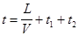
где L - расстояние от завода-поставщика сжиженных газов до ГНС, км;
V - нормативная суточная скорость доставки грузов МПС повагонной отправки, км/сут (допускается 330 км/сут);
t1 - время, затрачиваемое на операции, связанные с отправлением и прибытием груза (принимается 1 сут);
t2 - время, на которое следует предусматривать эксплуатационный запас сжиженных газов на ГНС (принимается в зависимости от местных условий в размере 3-5 сут).
При соответствующем обосновании (ненадежность транспортных связей и др.) допускается увеличивать t2, но не более чем до 10 сут.
8.45. При расположении ГНС в непосредственной близости от предприятия, вырабатывающего сжиженные газы, транспортирование которых на ГНС осуществляется в автоцистернах или по трубопроводам, а также для АГЗС с получением сжиженных газов с ГНС допускается сокращать t до 2 сут.
При размещении ГНС на территории промышленного предприятия запас сжиженных газов следует определять в зависимости от принятого для промышленного предприятия норматива по хранению резервного топлива.
8.46. Резервуары для сжиженных газов на ГНС могут устанавливаться надземно и подземно.
Надземными считаются резервуары, у которых нижняя образующая находится на одном уровне или выше планировочной отметки прилегающей территории.
Подземно расположенными резервуарами следует считать резервуары, у которых верхняя образующая резервуара находятся ниже планировочной отметки земли не менее чем на 0,2 м.
К подземным резервуарам приравниваются надземные, засыпаемые грунтом на высоту не менее 0,2 м выше их верхней образующей и шириной не менее 6 м, считая от стенки резервуара до бровки насыпи.
Размещение резервуаров в помещениях не допускается.
Примечание. Прилегающей к резервуару территорией считается территория на расстоянии 6 м от стенки резервуара.
8.47. Резервуары должны устанавливаться с уклоном 2-3 о/оо в сторону сливного патрубка.
8.48. Надземные резервуары следует устанавливать на опоры из негорючих материалов (с пределами огнестойкости не менее 2 ч) с устройством стационарных металлических площадок с лестницами.
Площадки должны предусматриваться с двух сторон от арматуры, приборов и люков. К штуцеру для вентиляции следует предусматривать площадку с одной стороны
Площадки и лестницы следует выполнять в соответствии с требованиями, предусмотренными п. 8.40.
При устройстве одной площадки для нескольких резервуаров лестницы следует предусматривать в концах площадки. При длине площадки более 60 м в средней ее части следует предусматривать дополнительную лестницу. Лестницы должны выводиться за обвалование.
8.49. Надземные резервуары должны быть защищены от нагрева солнечными лучами (например, окраска резервуаров в белый или серебристый цвет, водяное охлаждение в соответствии с указаниями п.8.91).
8.50. Надземные резервуары следует располагать группами, как правило, в районе пониженных планировочных отметок площадки ГНС. Максимальную общую вместимость надземных резервуаров в группе следует принимать в соответствии с табл. 16.
Таблица 16
|
Общая вместимость резервуаров в группе м3 |
|
|
До 2000 |
1000 |
|
Св. 2000 до 8000 |
2000 |
Максимальные расстояния в свету между группами резервуаров следует принимать по табл. 17.
Таблица 17
|
Общая вместимость резервуаров в группе, м3 |
Расстояние в свету между внешними образующими крайних резервуаров групп расположенных надземно, м |
|
До 200 |
5 |
|
Св. 200 до 700 |
10 |
|
Св. 700 до 2000 |
20 |
8.51. Внутри группы расстояния в свету между надземными резервуарами должны быть не менее диаметра наибольшего из рядом стоящих резервуаров, а при диаметре резервуаров до 2 м - не менее 2 м.
Расстояние между рядами надземных резервуаров, размещаемых в два и более рядов, следует принимать равным длине наибольшего резервуара, но не менее 10 м.
8.52. Для каждой группы надземных резервуаров по периметру должно предусматриваться замкнутое обвалование или ограждающая стенка из негорючих материалов (например, из кирпича, бутобетона, бетона и т. п.) высотой не менее 1 м, рассчитанные на 85 % вместимости резервуаров в группе. Ширина земляного вала по верху должна быть не менее 0,5 м. Расстояния от резервуаров до подошвы обвалования или ограждающей стенки должны быть равны половине диаметра ближайшего резервуара, но не менее 1 м.
Для входа на территорию резервуарного парка по обе стороны обвалования или ограждающей стенки должны быть предусмотрены лестницы-переходы шириной 0,7 м, не менее двух на каждую группу, расположенные в разных концах обвалования.
8.53. Для подземного размещения допускается предусматривать только цилиндрические резервуары.
Расстояния в свету между отдельными подземными резервуарами должны быть равны половине диаметра большего смежного резервуара, но не менее 1 м.
8.54. Подземные и надземные, засыпаемые грунтом, резервуары должны устанавливаться, как правило, непосредственно на грунт.
Устройство фундаментов для резервуаров следует предусматривать при неблагоприятных грунтовых условиях: наличии грунтовых вод на глубине разработки котлована или несущей способности грунта менее 0,1 МПа (1 кгс/см2), или опирании резервуара на пучинистый грунт и др.
Фундаменты под резервуары следует предусматривать из негорючих материалов, например, камня, бетона, железобетона и др.
Засыпку резервуаров следует предусматривать песчаным или глинистым грунтом, не имеющем в своем составе органических примесей.
8.55. При размещении подземных резервуаров в пучинистом грунте последний должен быть заменен песчаным на глубину промерзания, а в местах с высоким стоянием грунтовых вод (выше нижней образующей резервуаров) следует предусматривать решения по предотвращению всплытия резервуаров.
8.56* Резервуары следует защищать от коррозии: подземные - в соответствии с требованиями ГОСТ 9.602-89 и нормативно-технической документации, утвержденной в установленном порядке:
надземные - покрытием, состоящим из двух слоев грунтовки и двух слоев краски, лака или эмали, предназначенных для наружных работ при расчетной температуре в районе строительства.
ТЕХНОЛОГИЧЕСКОЕ ОБОРУДОВАНИЕ ГНС
8.57. Для перемещения жидкой и паровой фаз СУГ по трубопроводам ГНС следует предусматривать насосы, компрессоры или испарительные (теплообменные) установки.
Допускается использовать энергию природного газа для слива и налива СУГ, давление насыщенных паров которых при температуре 45 °С не превышает 1,2 МПа (12 кгс/см2). При этом парциальное давление природного газа в опорожняемых резервуарах должно быть не более 0,2 МПа (2 кгс/см2). При большем парциальном давлении, но не выше 0,5 МПа (5 кгс/см2) необходимо предусматривать контроль компонентного состава СУГ. При этом содержание этано-этиленовых фракций в природном газе должно быть не более 5 %, а содержание метана К, % (моль), в сжиженных газах не должно быть более величины, определяемой по формуле
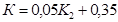
где К2 - концентрация бутановых фракций в СУГ, % (моль).
8.58. Компрессоры следует размещать в отапливаемых помещениях.
Пол помещения, где размещаются насосы и компрессоры, должен быть не менее чем на 0,15 м выше планировочных отметок прилегающей территории.
8.59. Насосы и компрессоры следует устанавливать на фундаментах, не связанных с фундаментами другого оборудования и стенами здания.
При размещении в один ряд двух и более насосов или компрессоров необходимо предусматривать, м, не менее:
ширину основного прохода по фронту обслуживания 1,5
расстояние между насосами 0,8
расстояние между компрессорами 1,5
расстояние между насосами и компрессорами 1,0
расстояние от насосов и компрессоров до стен помещения 1,0
8.60. На всасывающих трубопроводах насосов и компрессоров следует предусматривать запорные устройства, на напорных трубопроводах - запорные устройства и обратные клапаны.
Перед насосами следует предусматривать фильтры с продувочными трубопроводами, за насосами на напорных трубопроводах - продувочные трубопроводы, которые допускается объединять с продувочными трубопроводами от фильтров. На напорном коллекторе насосов следует предусматривать перепускное устройство, соединенное с всасывающей линией насоса. На перепускном устройстве не допускается предусматривать запорную арматуру.
На всасывающих линиях компрессоров должны предусматриваться конденсатосборники, на нагнетательных линиях за компрессорами - маслоотделители. Конденсатосборники должны оборудоваться сигнализаторами уровня и дренажными устройствами.
Сигнализаторы уровня должны иметь блокировку с компрессорами, обеспечивающую остановку компрессора при максимальном уровне газа в конденсатосборнике.
8.61.* Компрессоры и насосы должны быть оборудованы автоматикой, отключающей электродвигатели во всех случаях, предусмотренных в техническом паспорте компрессора или насоса, а также в случае:
загазованности помещения в соответствии с указаниями пп. 8.104 и 8.105;
повышения давления на нагнетательных линиях насоса и компрессора свыше 1,6 МПа (16 кгс/см2);
достижения максимального уровня в заполняемом резервуаре (для агрегатов, предусматриваемых для заполнения резервуаров).
8.62. Испарители (теплообменники) следует оборудовать автоматикой, обеспечивающей отключение испарителя в случаях, указанных в п. 9.25, а также при максимальном уровне газа в заполняемом резервуаре в случае заполнения резервуаров с помощью испарителей (теплообменников).
8.63. Соединение электродвигателей с насосами и компрессорами следует предусматривать муфтовым с диэлектрическими прокладками и шайбами.
При реконструкции существующих насосно-компрессорных отделений допускается сохранять соединение двигателя с насосом или компрессором клиноременной передачей при условии исключения возможности искрообразования.
8.64. Оборудование наполнительного отделения следует принимать, как правило, из условия обеспечения механизированного комплексного выполнения операций по сливу, наполнению, контролю герметичности и контролю наполнения баллонов.
8.65. Контроль степени наполнения баллонов следует предусматривать независимо от способа их наполнения путем взвешивания или другим методом, обеспечивающим неменьшую точность определения степени наполнения всех баллонов (100 %).
Для обеспечения контроля герметичности баллонов в холодное время года допускается предусматривать установки для подогрева газа.
8.66. Для слива газа из переполненных баллонов и неиспарившегося газа следует предусматривать резервуары, размещаемые:
в пределах базы хранения - при общей вместимости резервуаров свыше 10 м3;
на расстоянии не менее 3 м от здания наполнительного цеха (на непроезжей территории) - при общей вместимости резервуаров до 10 м3.
8.67. Для наполнения СУГ автоцистерн и заправки газобаллонных автомобилей, принадлежащих предприятиям газового хозяйства, следует предусматривать наполнительные и заправочные колонки, которые следует размещать на общей площадке. Допускается предусматривать заправочные колонки вне территории ГНС на расстоянии не менее 20 м от ограды ГНС.
Допускается не предусматривать указанные клапаны при бесшланговом способе налива (слива) газа при условии обоснования надежности принятой конструкции и согласования с эксплуатирующей организацией.
8.69. Для контроля степени заполнения автоцистерн следует предусматривать автовесы.
При использовании подогретого газа следует контролировать его температуру, которая не должна превышать 45 °С.
8.70. На трубопроводах жидкой и паровой фазы к колонкам следует предусматривать отключающие устройства на расстоянии не менее 10 м от колонок.
8.71. Испарители и теплообменники для подогрева СУГ (в дальнейшем - испарительные установки) предусматриваемые вне помещений, следует размешать на расстоянии не менее 10 м от резервуаров для хранения СУГ и не менее 1 м от стен здания насосно-компрессорного отделения или наполнительного цеха
8.72. Испарительные установки, размещаемые в помещениях, следует устанавливать в здании наполнительного цеха или в отдельном помещении того здания, где имеются газопотребляющие установки, или в отдельном здании, отвечающем требованиям, установленным для зданий категории А. При этом испарительные установки, располагаемые в помещениях ГНС без постоянного пребывания обслуживающего персонала, должны быть оборудованы дублирующими приборами контроля технологического процесса, размещаемыми в помещениях ГНС с обслуживающим персоналом.
8.73. Испарительные установки производительностью до 200 кг/ч допускается размещать в насосно-компрессорном отделении или непосредственно на крышках горловин (на штуцерах) подземных и надземных резервуаров, а также в пределах базы хранения на расстоянии не менее 1 м от резервуаров.
8.74. Расстояние между испарителями следует принимать не менее диаметра испарителя, но во всех случаях - не менее 1 м.
8.75. Не допускается предусматривать на ГНС испарительные установки с применением открытого огня.
ГАЗОПРОВОДЫ, АРМАТУРА И КИП
8.76.* Газопроводы ГНС следует проектировать с учетом обеспечения раздельного приема, хранения и выдачи газа различных марок, предусмотренных ГОСТ 20448-90.
На вводе газопроводов в насосно-компрессорное и наполнительное отделения следует предусматривать снаружи здания отключающее устройство с электроприводом на расстоянии не менее 5 м и не более 30 м.
8.77. Газопроводы жидкой и паровой фазы с рабочим давлением до 1,6 МПа (16 кгс/см2) следует предусматривать из стальных труб в соответствии с требованиями, предусмотренными в разд 11.
Для присоединения сливных, наливных и заправочных устройств ГНС следует предусматривать, как правило, резиновые и резинотканевые рукава, материал которых должен обеспечивать стойкость рукавов к транспортируемому газу при заданных давлении и температуре.
8.78. Прокладку газопроводов в производственной зоне ГНС следует предусматривать надземной на опорах из негорючих материалов высотой не менее 0,5 м от уровня земли.
Допускается прокладка газопроводов по наружным стенам (кроме стен из панелей с металлическими обшивками и полимерным утеплителем) основных производственных зданий ГНС на расстоянии 0,5 м выше или ниже оконных и на 0,5 м выше дверных проемов. В этих случаях размещать арматуру, фланцевые и резьбовые соединения над и под проемами не допускается.
При проходе газопроводов через наружные стены следует учитывать требования п. 4.19.*
8.79. Проходы газопроводов и других коммуникаций через стены, отделяющие помещения с взрывоопасными зонами класса В-Iа от помещений без взрывоопасных зон, следует предусматривать уплотненными, в футлярах с сальниками со стороны взрывоопасного помещения.
8.80. Гидравлический расчет трубопроводов сжиженных газов следует производить в соответствии с справочных приложением 5.
8.81.* На участках надземных газопроводов жидкой фазы, ограниченных запорными устройствами, для защиты трубопровода от повышения давления при нагреве солнечными лучами параллельно запорному устройству следует предусматривать установку обратного клапана, обеспечивающего пропуск газа в резервуары базы хранения, или предохранительного клапана, сброс газа от которого должен предусматриваться через свечу на высоту не менее 3 м от уровня земли.
8.82. В помещениях насосно-компрессорном, наполнения и слива, дегазации баллонов, окрасочном, а также в других помещениях категории А следует предусматривать установку сигнализаторов опасной концентрации газа в воздухе помещения.
8.83. Для подземных и надземных резервуаров СУГ следует предусматривать КИП и предохранительную арматуру в соответствии с «Правилами устройства и безопасной эксплуатации сосудов, работающих под давлением», утвержденных Госгортехнадзором СССР.
8.84. Пропускную способность предохранительных клапанов (количество газа, подлежащего отводу через предохранительный клапан) для надземных резервуаров следует определять из условий теплообмена между надземным резервуаром у окружающей средой в случае пожара при температуре окружающего воздуха 600 °С, а для подземных резервуаров следует принимать в размере 30 % расчетной пропускной способности, определенной для надземных резервуаров.
8.85. Отвод газа от предохранительных клапанов резервуаров следует предусматривать через продувочные (сбросные) трубопроводы, которые должны быть выведены на высоту, определяемую расчетом, но не менее 3 м от настила обслуживающей площадки надземных резервуаров или от поверхности засыпки подземных резервуаров. Допускается присоединение нескольких предохранительных клапанов к одному продувочному трубопроводу.
На концах сбросных трубопроводов необходимо предусматривать устройства, исключающие попадание атмосферных осадков в эти трубопроводы и направление потока газа вниз.
На сбросных трубопроводах от предохранительных клапанов установка отключающих устройств не допускается.
8.86. КИП, регулирующую, предохранительную и запорную арматуру подземных резервуаров следует устанавливать над засыпной частью и предусматривать защиту их от повреждений.
ВОДОСНАБЖЕНИЕ, КАНАЛИЗАЦИЯ, ОТОПЛЕНИЕ И ВЕНТИЛЯЦИЯ
8.87.* При проектировании водоснабжения, канализации, отопления и вентиляции ГНС следует выполнять требования СНиП 2.04.01-85, СНиП 2.04.02-84, СНиП 2.04.03-85, СНиП 2.04.05-91,* СНиП 2.04.07-86*, СНиП 2.01.02-85* и настоящего раздела.
8.88. На ГНС следует предусматривать систему наружного пожаротушения, включающую резервуары с противопожарным запасом воды, насосную станцию и кольцевой водопровод высокого давления с пожарными гидрантами.
При общей вместимости резервуаров на базе хранения 200 м3 и менее следует предусматривать для тушения пожара систему водопровода низкого давления или пожаротушение из водоемов.
8.89. Расход воды на наружное пожаротушение ГНС следует принимать по табл. 18.
Таблица 18
|
Общая вместимость резервуаров сжиженных газов на базе хранения, м3 |
Расход воды, л/с, резервуарами |
|
|
надземными |
подземными |
|
|
До 200 включ. |
15 |
15 |
|
До 1000 включ. |
20 |
15 |
|
До 2000 включ. |
40 |
20 |
|
Св. 2000, но не более 8000 |
80 |
40 |
8.90. Противопожарную насосную станцию на ГНС с надземными резервуарами по надежности действия следует относить к I категории.
При электроснабжении ГНС от одного источника питания необходимо предусматривать установку резервных противопожарных насосов с двигателями внутреннего сгорания.
Расход воды следует принимать из расчета одновременного орошения трех резервуаров при однорядном расположении резервуаров в группе и шести резервуаров при двухрядном расположении в одной группе и учитывать дополнительно к расходу воды, указанному в табл. 18.
При определении общего расхода воды на наружное пожаротушение и орошение резервуаров следует учитывать расход воды из гидрантов в количестве 25 % расхода, указанного в табл. 18.
8.92. Пожаротушение сливной эстакады необходимо предусматривать передвижными средствами от принятой для ГНС системы противопожарного водоснабжения.
8.93.* На водопроводных колодцах, располагаемых в зоне радиусом 50 м от зданий по взрывопожарной опасности категории А, а также наружных установок и сооружений ГНС с взрывоопасными зонами класса В-Iг, следует предусматривать по две крышки; пространство между крышками должно быть засыпано песком слоем не менее 0,15 м или уплотнено другим материалом, исключающим проникновение газа в колодцы в случае его утечки.
8.94. На ГНС необходимо предусматривать производственную и бытовую канализацию.
8.95. При проектировании канализации ГНС следует при возможности предусматривать совместное отведение бытовых и производственных сточных вод и повторное использование незагрязненных производственных стоков, а также загрязненных производственных стоков после их локальной очистки.
8.96. Отвод сточных вод после пропарки (промывки) резервуаров, автоцистерн и баллонов следует предусматривать в производственную канализацию через отстойник, конструкция которого должна давать возможность улавливания плавающих загрязнений, аналогичных по составу нефтепродуктам.
8.97. Отвод поверхностных вод, а также воды после гидравлического испытания резервуаров с обвалованной территории базы хранения следует предусматривать за счет планировки территории базы хранения с выпуском воды через дождеприемник с гидрозатвором.
8.98.* На выпусках производственной канализации из помещений по взрывопожарной опасности категории А следует предусматривать колодцы с гидрозатворами. Канализационные колодцы, располагаемые в зоне радиусом до 50 м от этих зданий, наружных установок и сооружений ГНС с взрывоопасными зонами класса В-Iг, необходимо предусматривать с двумя крышками, пространство между крышками должно быть засыпано песком на высоту не менее 0,15 м или уплотнено другим материалом, исключающим проникновение газа в колодцы в случае его утечки.
8.99. Трубопроводы тепловых сетей на территории ГНС следует предусматривать, как правило, надземными. Подземная прокладка допускается на отдельных участках при невозможности осуществить надземную прокладку.
8.100. Прокладку трубопроводов систем отопления внутри производственных помещений категории А следует предусматривать открытой. Допускается прокладка трубопроводов в штрабе.
8.101. Для закрытых помещений категории А необходимо предусматривать системы искусственной приточно-вытяжной вентиляции. Для обеспечения расчетного воздухообмена в верхних зонах помещений допускается устройство естественной вентиляции с установкой дефлекторов. В нерабочее время допускается предусматривать в этих помещениях естественную или смешанную вентиляцию.
8.102. Кратность воздухообмена в помещениях насосно-компрессорного, испарительного, наполнительного отделений, отделениях дегазации и окраски баллонов необходимо предусматривать в размере не менее десяти обменов в час в рабочее время и трех обменов в час в нерабочее время.
8.103. Вытяжку из производственных помещений категории А, в которых обращаются сжиженные газы, следует предусматривать из нижней и верхней зон помещения, при этом из нижней зоны необходимо забирать не менее 2/3 нормируемого объема удаляемого воздуха с учетом количества воздуха, удаляемого местными отсосами. Проемы систем общеобменной вытяжной вентиляции следует предусматривать на уровне 0,3 м от пола.
8.104. Аварийную вентиляцию следует предусматривать в соответствии с требованиями СНиП 2.04.05-91. Включение аварийной вентиляции следует предусматривать автоматическое от приборов, сигнализирующих об опасной концентрации газа в воздухе помещения. Удаление воздуха при этом следует предусматривать из нижней зоны помещения. Одновременно с включением аварийной вытяжной вентиляции должно обеспечиваться отключение электроприводов насосов и компрессоров.
Примечание. Опасной концентрацией газе в воздухе помещения следует считать концентрацию более 20 % нижнего концентрационного предела воспламеняемости газа.
8.105. Электроприводы насосов, компрессоров и другого оборудования, устанавливаемого в производственных помещениях категории А, следует блокировать с вентиляторами вытяжных систем таким образом, чтобы они не могли работать при отключении вентиляции.
8.106. В неотапливаемых производственных помещениях ГНС, в которых обслуживающий персонал находится менее двух часов, допускается предусматривать естественную вентиляцию через жалюзийные решетки, размещаемые в нижней части наружных стен.
8.107. От оборудования, в конструкции которого имеются местные отсосы, удаление воздуха следует предусматривать отдельными вентиляционными системами.
ГАЗОНАПОЛНИТЕЛЬНЫЕ ПУНКТЫ
8.108. ГНП предназначаются для приема СУГ, поступающих преимущественно автомобильным транспортом, хранения и отпуска СУГ потребителям в баллонах.
8.109. Здания, сооружения и устройства ГНП следует проектировать в соответствии с требованиями, предъявляемыми к аналогичным объектам и устройствам ГНС, с учетом дополнительных указаний настоящего подраздела.
8.110. Вместимость базы хранения на ГНП следует определять в соответствии с требованиями пп. 8.44 и 8.45. При этом запас газа следует принимать из условия обеспечения не менее 2 - суточной производительности ГНП.
8.111. ГНП следует располагать, как правило, в пределах территории поселений, по возможности с подветренной стороны для ветров преобладающего направления по отношению к жилой застройке.
8.112.* Выбор площадки для строительства ГНП следует производить с учетом обеспечения снаружи ограждения ГНП, свободной от застройки зоны шириной не менее 10 м. Указанное требование не распространяется на расширяемые и реконструируемые ГНП.
8.113. Территория ГНП подразделяется на производственную и вспомогательную зоны, на которых в зависимости от технологического процесса приема, транспортирования, хранения и отпуска СУГ потребителям необходимо предусматривать следующие основные здания и сооружения:
в производственной зоне:
колонки для слива газа;
базу хранения с резервуарами для хранения СУГ;
наполнительный цех с погрузочно-разгрузочной площадкой для размещения наполненных и пустых баллонов;
насосно-компрессорную и воздушную компрессорную;
испарительную (теплообменную) установку;
резервуары для слива из баллонов неиспарившегося газа;
внутриплощадочные трубопроводы для перемещения паровой и жидкой фазы СУГ в соответствии с технологической схемой ГНП;
во вспомогательной зоне:
производственно-вспомогательное здание с размещением в нем механической мастерской, сантехнической насосной, административно-хозяйственных и других помещений;
трансформаторную подстанцию;
котельную (если невозможно подключение к существующим источникам теплоснабжения);
площадку для открытой стоянки автомобилей;
резервуары для противопожарного запаса воды;
складские и другие помещения.
Перечень зданий и сооружений, размещаемых во вспомогательной зоне, следует уточнять в соответствии с техническими условиями на проектирование.
Допускается предусматривать размещение службы эксплуатации газового хозяйства с примыканием к территории ГНП.
8.114. Минимальные расстояния от резервуаров для хранения СУГ, размещаемых на ГНП, до зданий и сооружений, не относящихся к ГНП, следует принимать по табл. 19, до дорог - по табл. 20.
Расстояние до базы хранения с резервуарами различной вместимости следует принимать по резервуару с наибольшей вместимостью.
8.115.* Минимальные расстояния между зданиями и сооружениями, размещаемыми на территории ГНП, следует принимать по табл. 15 как для ГНС.
При размещении на ГНП резервуаров для хранения сжиженного газа общей вместимостью менее 50 м3 указанное расстояние следует принимать по табл. 21 как для ПСБ.
Таблица 19
|
Максимальная вместимость одного резервуара, м3 |
Расстояние от резервуаров до зданий (жилых, общественных, производственных и др.) не относящихся к ГНП, м |
||
|
надземных |
подземных |
||
|
От 50 до 100 |
25 |
80 |
40 |
|
То же |
50 |
100 |
50 |
|
Св. 100 до 200 |
50 |
150 |
75 |
Таблица 20
|
Расстояния от резервуаров сжиженных газов при общей вместимости резервуаров на ГНП, м |
||||
|
до 100 м3 |
св. 100 м3 |
|||
|
надземных |
подземных |
надземных |
подземных |
|
|
Железные дороги общей сети (да подошвы насыпи или бровки выемки со стороны резервуаров) |
50 |
30 |
75 |
50 |
|
Подъездные пути железных дорог промышленных предприятий, трамвайные пути (до оси пути), автомобильные дороги (до края проезжей части) |
20 |
15 |
30 |
20 |
Расстояния до зданий подстанций следует принимать в соответствии с примечанием к табл. 15.
В зданиях, находящихся на территории ГНП, предусматривать производства, не относящиеся к ГНП, и жилые помещения не допускается.
ПРОМЕЖУТОЧНЫЕ СКЛАДЫ БАЛЛОНОВ
8.116. ПСБ предназначаются для приема, хранения и отпуска потребителям баллонов, наполненных сжиженными газами на ГНС и ГНП.
8.117. В составе ПСБ следует предусматривать помещения для складирования наполненных и пустых баллонов (из расчета размещения 25 % баллонов от числа обслуживаемых установок) и погрузочно-разгрузочные площадки для приема и отпуска баллонов. Для площадок с размещением свыше 400 баллонов необходимо предусматривать механизацию погрузочно-разгрузочных работ.
Допускается хранение не более 10 баллонов в шкафах из негорючих материалов. Минимальные расстояния от шкафов до зданий и сооружений следует принимать по табл. 26 и 27.
8.118. Здания для складирования баллонов должны соответствовать требованиям «Правил устройства и безопасной эксплуатации сосудов, работающих под давлением», утвержденных Госгортехнадзором СССР.
8.119. ПСБ следует располагать в пределах территории поселений, как правило, с подветренной стороны для ветров преобладающего направления по отношению к жилой застройке, вблизи от автомобильных дорог.
8.120. Расстояния от склада и погрузочно-разгрузочных площадок ПСБ до зданий и сооружений различного назначения следует принимать не менее значений, указанных в табл. 21, при этом приведенное в поз. 2 расстояние от ПСБ до одноэтажных зданий садоводческих и дачных поселков допускается уменьшать не более чем в 2 раза при условии размещения на ПСБ не более 150 баллонов.
Таблица 21
|
Расстояния от здания склада и погрузочно-разгрузочных площадок в зависимости от числа наполненных 50 - литровых баллонов, м |
||||
|
до 400 |
от 400 до 1200 |
св. 1200 |
независимо от вместимости склада |
|
|
1. Здания и сооружения на территории ПСБ |
20 |
25 |
30 |
- |
|
2. Жилые здания |
- |
- |
- |
50 |
|
3. Общественные здания непроизводственного характера |
- |
- |
- |
100 |
|
4. Здания промышленных и сельскохозяйственных предприятий, а также предприятий бытового обслуживания производственного характера, автомобильные дороги (до края дороги) и железные дороги, включая подъездные (до оси пути) |
- |
- |
- |
20 |
Размещение складов с баллонами для сжиженных газов на территории промышленных предприятий следует предусматривать в соответствии с указаниями СНиП II-89-80*.
АВТОМОБИЛЬНЫЕ ГАЗОЗАПРАВОЧНЫЕ СТАНЦИИ СЖИЖЕННЫХ ГАЗОВ
8.121.* АГЗС следует размещать с соблюдением требований, предъявляемых к размещению ГНП без учета требований п. 8.112.*
8.122. В составе АГЗС следует предусматривать резервуары для хранения газа, сливные и заправочные колонки, производственное здание для размещения оборудования для перекачки СУГ, вентиляционного и другого оборудования, а также бытовых помещений.
Допускается использовать передвижные АГЗС, размещаемые в безопасных местах на расстоянии не менее 20 м от зданий и сооружений различного назначения.
8.123. Сливные колонки, предназначенные для слива газа из автоцистерн в резервуары АГЗС, следует оборудовать трубопроводами паровой и жидкой фазы, запорно-предохранительной арматурой, а также скоростными и обратными клапанами в соответствии с указаниями п. 8.41.*
Оборудование заправочных колонок, предназначенных для заправки газобаллонных автомобилей, следует предусматривать согласно требованиям п. 8.68.
Заправочные колонки следует оборудовать устройством для замера расхода газа.
8.124. Территория АГЗС должна быть ограждена проветриваемой оградой из негорючих материалов, за исключением стороны подъезда автомобилей, и в местах проезда автомобилей иметь твердое покрытие.
8.125.* Максимальная вместимость резервуаров АГЗС, располагаемой в границах селитебной территории, не должна превышать 100 м3, а вместимость одного резервуара - 50 м3. Установку резервуаров следует предусматривать, как правило, подземной.
Допускается при технико-экономической целесообразности устанавливать резервуары надземно. Общая вместимость резервуаров при этом не должна превышать 50 м3.
8.126. Здания, резервуары, трубопроводы, оборудование и КИП, предусматриваемые для АГЗС, должны соответствовать требованиям, предъявляемым к аналогичным объектам и коммуникациям ГНС (ГНП). При этом на АГЗС следует предусматривать только бытовую канализацию.
Отвод воды после охлаждения компрессора следует предусматривать в бытовую канализацию через гидрозатвор, конструкция которого должна исключать возможность попадания сжиженных газов в канализацию.
8.127. Минимальные расстояния от резервуаров на АГЗС до зданий и сооружений, не относящихся к АГЗС, следует принимать по табл. 19 и 20, до зданий и сооружений, расположенных на территории АГЗС, - по табл. 15.
При суммарной вместимости подземных резервуаров не более 50 м3 (при вместимости одного резервуара не более 5 м3) требования к размещению резервуаров следует предъявлять как к резервуарным установкам.
Минимальное расстояние от заправочных колонок до зданий и сооружений, расположенных вне пределов АГЗС, следует принимать не менее 15 м, до ограждения АГЗС - не менее 10 м.
8.128. На территории АГЗС не допускается предусматривать жилые помещения и не относящиеся к АГЗС производства, а также предусматривать оборудование и приборы с открытым огнем.
ЭЛЕКТРОСНАБЖЕНИЕ, ЭЛЕКТРООБОРУДОВАНИЕ, МОЛНИЕЗАЩИТА И СВЯЗЬ
8.129. При проектировании электроснабжения и электрооборудования зданий и сооружений ГНС, ГНП, ПСБ и АГЗС следует руководствоваться требованиями ПУЭ и настоящего подраздела.
8.130. Класс взрывоопасной зоны в помещениях и у наружных установок, в соответствии с которым должен производиться выбор электрооборудования для ГНС, ГНП, ПСБ и АГЗС, следует принимать согласно требованиям п. 8.37.
8.131.* Электроприемники ГНС, ГНП, ПСБ и АГЗС в отношении обеспечения надежности электроснабжения следует относить к III категории, за исключением электроприемников противопожарной насосной станции, которые следует относить к I категории.
При невозможности питания пожарных насосов от двух независимых источников электроснабжения допускается предусматривать их подключение в соответствии с указаниями СНиП 2.04.01-85 или предусматривать установку резервного насоса с дизельным приводом.
8.132. В помещениях насосно-компрессорного, наполнительного и испарительного отделений кроме рабочего освещения следует предусматривать дополнительное аварийное освещение.
8.133. Схема электроснабжения должна предусматривать в случае возникновения пожара автоматическое отключение технологического оборудования в помещениях с взрывоопасными зонами при опасной концентрации газа в воздухе помещения и централизованное отключение вентиляционного оборудования в соответствии с указаниями СНиП 2.04.05-91.*
8.134. На территории ГНС следует предусматривать наружное и охранное освещение, а на территории ГНП, ПСБ и АГЗС - наружное освещение.
Управление наружным и охранным освещением следует предусматривать из мест с постоянным пребыванием персонала (например, из помещения проходной).
8.135. Прокладка воздушных линий электропередачи над территорией базы хранения ГНС, ГНП и АГЗС не допускается.
Прокладка подземных кабельных линий на территории базы хранения ГНС и ГНП допускается к КИП, приборам автоматики и арматуре с электроприводом, предназначенным для эксплуатации ГНС и ГНП.
КИП и электрооборудование, размещаемые на территории базы хранения, должны быть во взрывозащищенном исполнении.
8.136.* Для зданий, сооружений, наружных технологических установок и коммуникаций в зависимости от класса взрывоопасных зон следует предусматривать молниезащиту в соответствии с требованиями РД 34.21.122-87.
8.137. Для ГНС, ГНП и АГЗС следует предусматривать внешнюю телефонную связь и диспетчерское оповещение через громкоговоритель на территории.
Для зданий ГНС допускается предусматривать внутреннюю связь.
Для ПСБ следует предусматривать возможность выхода во внешнюю телефонную сеть.
9. ГАЗОСНАБЖЕНИЕ СЖИЖЕННЫМИ газами ОТ РЕЗЕРВУАРНЫХ И БАЛЛОННЫХ УСТАНОВОК
ОБЩИЕ УКАЗАНИЯ
9.1. Требования настоящего раздела распространяются на проектирование систем газоснабжения СУГ от резервуарных и баллонных установок, а также на проектирование испарительных установок и установок по смешению СУГ с воздухом.
9.2. При проектировании систем газоснабжения СУГ для районов с особыми природными или климатическими условиями следует дополнительно учитывать требования, предусмотренные разделами 10 и 11.
9.3. Прокладку газопроводов внутри помещений, размещение газовых приборов и проектирование газоснабжения производственных установок следует осуществлять в соответствии с требованиями, изложенными в разд. 6.
РЕЗЕРВУАРНЫЕ УСТАНОВКИ
9.4. В составе резервуарной установки следует предусматривать: резервуары, трубопроводы жидкой и паровой фаз, запорную арматуру, регуляторы давления газа, предохранительные клапаны (запорные и сбросные), манометр (показывающий), штуцер с краном после регулятора давления для присоединения контрольного манометра, устройство для контроля уровня СУГ в резервуарах. В зависимости от состава СУГ и климатических условий в состав резервуарной установки могут входить также испарители или испарительные установки.
При наличии в регуляторе давления встроенного ПСК установка дополнительного сбросного клапана после регулятора не требуется.
Устройство для контроля уровня жидкости допускается предусматривать общее на группу резервуаров.
При двухступенчатом регулировании давления газа ПЗК следует устанавливать перед регулятором давления I ступени с подключением импульсной трубки за регулятором давления II ступени.
9.5. Число резервуаров в установке необходимо определять расчетом и принимать не менее двух.
Для потребителей с расчетным часовым расходом газа до 4,5 м3/ч допускается установка одного резервуара, при этом следует предусматривать две параллельные линии регулирования давления газа. Резервуары могут устанавливаться как подземно, так и надземно.
Допускается предусматривать съемные резервуары, наполняемые газом на ГНС или ГНП.
9.6. КИП, регулирующая, предохранительная и запорная арматура резервуарных установок должны соответствовать требованиям разд. 11.
9.7. Арматуру и приборы резервуарных установок следует защищать кожухами от атмосферных осадков и повреждений.
9.8. Резервуарные установки должны иметь ограждение высотой не менее 1,6 м из негорючих материалов. Расстояние от резервуаров до ограждения следует предусматривать не менее 1 м.
Допускается предусматривать теневой навес для надземных резервуаров.
9.9. Производительность резервуаров при естественном испарении следует определять:
при подземном расположении - по номограмме;
при надземном расположении - расчетом исходя из условий теплообмена с окружающей средой.
Для учета теплового воздействия рядом расположенных подземных резервуаров полученную по номограмме производительность следует умножить на коэффициент теплового взаимодействия т в зависимости от числа резервуаров в установке:
|
Число резервуаров |
Значение коэффициента в установке теплового воздействия m |
|
2 |
0,93 |
|
3 |
0,84 |
|
4 |
0,74 |
|
6 |
0,67 |
|
8 |
0,64 |
9.10. Расчетный часовой расход сжиженных газов, Qdh, кг/ч, при газоснабжении жилых зданий следует определять по формуле
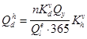
где п - число жителей, пользующихся газом, чел. При отсутствии данных п принимается по числу газифицируемых квартир и коэффициенту семейности для газифицируемого района;
Кdv - коэффициент суточной неравномерности потребления газа в течение года (при наличии в квартирах газовых плит Kvd = 1,4; при наличии плит и проточных водонагревателей Kvd = 2,0);
Qy - годовой расход газа на одного человека в тепловых единицах, кДж/год (ккал/год).
Кhv - показатель часового максимума суточного расхода - 0,12;
Qel - теплота сгорания газа, кДж/кг (ккал/кг).
9.11. Максимальную общую вместимость резервуаров в установке в зависимости от категории потребителей следует принимать по табл. 22, максимальную вместимость одного резервуара - по табл. 23.
9.12. Расстояния от резервуарных установок, считая от крайнего резервуара, до зданий и сооружений различного назначения следует принимать не менее указанных в табл. 24; до подземных сооружений - не менее указанных в табл. 27 как для групповых баллонных установок; до линий электропередачи - по ПУЭ.
Расстояние от резервуарных установок, предназначенных для газоснабжения жилых и общественных зданий, до трансформаторных подстанций и распределительных устройств следует принимать по поз. 1 и 2 табл. 24, но не менее 15 м от подземных резервуаров и 20 м от надземных резервуаров.
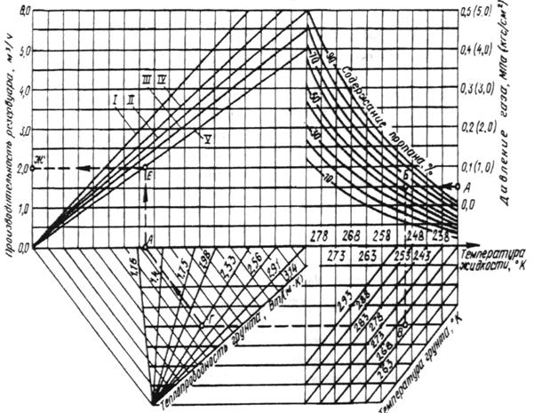
Номограмма для определения производительности резервуара сжиженного газа вместимостью 2,5 и 5 м3 (подземного)
I - резервуар 5 м3, заполнение 85 %; II - резервуар 5 м3, заполнение 50 %; III - резервуар 5 м3, заполнение 35 % и резервуар 2,5 м3, заполнение 50 %; IV - резервуар 2,5 м3, заполнение 85 %; V - резервуар 2,5 м3, заполнение 35 %
Пример.
Дано: давление газа - 0,04 МПа (0,4 кгс/см2); содержание пропана С3Н8 - 60 %; температура грунта - 270 К; теплопроводность грунта - 2,33 Вт/ (мк); заполнение 35 %.
Находим: производительность резервуара - 2 м3/ч по линии А-С-В-Г-Д-Е-Ж.
9.13. Для резервуарных установок следует применять стальные сварные резервуары цилиндрической формы, располагаемые горизонтально. Установку подземных резервуаров следует выполнять в соответствии с требованиями разд. 8.
Резервуары, предназначенные для подземной установки, надземно устанавливать не разрешается.
9.14. Защиту подземных резервуаров от коррозии следует предусматривать в соответствии с требованиями ГОСТ 9.602-89 и указаниями разд. 4. Надземные резервуары необходимо окрашивать в светлый цвет.
Таблица 22
|
Общая вместимость резервуаров, м3 |
||
|
надземных |
подземных |
|
|
Газоснабжение жилых домов и общественных зданий и сооружений |
5 |
300 |
|
Газоснабжение промышленных, сельскохозяйственных предприятий и предприятий бытового обслуживания производственного характера |
20 |
300 |
Таблица 23
|
Максимальная вместимость одного резервуара, м3 |
||
|
надземного |
подземного |
|
|
При стационарных резервуарах: |
||
|
до 20 |
5 |
5 |
|
св. 20 до 50 |
- |
10 |
|
« 50 « 100 |
- |
25 |
|
« 100 « 300 |
- |
50 |
|
При съемных резервуарах: |
||
|
до 5 |
1,6 |
- |
9.15. Подземные резервуары следует устанавливать на глубине не менее 0,6 м от поверхности земли до верхней образующей резервуара в районах с сезонным промерзанием грунта и 0,2 м в районах без промерзания грунта.
При установке резервуаров в водонасыщенных грунтах следует предусматривать мероприятия по предотвращению всплытия резервуаров при уровне грунтовых вод:
для резервуаров вместимостью не более 5 м3 - выше диаметральной горизонтальной плоскости резервуара;
для резервуаров вместимостью более 5 м3 - выше нижней образующей резервуара.
Расстояние в свету между подземными резервуарами должно быть не менее 1 м, а между надземными резервуарами - равны диаметру большего смежного резервуара, но не менее 1 м.
Таблица 24
|
Расстояние, м, от резервуаров |
|||||||||
|
надземных |
подземных |
||||||||
|
при общей вместимости резервуаров в резервуарной установке, м3 |
|||||||||
|
до 5 |
cв. 5 до 10 |
св. 10 до 20 |
до 10 |
св. 10 до 20 |
св. 20 до 50 |
св. 50 до 100 |
св. 100 до 200 |
св. 200 до 300 |
|
|
1. Общественные здания и сооружения |
40 |
- |
- |
15 |
20 |
30 |
40 |
40 |
75 |
|
2. Жилые дома: |
|||||||||
|
с проемами в стенах, обращенных к установке |
20 |
- |
- |
10 |
15 |
20 |
40 |
40 |
75 |
|
без проемов в стенах, обращенных к установке |
15 |
- |
- |
8 |
10 |
15 |
40 |
40 |
75 |
|
15 |
20 |
25 |
8 |
10 |
15 |
25 |
35 |
45 |
|
Примечания: 1. Если в жилом доме размещены учреждения (предприятия) общественного назначения, расстояния следует принимать как до жилого дома.
2. Расстояния между смежными резервуарными установками следует принимать по поз. 3.
9.16. Над подземным газопроводом жидкой фазы, объединяющим подземные резервуары, следует предусматривать контрольную трубку, выведенную над поверхностью земли на высоту не менее 1 м. При этом должна исключаться возможность попадания в трубку атмосферных осадков.
9.17. На газопроводе паровой фазы, объединяющем резервуары, следует предусматривать установку отключающего устройства между группами резервуаров на высоте не менее 0,5 м от земли.
9.18. Установку предохранительных клапанов следует предусматривать на каждом резервуаре, а при объединении резервуаров в группы (по жидкой и паровой фазам) - на одном из резервуаров каждой группы.
9.19. Пропускную способность ПСК следует определять расчетом в соответствии с «Правилами устройства и безопасной эксплуатации сосудов, работающих под давлением», утвержденными Госгортехнадзором СССР. Количество газа, подлежащего отводу через предохранительный клапан, должно определяться из условий теплообмена между резервуаром и окружающей средой согласно указаниям ОСТ 26-02-1519-76.
ИСПАРИТЕЛЬНЫЕ И СМЕСИТЕЛЬНЫЕ УСТАНОВКИ
9.20. Испарительные установки с искусственным испарением следует предусматривать в следующих случаях:
резервуарные установки при естественном испарении и резервуарные установки с грунтовыми испарителями не обеспечивают расчетную потребность в газе;
при необходимости обеспечения подачи газа постоянного состава (постоянной теплоты сгорания, постоянной плотности);
при поставке газов с повышенным содержанием бутанов (свыше 30 %) в местностях, где температура грунта на глубине установки резервуаров ниже 0 °С.
9.21. Испарительные установки в комплексе со смесительными установками (установки пропано-воздушной смеси) следует предусматривать в следующих случаях:
при газоснабжении районов или объектов, которые в перспективе будут снабжаться природным газом;
для покрытия пиковых нагрузок в сетях природного газа в периоды часового, суточного или сезонного максимума;
в качестве резервного топлива для объектов и установок, требующих бесперебойного газоснабжения;
при использовании в системах газоснабжения технического бутана.
9.22. При проектировании газоснабжения жилых районов от резервуарных установок, оснащенных испарительными и смесительными установками, предпочтение следует отдавать укрупненным системам с централизованными испарительными и смесительными установками.
При этом число квартир, которое целесообразно снабжать от одной резервуарной установки, допускается принимать при подаче паровой фазы СУГ по рекомендуемому приложению 9, при подаче газовоздушной смеси - по рекомендуемому приложению 10.
9.23. Испарительные установки подразделяются на проточные, обеспечивающие получение паровой фазы постоянного состава в специальных теплообменных аппаратах (испарителях), и емкостные с испарением сжиженных газов непосредственно в расходных резервуарах с помощью специальных нагревателей (регазификаторов).
Проточные и емкостные испарительные установки допускается предусматривать с подземными и надземными резервуарами.
9.24. При использовании в испарительных установках в качестве теплоносителя горячей воды или пара из тепловых сетей следует предусматривать мероприятия, исключающие возможность попадания паров СУГ в тепловые сети.
При использовании в испарительных установках электронагрева электрооборудование должно соответствовать требованиям ПУЭ.
Испарители производительностью до 200 кг/ч допускается размещать непосредственно на крышках горловин резервуаров или в пределах резервуарной установки на расстоянии не менее 1 м от подземных или надземных резервуаров, а также непосредственно у агрегатов, потребляющих газ, если агрегаты размещены в отдельных помещениях или на открытых площадках.
Испарители производительностью более 200 кг/ч следует размещать вне пределов резервуарной установки на расстоянии не менее:
от зданий и сооружений по табл. 26, 27
от ограды резервуарной установки 10 м
9.27. Для испарителей, размещаемых вне помещений, следует предусматривать тепловую изоляцию корпуса. При групповом размещении испарителей расстояния между ними следует принимать не менее 1 м.
9.28. Смешение газов с воздухом допускается осуществлять при давлении газа до 0,6 МПа (6 кгс/см2).
9.29.* Исключен.
9.30. Смешение паровой фазы СУГ с воздухом следует предусматривать в соотношениях, обеспечивающих превышение верхнего предела воспламеняемости смеси не менее чем в 2 раза, при этом должны предусматриваться автоматические устройства для отключения смесительной установки в случае приближения состава смеси к пределам опасной концентрации или в случае внезапного прекращения поступления одного из компонентов смеси.
9.31.* Смесительные установки следует размещать в помещениях или на открытых площадках в соответствии с требованиями, предусмотренными п. 9.26.
При поступлении газа в смесительные установки из газопроводов размещение смесительных установок следует предусматривать на расстоянии не менее указанного в табл. 26, 27*.
9.32. Здания и помещения, предназначенные для размещения испарительных и смесительных установок, должны соответствовать требованиям, установленным для помещений категории А, приведенным в разд. 8 для аналогичных установок.
ГРУППОВЫЕ БАЛЛОННЫЕ УСТАНОВКИ
9.33. Групповой баллонной установкой следует считать установку газоснабжения, в состав которой входит более двух баллонов. В каждом конкретном случае применение групповой баллонной установки должно быть обосновано.
9.34. В составе групповой баллонной установки следует предусматривать баллоны для СУГ, коллектор высокого давления, регулятор давления газа или регулятор-переключатель автоматический, общее отключающее устройство, манометр (показывающий), ПСК (сбросной) и трубопроводы.
При наличии в регуляторе давления встроенного ПСК установка дополнительного клапана не требуется.
9.35. Число баллонов в одной групповой установке следует определять расчетом исходя из часового расхода газа и производительности одного баллона в зависимости от температуры окружающего воздуха, марки газа и продолжительности отбора газа.
9.36. Максимальную суммарную вместимость баллонов в групповой баллонной установке следует принимать по табл. 25.
Таблица 25
|
Вместимость всех баллонов в групповой баллонной установке, л, при размещении |
||
|
у стен здания |
на расстоянии от зданий |
|
|
Газоснабжение жилых домов и общественных зданий непроизводственного характера |
600 |
1000 |
|
Газоснабжение промышленных и сельскохозяйственных предприятий и предприятий бытового обслуживания производственного характера |
1000 |
1500 |
9.37. Групповые баллонные установки следует размещать в шкафах из негорючих материалов или под защитными кожухами.
Размещение групповых баллонных установок следует предусматривать непосредственно у зданий или на расстоянии от зданий, не менее указанного в табл. 26, и от сооружений на расстоянии, не менее указанного в табл. 27*.
Таблица 26
|
Расстояние от групповой баллонной установки, м |
|
|
Жилые дома, производственные здания промышленных предприятий. здания предприятий бытового обслуживания производственного характера и другие здания степени огнестойкости: |
|
|
I и II |
8 |
|
III и IIIа |
10 |
|
IV, IVa и V |
12 |
|
Общественные здания независимо от степени огнестойкости |
25 |
|
Временные отдельно стоящие хозяйственные строения (например, дровяные сараи, навесы и т. п.) |
8 |
Таблица 27*
|
Расстояние по горизонтали от шкафа групповой баллонной установки, м |
|
|
Канализация, теплотрасса |
3,5 |
|
Водопровод и другие бесканальные коммуникации |
2,0 |
|
Колодцы подземных коммуникаций, выгребные ямы |
5,0 |
|
Электрокабели и воздушные линии электропередачи |
В соответствии с ПУЭ |
|
Телефонные кабели и воздушные линии телефонной и радиотрансляционной сети |
В соответствии с ВСН 116-87 и ВСН 600-81 Минсвязи СССР |
9.38.* Стены зданий, непосредственно у которых размещаются групповые баллонные установки, должны быть не ниже III-IIIа степени огнестойкости и не иметь утеплителя из горючего материала, оконных и дверных проемов на расстоянии, не менее указанного в табл. 26, от групповой баллонной установки.
Возле общественного или производственного здания не допускается предусматривать размещение более одной групповой баллонной установки.
Возле жилого дома допускается предусматривать размещение не более трех групповых баллонных установок на расстоянии не менее 15 м одна от другой.
9.39. Шкафы и баллоны следует устанавливать на фундаменты, вокруг которых должна выполняться отмостка шириной не менее 1 м перед шкафом и 0,5 м с остальных сторон.
Групповые баллонные установки следует располагать в местах, имеющих удобный подъезд для автотранспорта.
Групповые баллонные установки, размещаемые под защитными кожухами, должны иметь ограждение из негорючих материалов.
Над групповыми баллонными установками допускается предусматривать теневой навес из негорючих материалов.
9.40. При необходимости обеспечения стабильного испарения СУГ и невозможности использования резервуарных установок допускается предусматривать размещение групповой баллонной установки в специальном строении или в пристройке к глухой наружной стене газифицируемого производственного здания. Указанные строения или пристройки должны отвечать требованиям разд. 5 как для отдельно стоящих или пристроенных ГРП.
Вентиляцию следует проектировать из расчета пятикратного воздухообмена в час с удалением 2/3 воздуха из нижней зоны помещения.
9.41. Требования п. 9.40 распространяются на проектирование помещений магазинов для продажи малолитражных баллонов населению. Максимальную вместимость баллонов, находящихся в магазине, и минимальное расстояние от магазина до зданий и сооружений следует принимать по табл. 25 и 26 как для промышленных предприятий.
ТРУБОПРОВОДЫ ГРУППОВЫХ БАЛЛОННЫХ И РЕЗЕРВУАРНЫХ УСТАНОВОК
9.42. Трубопроводы обвязки резервуаров, баллонов и регуляторов давления следует рассчитывать на давление, принятое для резервуаров или баллонов.
9.43. Наружные газопроводы от групповых баллонных и резервуарных установок следует предусматривать из стальных труб, отвечающих требованиям разд. 11.
Допускается предусматривать присоединение газового оборудования временных установок и установок сезонного характера, размещенных вне помещения, при помощи резинотканевых рукавов с выполнением требований разд. 6.
9.44. Прокладку подземных газопроводов низкого давления от групповых баллонных и резервуарных установок с искусственным испарением газа следует предусматривать на глубине, где минимальная температура выше температуры конденсации газа.
Газопроводы от емкостных испарителей следует прокладывать ниже глубины промерзания грунта.
При невозможности выполнения указанных требований следует предусматривать обогрев газопроводов или конденсатосборников.
9.45. Прокладку надземных газопроводов от групповых баллонных установок, размещаемых в отапливаемых помещениях, и от подземных резервуарных установок следует предусматривать с тепловой изоляцией и обогревом газопроводов. Тепловую изоляцию следует предусматривать из негорючих материалов.
9.46. Уклон газопроводов следует предусматривать не менее 5 о/оо в сторону конденсатосборников для подземных газопроводов и в сторону газоснабжающей установки для надземных газопроводов. Вместимость конденсатосборников следует принимать не менее 4 л на 1 м3 расчетного часового расхода газа.
9.47. Отключающие устройства на газопроводах низкого давления от групповых баллонных и резервуарных установок следует предусматривать в соответствии с указаниями разд. 4.
В случае газоснабжения более 400 квартир от одной резервуарной установки следует предусматривать дополнительное отключающее устройство на подземном газопроводе от резервуарной установки в колодце глубиной не более 1 м или над землей под защитным кожухом (в ограде).
ИНДИВИДУАЛЬНЫЕ БАЛЛОННЫЕ УСТАНОВКИ
9.48. Индивидуальной баллонной установкой следует считать установку газоснабжения СУГ, в состав которой входит не более двух баллонов.
9.49.* Индивидуальные баллонные установки допускается предусматривать как снаружи, так и внутри зданий.
При газоснабжении СУГ с повышенным содержанием бутана следует предусматривать размещение баллонов, как правило, внутри жилых зданий.
Размещение баллонов внутри жилых зданий, имеющих более двух этажей, не допускается.
9.50. При газификации двухэтажных жилых домов допускается установка баллонов внутри помещений при числе квартир:
не более четырех в домах новой застройки;
не более восьми в домах существующей застройки.
9.51. Помещения, в которых предусматривается размещение газовых приборов и баллонов с газом, должны отвечать требованиям, предусмотренным разд. 6.
Дополнительные требования к помещениям в связи с установкой баллонов не предъявляются.
При размещении баллонов в существующих жилых домах в помещениях, под которыми имеются подвалы или погреба и вход в них осуществляется из этих помещений, следует предусматривать уплотнение полов и входов в подвалы и погреба, заделку щелей для исключения возможности проникания газа в подземные сооружения.
9.52.* Установка баллонов с газом не допускается:
в жилых комнатах;
в цокольных и подвальных помещениях;
в помещениях, расположенных под обеденными и торговыми залами предприятий общественного питания, а также под аудиториями и учебными классами, под зрительными (актовыми) залами общественных и производственных зданий, больничными палатами и другими аналогичными помещениями; в помещениях без естественного освещения.
9.53. Газоснабжение СУГ агрегатов, установок и различных горелок, размещенных в цокольных и подвальных помещениях, не допускается.
9.54. Установку баллонов СУГ в производственных помещениях следует предусматривать в местах, защищенных от повреждения внутрицеховым транспортом, брызг металла и воздействия коррозионно-активных жидкостей и газов, а также от нагрева выше 45 °С. Допускается размещать баллоны непосредственно у агрегатов, потребляющих газ, если это предусмотрено конструкцией агрегата.
9.55. Индивидуальные баллонные установки, предназначенные для газоснабжения животноводческих и птицеводческих помещений, следует размещать вне зданий. В оранжереях и теплицах допускается размещение баллонов внутри зданий.
10. ДОПОЛНИТЕЛЬНЫЕ ТРЕБОВАНИЯ К СИСТЕМАМ ГАЗОСНАБЖЕНИЯ В ОСОБЫХ ПРИРОДНЫХ И КЛИМАТИЧЕСКИХ УСЛОВИЯХ
ВЕЧНОМЕРЗЛЫЕ ГРУНТЫ
10.1. При проектировании систем газоснабжения для районов с вечномерзлыми грунтами кроме требований настоящих норм следует учитывать требования СНиП 2.02.04-88.
10.2.* Инженерно-геологические изыскания в районах распространения вечномерзлых грунтов следует производить в соответствии с требованиями СНиП 1.02.07-87.
10.3. Способы прокладки газопроводов в зависимости от объемно-планировочных решений застройки, мерзлотно-грунтовых условий по трассе теплового режима газопровода и принципа использования вечномерзлых грунтов в качестве основания следует принимать:
наземный - на подсыпке;
надземный - по опорам, эстакадам, конструкциям зданий и сооружений и др. с устройством пешеходных переходов при прокладке газопроводов на низких опорах;
подземный - бесканальный и канальный: в вентилируемых каналах с установкой сигнализаторов загазованности.
Примечание. Канальная прокладка допускается для газопроводов низкого давления.
10.4. Внутри жилых кварталов, на территориях промышленных предприятий в зоне распространения вечномерзлых грунтов следует применять, как правило, надземную и наземную прокладку газопроводов.
10.5. Для зданий, строящихся по принципу сохранения мерзлоты в основаниях фундаментов, следует предусматривать, как правило, совмещенный подвод газопроводов с трубопроводами различного назначения выше уровня земли или в каналах.
10.6. Высоту прокладки надземных газопроводов следует принимать с учетом их теплового воздействия на грунт, но не менее 0,5 м от поверхности земли.
10.7. Вводы газопроводов в здания следует проектировать с учетом возможности перемещения газопровода независимо от здания при деформации от просадки и выпучивания грунта.
10.8. При переходе подземного газопровода через железнодорожные пути следует предусматривать мероприятия по предупреждению оттаивания грунта земляного полотна и основания.
ПОДРАБАТЫВАЕМЫЕ ТЕРРИТОРИИ
10.9. При проектировании систем газоснабжения, размещаемых над месторождениями полезных ископаемых, где проводились, проводятся или предусматриваются горные разработки, необходимо руководствоваться, кроме настоящих норм, требованиями СНиП 3.02.01-87, инструкции «О порядке выдачи разрешений на застройку площадей залегания полезных ископаемых», утвержденной Госгортехнадзором СССР, а также ведомственными нормативными документами по проектированию зданий и сооружений на подрабатываемых территориях, утвержденными в установленном порядке.
10.10. Проект прокладки газопровода на подрабатываемой территории должен иметь в своем составе горно-геологическое обоснование.
Горно-геологическое обоснование должно уточняться по истечении двух лет после согласования проекта с соответствующими организациями.
10.11. При составлении проекта газоснабжения объектов, размещаемых на площадях залегания полезных ископаемых, необходимо учитывать программу развития горных работ на ближайшие 10 лет.
10.12. Прокладку газопроводов следует предусматривать преимущественно по территориям, на которых уже закончился процесс сдвижения земной поверхности или подработка которых намечается на более поздние сроки, а также по территориям, где ожидаемые деформации земной поверхности будут минимальными.
10.13. Ориентирование трасс распределительных газопроводов относительно направления простирания пластов следует производить на основании технико-экономических расчетов.
Трассу газопровода следует предусматривать преимущественно вне проезжей части территории с учетом возможного вскрытия траншей в период интенсивных деформаций земной поверхности в результате горных выработок.
10.14. Прочность и устойчивость подземных газопроводов, проектируемых для прокладки на подрабатываемых территориях, следует обеспечивать за счет:
повышения несущей способности газопровода;
увеличения подвижности газопровода в грунте;
снижения воздействия деформирующегося грунта на газопровод.
Преимущество должно отдаваться решениям, обеспечивающим максимальную безопасность населения.
10.15. Протяженность зоны защиты газопровода определяется длиной мульды сдвижения, увеличенной на 50 м.
10.16. Необходимость и объемы строительных мер защиты проектируемых и эксплуатируемых газопроводов следует определять по результатам расчета газопроводов на прочность с учетом технико-экономических обоснований вариантов защиты газопроводов.
10.17. При газоснабжении потребителей, для которых перерывы в подаче газа недопустимы по технологическим или другим причинам, следует предусматривать подачу газа этим потребителям от двух газопроводов, прокладываемых по территории, подработка которых начинается в разное время, с обязательным кольцеванием газопроводов.
10.18. Переходы газопроводов через реки, овраги и железнодорожные пути в выемках следует предусматривать, как правило, надземными.
10.19. На подземных газопроводах в пределах подрабатываемых территорий следует предусматривать установку контрольных трубок.
Контрольные трубки должны устанавливаться на углах поворотов, в местах разветвления сети, у компенсаторов бесколодезной установки.
В пределах населенных пунктов следует предусматривать установку контрольных трубок также на линейных участках газопроводов с расстоянием между ними не более 50 м.
Для предохранения от механических повреждений контрольные трубки в зависимости от местных условий должны быть выведены под ковер или другое защитное устройство.
10.20. Для обеспечения подвижности подземных газопроводов в грунте и снижения воздействия деформирующегося грунта на газопровод следует предусматривать применение малозащемляющих материалов для засыпки траншей после укладки труб или установку компенсаторов.
10.21. В качестве малозащемляющих материалов для засыпки траншей газопровода следует применять песок, песчаный грунт или другой грунт, обладающий малым сцеплением частиц.
10.22. Компенсаторы необходимо устанавливать в колодцах или нишах, доступных для наблюдения; допускается установка бесколодезных компенсаторов.
10.23. В местах пересечения подземных газопроводов с другими подземными коммуникациями следует предусматривать уплотнительные устройства (глиняные экраны, футляры на газопроводе и др.) и установку контрольных трубок.
10.24. Конструкция крепления надземных газопроводов должна допускать смещение труб по вертикали.
СЕЙСМИЧЕСКИЕ РАЙОНЫ
10.25. При проектировании систем газоснабжения для строительства в районах с сейсмичностью 7, 8 и 9 баллов кроме требований настоящих норм следует учитывать требования СНиП II-7-81.*
10.26. Определение сейсмичности площадок строительства ГРП, ГНС, ГНП, ПСБ, АГЗС и трассы газопровода следует производить на основании сейсмического микрорайонирования или в соответствии с указаниями, приведенными в СНиП II-7-81*.
10.27.* Внутреннее газооборудование следует проектировать в соответствии с указаниями разд. 6.
10.29. Для ГРП с входным давлением свыше 0,6 МПа (6 кгс/см2) и ГРП предприятий с непрерывными технологическими процессами следует предусматривать наружные обводные газопроводы (байпасы) с установкой отключающих устройств вне зоны возможного обрушения ГРП.
10.30. Газопроводы высокого и среднего давления, предназначенные для газоснабжения населенных пунктов и объектов, указанных в п. 10.28, следует проектировать закольцованными с разделением их на секции отключающими устройствами.
10.31. На подземных газопроводах следует предусматривать контрольные трубки:
в местах врезки газопроводов;
на углах поворота газопровода;
в местах пересечения с подземными инженерными сетями, проложенными в каналах;
на вводах в здания.
10.32. Размещение запорной арматуры (отключающих устройств) следует предусматривать в соответствии с указаниями разд. 4.
10.33. В местах прохождения газопроводов через стены зданий и стенки колодцев между трубой и футляром следует предусматривать эластичную водонепроницаемую заделку, не препятствующую возможному смещению газопровода.
10.34. На надземных газопроводах, прокладываемых в районах с сейсмичностью 8 и 9 баллов, при отсутствии самокомпенсации следует предусматривать компенсирующие устройства в местах пересечения естественных и искусственных препятствий, присоединения газопроводов к оборудованию, установленному на фундаменты (резервуары СУГ, компрессоры, насосы и т.д.), а также на вводах в здания.
РАЙОНЫ С ПУЧИНИСТЫМИ, ПРОСАДОЧНЫМИ И НАБУХАЮЩИМИ ГРУНТАМИ
10.35. При проектировании систем газоснабжения для районов с пучинистыми, просадочными или набухающими грунтами, кроме требований настоящих норм, следует дополнительно руководствоваться указаниями СНиП 2.02.01-83.
10.36. Глубину прокладки газопроводов в среднепучинистых и сильнопучинистых грунтах при одинаковой степени пучинистости по трассе газопровода следует принимать не менее 0,9 м до верха трубы. Прокладка газопроводов в слабопучинистых грунтах должна предусматриваться в соответствии с требованиями разд. 4.
10.37. Прокладку газопроводов в грунтах неодинаковой степени пучинистости (резко меняющийся состав грунта, изменение уровня грунтовых вод, переход газопровода из проезжей части дороги в газон и др.) следует производить на глубине не менее 0,7-0,8 нормативной глубины промерзания, но не менее 0,9 м до верха трубы.
10.38. Глубину прокладки подземных газопроводов, предназначенных для транспортирования влажного газа, следует принимать в соответствии с требованиями разд. 4.
10.39. Противокоррозионную изоляцию вертикальных участков подземных газопроводов и футляров (вводы в здания и ГРП, конденсатосборники, гидрозатворы и др.) следует предусматривать из полимерных материалов. Допускается использовать другие проектные решения по защите этих участков от воздействия на них сил морозного пучения.
10.40. Для резервуарных установок СУГ с подземными резервуарами в среднепучинистых и сильнопучинистых грунтах следует предусматривать надземную прокладку соединяющих резервуары газопроводов жидкой и паровой фаз.
10.41. При проектировании колодцев следует предусматривать мероприятия по их защите от воздействия сил морозного пучения грунтов (гравийная или гравийно-песчаная засылка пазух, обмазка внешней стороны стен гидроизоляционными или несмерзающимися покрытиями, например, железнение и др.). Над перекрытием колодцев следует предусматривать асфальтовую отмостку, выходящую за пределы пазух не менее чем на 0,5 м.
10.42.* Проектирование газопроводов для районов с просадочными и набухающими грунтами следует вести с учетом свойств этих грунтов, предусматривая мероприятия по уменьшению деформации основания, например, уплотнение грунтов, химическое закрепление, водозащитные и конструктивные мероприятия с учетом имеющегося опыта использования таких грунтов в районе строительства в качестве оснований под здания и сооружения.
Прокладку газопроводов в грунтах I типа по просадочности следует предусматривать в соответствии с требованиями разд. 4.
Устройство вводов газопроводов должно соответствовать указаниям п. 4.19*.
11. МАТЕРИАЛЫ И ТЕХНИЧЕСКИЕ ИЗДЕЛИЯ
ОБЩИЕ УКАЗАНИЯ
11.1. Материалы и технические изделия, предусматриваемые в проектах систем газоснабжения, должны быть экономичными, надежными и соответствовать требованиям государственных стандартов или технических условий, утвержденных в установленном порядке и прошедших государственную регистрацию в соответствии с ГОСТ 2.114-70.
11.2. При выборе материалов, а также арматуры, оборудования, приборов и других технических изделий, предназначенных для строительства систем газоснабжения в районах с сейсмичностью 7 и более баллов, в зонах распространения пучинистых и просадочных грунтов, на подрабатываемых территориях и в районах с холодным климатом следует учитывать дополнительные требования, приведенные в пп. 11.53 - 11.58.
11.3. Допускается применять не предусмотренные настоящим разделом отечественные и импортные материалы и технические изделия, в том числе трубы, если они соответствуют требованиям настоящих норм.
Возможность замены труб и других технических изделий, принятых в проекте, должна определяться организацией - автором проекта.
11.4.* Для подземных межпоселковых газопроводов давлением до 0,6 МПа (6 кгс/см2) и подземных газопроводов давлением до 0,3 МПа (3 кгс/см2) прокладываемых на территории сельских поселений, следует предусматривать, как правило, полиэтиленовые трубы, за исключением случаев, когда по условиям прокладки и вида транспортируемого газа, эти трубы применять не допускается.
СТАЛЬНЫЕ ТРУБЫ
Толщину стенок труб следует определять расчетом в соответствии с требованиями СНиП 2.04.12-86 и принимать ее номинальную величину ближайшей большей по стандартам или техническим условиям на трубы, допускаемые настоящими нормами к применению. При этом для подземных и наземных (в насыпях) газопроводов номинальную толщину стенки труб следует принимать не менее 3 мм, а для наружных надземных и наземных газопроводов - не менее 2 мм.
Выбор стальных труб для конкретных условий строительства систем газоснабжения следует производить в соответствии с обязательным приложением 7.
11.6. Стальные трубы для строительства наружных и внутренних газопроводов следует предусматривать групп В и Г, изготовленные из спокойной малоуглеродистой стали группы В по ГОСТ 380-88 не ниже второй категории (для газопроводов диаметром более 530 мм при толщине стенки труб более 5 мм, как правило, не ниже третьей категории) марок Ст2, Ст3, а также Ст4 при содержании в ней углерода не более 0,25 %; стали марок 08, 10, 15, 20 по ГОСТ 1050-88; низколегированной стали марок 09Г2С, 17ГС, 17Г1С ГОСТ 19281-89 не ниже шестой категории; стали 10Г2 ГОСТ 4543-71.
11.7.* Допускается применять стальные трубы, указанные в п. 11.6, но изготовленные из полуспокойной и кипящей стали, в следующих случаях:
для подземных газопроводов, сооружаемых в районах с расчетной температурой наружного воздуха до минус 30 °С включ.;
для надземных газопроводов, сооружаемых в районах с расчетной температурой наружного воздуха до минус 10 °С включ. - трубы из полуспокойной и кипящей стали и с расчетной температурой до минус 20 °С включ. - трубы из полуспокойной стали;
для внутренних газопроводов с толщиной стенки не более 8 мм, если температура стенок труб в процессе эксплуатации не будет понижаться ниже 0 °С для труб из кипящей стали и ниже минус 10 °С для труб из полуспокойной стали.
При применении для наружных газопроводов труб из полуспокойной и кипящей стали в перечисленных случаях необходимо соблюдать следующие условия:
диаметр не должен превышать 820 мм для труб из полуспокойной стали и 530 мм для труб из кипящей стали;
толщина стенки труб должна быть не более 8 мм.
В районах с расчетной температурой наружно, о воздуха до минус 40 °С включ. для строительства наружных подземных и надземных газопроводов допускается применять трубы, изготовленные из полуспокойной стали диаметром не более 325 мм и толщиной стенки до 5 мм включ., а также трубы, изготовленные из полуспокойной и кипящей стали, диаметром не более 114 мм с толщиной стенки до 4,5 мм включ. для наружных подземных и надземных газопроводов.
Не допускается применять трубы из полуспокойной и кипящей стали для изготовления методом холодного гнутья отводов, соединительных частей и компенсирующих устройств для газопроводов высокого и среднего давления.
11.8. Для наружных и внутренних газопроводов низкого давления, в том числе для их гнутых отводов и соединительных частей, допускается применять трубы групп А, Б, В, изготовленные из спокойной, полуспокойной и кипящей стали марок Ст1, Ст2, Ст3, Ст4 категорий 1, 2, 3 групп А, Б и В по ГОСТ 380-88 и 08, 10, 15, 20 по ГОСТ 1050-88. Сталь марки 08 допускается применять при технико-экономическом обосновании, марки Ст4 - при содержании в ней углерода не более 0,25 %.
11.9. Для участков газопроводов всех давлений, испытывающих вибрационные нагрузки (соединенные непосредственно с источником вибрации в ГРП, ГРУ, компрессорных и др.), следует применять стальные трубы групп В и Г, изготовленные из спокойной стали с содержанием углерода не более 0,24 % (например, Ст2, Ст3 не менее третьей категории по ГОСТ 380-88; 08, 10, 15 по ГОСТ 1050-88).
11.10. Сварное соединение сварных труб должно быть равнопрочно основному металлу труб или иметь гарантированный заводом-изготовителем согласно стандарту или техническим условиям на трубы коэффициент прочности сварного соединения. Указанное требование следует вносить в заказные спецификации на трубы.
Допускается применять трубы по ГОСТ 3262-75, сварные швы которых не имеют характеристики прочности сварного соединения, на давление газа, указанное в обязательном приложении 7.
11.11. Требования к ударной вязкости металла труб для газопроводов, прокладываемых в районах с расчетной температурой наружного воздуха до минус 40 °С включ., как правило, не предъявляются. Для наружных газопроводов, прокладываемых в районах с расчетной температурой наружного воздуха ниже минус 40 °С, величина ударной вязкости металла применяемых труб и соединительных частей должна быть не ниже 30 Дж/см2 (3 кгсм/см2) при минимальной температуре эксплуатации газопровода.
В зависимости от местных условий прокладки следует, как правило, предусматривать требования к ударной вязкости металла труб для газопроводов высокого давления I категории диаметром более 620 мм, а также для газопроводов, испытывающих вибрационные нагрузки, прокладываемых на участках перехода через железные и автомобильные дороги, водные преграды и для других ответственных газопроводов и их отдельных участков. Требования к ударной вязкости следует предусматривать для труб с толщиной стенки более 5 мм.
При этом величина ударной вязкости основного металла труб должна приниматься не ниже 30 Дж/см2 (3 кгсм/см2) при минимальной температуре эксплуатации газопровода.
11.12. Эквивалент углерода должен определяться по формулам: для низколегированной стали
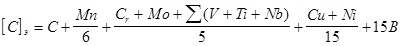
для малоуглеродистой стали или низколегированной стали только с кремнемарганцевой системой легирования, например, марок 17ГС, 17Г1С, 09Г2С и др.
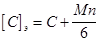
где С, Мn, Сr, Мо, V, Ti, Nb, Сu, Ni, В - содержание (процент от массы) в составе металла трубной стали соответственно углерода, марганца, хрома, молибдена, ванадия, титана, ниобия, меди, никеля, бора. Величина [С]э, не должна превышать 0,46.
11.13. Трубы, предусматриваемые для систем газоснабжения, должны быть испытаны гидравлическим давлением на заводе-изготовителе или иметь запись в сертификате о гарантии того, что трубы выдержат гидравлическое давление, величина которого соответствует требованиям стандартов или технических условий на трубы.
11.14. Импульсные газопроводы для присоединения контрольно-измерительных приборов и приборов автоматики обвязки газифицируемого оборудования следует предусматривать, как правило, из стальных труб, приведенных в обязательном приложении 7 или согласно данным, приведенным в паспортах на оборудование. Допускается применение для этих целей медных труб по ГОСТ 617-90, а также резинотканевых и резиновых рукавов и трубок согласно указаниям разд. 6.
СОЕДИНИТЕЛЬНЫЕ ЧАСТИ И ДЕТАЛИ
11.15. Соединительные части и детали для систем газоснабжения следует предусматривать из спокойной стали (литые, кованые, штампованные, гнутые или сварные) или из ковкого чугуна, изготовленными в соответствии с государственными и отраслевыми стандартами, приведенными в табл. 28.
Допускается применять соединительные части и детали, изготовленные по чертежам, выполненным проектными организациями с учетом технических требований одного из стандартов на соответствующую соединительную часть или деталь.
Таблица 28
|
Стандарт |
|
|
1. Из ковкого чугуна с цилиндрической резьбой |
|
|
Угольники |
|
|
Тройники |
|
|
Кресты |
|
|
Муфты |
|
|
Гайки соединительные |
|
|
Пробки |
|
|
2. Стальные с цилиндрической резьбой |
|
|
Муфты |
|
|
Контргайки |
|
|
Сгоны |
|
|
3. Стальные приварные |
|
|
Отводы |
ОСТ 36-42-81 ОСТ 36-43-81 ОСТ 36-21-77 ОСТ 36-20-77 ОСТ 34-42-750-85 ОСТ 34-42-752-85 ОСТ 108-030-129-79 |
|
Переходы |
ОСТ 36-44-81 ОСТ 36-22-77 ОСТ 34-42-753-85 ОСТ 34-42-754-85 |
|
Тройники |
ОСТ 36-23-77, ОСТ 36-24-77, ОСТ 36-45-81, ОСТ 36-46-81, ОСТ 34-42-762-85, ОСТ 34-42-754-85 |
|
Заглушки |
ОСТ 36-25-77, ОСТ 36-47-81, ОСТ 36-48-81 ОСТ 34-42-758-85 ОСТ 34-42-759-85 |
Примечание. Для строительства газопроводов допускается применение соединительных частей и деталей по ОСТ 102-54-81 - ОСТ 102-62-81 и по ОСТ 102-39-85 - ОСТ 102-45-85.
Соединительные части и детали систем газоснабжения допускается изготовлять из стальных бесшовных и прямошовных сварных труб или листового проката, металл которых отвечает техническим требованиям, предусмотренным пп. 11.5*-11.12 для соответствующего газопровода.
11.16. Соединительные части и детали должны быть заводского изготовления. Допускается применение соединительных частей и деталей, изготовленных на базах строительных организаций, при условии контроля всех сварных соединений (для сварных деталей) неразрушающими методами.
11.17. Фланцы, применяемые для присоединения к газопроводам арматуры, оборудования и приборов, должны соответствовать ГОСТ 12820-80 и ГОСТ 12821-80.
11.18. Для уплотнения фланцевых соединений следует применять прокладки, изготовленные из материалов, указанных в табл. 29.
Допускается предусматривать прокладки из другого уплотнительного материала, обеспечивающего не меньшую герметичность по сравнению с материалами, приведенными в табл. 29 (с учетом среды, давления и температуры).
ЗАЩИТНЫЕ ПРОТИВОКОРРОЗИОННЫЕ МАТЕРИАЛЫ
11.19. Материалы и конструкции, применяемые для защиты подземных газопроводов и резервуаров от коррозии, должны соответствовать требованиям ГОСТ 9.602-89.
11.20. Для анодных заземлений катодных установок следует применять железокремневые, графитовые, графитопластовые и другие малорастворимые материалы, а также чугунные трубы без антикоррозионного покрытия.
11.21. Для защиты от атмосферной коррозии надземных газопроводов и надземных резервуаров СУГ следует применять лакокрасочные покрытия (краски, лаки, эмали), выдерживающие изменение температуры наружного воздуха и влияние атмосферных осадков.
11.22. Прокладки и подкладки для изоляции газопроводов от металлических и железобетонных конструкций следует изготавливать из полиэтилена ГОСТ 16338-85Е или других материалов, равноценных ему по диэлектрическим свойствам.
ТРУБЫ И ДЕТАЛИ СОЕДИНИТЕЛЬНЫЕ ИЗ ПОЛИЭТИЛЕНА
11.23* Для подземных газопроводов следует применять трубы из полиэтилена низкого - давления с маркировкой «ГАЗ», изготовленные в соответствии с ТУ 6-19-352-87, а также трубы, специально предназначенные для газопроводов из полиэтилена средней плотности, изготовленные по стандартам или техническим условиям, утвержденным в установленном порядке.
11.24. В зависимости от рабочего давления газа в газопроводе следует предусматривать:
для газопроводов низкого и среднего давления трубы типа С (средний);
для газопроводов высокого давления II категории - трубы типа Т (тяжелый).
Таблица 29
|
Прокладочные листовые материалы для фланцевых соединений (стандарт, марка) |
Толщина листа, мм |
Назначение |
|
1. Паронит ГОСТ 481-80 (марка ПМБ) |
1-4 |
Для уплотнения соединений на газопроводах давлением до 1,6 МПа (16 кгс/см2) включ. |
|
2. Резина маслобензостойкая ГОСТ 7338-90 |
3-5 |
Для уплотнения соединений на газопроводах давлением до 0,6 МПа (6 кгс/см2) включ. |
|
3. Алюминий ГОСТ 21631-76 или ГОСТ 13726-78 |
1-4 |
Для уплотнения соединений на газопроводах всех давлений, в том числе транспортирующих сернистый газ |
|
4. Медь ГОСТ 495-92 (марка M1, М2) |
1-4 |
Для уплотнения соединений на газопроводах всех давлений, кроме газопроводов, транспортирующих сернистый газ |
|
Примечание. Прокладки из паронита должны соответствовать требованиям ГОСТ 15180-86. |
||
11.25.* Детали соединительные (втулки под фланцы, переходы, отводы, тройники и др.) для полиэтиленовых газопроводов должны предусматриваться по ТУ 6-19-359-87 и соответствовать типу труб С или Т.
11.26. Разъемные соединения полиэтиленовых труб со стальными трубами, компенсаторами и запорной арматурой следует предусматривать на втулках под фланец. При отсутствии втулок под фланцы допускается выполнять разъемные соединения полиэтилен - сталь по чертежам, разработанным проектной организацией.
ЗАПОРНОЕ И РЕГУЛИРУЮЩЕЕ ОБОРУДОВАНИЕ, ПРИБОРЫ И ДРУГИЕ ТЕХНИЧЕСКИЕ ИЗДЕЛИЯ
11.27. При выборе запорной арматуры следует учитывать условия ее эксплуатации по давлению газа и температуре согласно данным, приведенным в табл. 30*
Таблица 30*
|
Условия применения |
||
|
Давление газа, МПа 1 кгс/см2) не более |
Температура,° С |
|
|
Серый чугун |
0,6 (6) |
He ниже минус 35 |
|
Ковкий чугун |
1,6 (16) |
То же |
|
Углеродистая сталь |
То же |
He ниже минус 40 |
|
Легированная сталь |
« |
Ниже минус 40 |
|
Латунь, бронза |
« |
То же |
11.28. При выборе запорной арматуры для резервуаров СУГ следует принимать следующие условные давления, МПа (кгс/см2):
для надземных 1,6 (16)
« подземных 1,0 (10)
В системах газоснабжения СУГ запорная арматура из серого чугуна допускается к применению только на газопроводах паровой фазы низкого давления.
11.29. Вентили, краны, задвижки и затворы поворотные, предусматриваемые для систем газоснабжения в качестве запорной арматуры (отключающих устройств), должны быть предназначены для газовой среды. Герметичность затворов должна соответствовать I классу по ГОСТ 9544-75.
Допускается применять для систем газоснабжения запорную арматуру общего назначения при условии выполнения дополнительных работ по притирке и испытанию затвора арматуры на герметичность I класса в соответствии с ГОСТ 9544-75.
Электрооборудование приводов и других элементов трубопроводной арматуры по требованиям взрывобезопасности следует принимать в соответствии с указаниями ПУЭ.
На газопроводах низкого давления в качестве запорных устройств допускается применять гидрозатворы.
Краны и поворотные затворы должны иметь ограничители поворота и указатели положения «открыто - закрыто», а задвижки с невыдвижным шпинделем - указатели степени открытия.
11.30. Основные параметры регуляторов давления газа, применяемых в системах газоснабжения, должны соответствовать данным, приведенным в табл. 31.
11.31. Конструкция регуляторов давления газа должна соответствовать ГОСТ 11881-76Е (СТ СЭВ 3048-81) и удовлетворять следующим требованиям:
зона пропорциональности не должна превышать ± 20 % верхнего предела настройки выходного давления для комбинированных регуляторов и регуляторов баллонных установок и ±10 % для всех других регуляторов;
зона нечувствительности не должна быть более 2,5 % верхнего предела настройки выходного давления;
постоянная времени (время переходного процесса регулирования при резких изменениях расхода газа или входного давления) не должна превышать 60 с.
11.32. Относительная нерегулируемая протечка газа через закрытые клапаны двухседельных регуляторов допускается не более 0,1 % номинального расхода; для односедельного клапана герметичность затворов должна соответствовать I классу по ГОСТ 9544-75.
Таблица 31
|
Значение параметра |
|
|
Проход условный, мм |
По СТ СЭВ 254-76 |
|
Давление, МПа (кгс/см2): |
|
|
на входе (рабочее) |
0,05 (0,5); 0,3 (3); 0,6(6); 1,2(12); 1,6 (16) |
|
на выходе |
От 0,001 (0,01) до 1,2 (12) |
Допустимая нерегулируемая протечка газа при применении в качестве регулирующих устройств поворотных заслонок не должна превышать 1 % пропускной способности.
11.33. Основные параметры ПЗК, применяемых в ГРП (ГРУ) для прекращения подачи газа к потребителям при недопустимом повышении и понижении контролируемого давления газа, приведены в табл. 32.
Таблица 32
|
Значение параметра |
|
|
Проход условный, мм |
По СТ СЭВ 254-76 |
|
Давление на входе (рабочее), МПа (кгс/см2) |
0,05 (0,5); 0,3 (3); 0,6 (6); 1,2 (12); 1,6 (16) |
|
Диапазон срабатывания при повышении давления, МПа (кгс/см2) |
0,002 (0,02) … 0,75 (7,5) |
|
Диапазон срабатывания при понижении давления; МПа (кгс/см2) |
0,0003 (0,003) … 0,03 (0,3) |
Точность срабатывания ПЗК должна составлять ± 5 % заданных величин контролируемого давления для ПЗК, устанавливаемых в ГРП, и ± 10 % для ПЗК в шкафных ГРП, ГРУ и комбинированных регуляторах.
11.34. Основные параметры ПСК, устанавливаемых в ГРП (ГРУ) и на резервуарах СУГ, приведены в табл. 33.
11.35. ПСК должны обеспечивать открытие при превышении установленного максимального рабочего давления не более чем на 15 %.
Давление, при котором происходит полное закрытие клапана, устанавливается соответствующим стандартом или техническими условиями на изготовление клапанов, утвержденными в установленном порядке.
Пружинные ПСК должны быть снабжены устройством для их принудительного открытия.
На газопроводах низкого давления допускается установка ПСК без приспособления для принудительного открытия.
11.36. Основные параметры фильтров, устанавливаемых в ГРП (ГРУ) для защиты регулирующих и предохранительных устройств от засорения механическими примесями, должны соответствовать данным, приведенным в табл. 34.
11.37*. Фильтры должны иметь штуцера для присоединения к ним дифманометров или другие устройства для определения потери давления на фильтре (степени засоренности кассеты).
Таблица 33
|
Значение параметра |
|
|
Проход условный, мм |
По СТ СЭВ 254-76 |
|
Давление перед клапаном (рабочее), МПа (кгс/см2) |
0,001 (0,01); 0,3 (3); 0,6 (6); 1,0 (10); 2,0 (20) |
|
Диапазон срабатывания, МПа (кгс/см2) |
От 0,001 (0,01) до 2,0 (20) |
Таблица 34
|
Значение параметра |
|
|
Проход условный, мм |
По СТ СЭВ 254-76 |
|
Давление на входе (рабочее), МПа (кгс/см2) |
0,3 (3); 0,6 (6); 1,2(12) |
|
Максимально допустимое падение давления на кассете фильтра, даПа (кгс/м2): |
|
|
сетчатого |
500 (500) |
|
висцинового |
500 (500) |
|
волосяного |
1000 (1000) |
11.38. Фильтрующие материалы должны обеспечивать требуемую очистку газа, не образовывать с ним химических соединений и не разрушаться от постоянного воздействия газа.
11.39. Для изготовления гнутых и сварных компенсаторов следует использовать трубы, равноценные принятым для соответствующего газопровода (для газопроводов высокого и среднего давления следует учитывать указания п. 11.7*). Отводы, применяемые для изготовления сварных компенсаторов, следует принимать в соответствии с п. 11.15.
11.40. Применение сальниковых компенсаторов на газопроводах не допускается.
11.41. Изделия для закрепления газопроводов, прокладываемых через водные преграды, на заболоченных и обводненных участках, должны соответствовать требованиям СНиП 2.05.06-85.
11.42. Материалы и конструкции сосудов (резервуаров, испарителей, автомобильных и железнодорожных цистерн) для СУГ должны соответствовать требованиям «Правил устройства и безопасной эксплуатации сосудов, работающих под давлением», утвержденных Госгортехнадзором СССР, ГОСТ 14249-59, ОСТ 26-291-79, ГОСТ 9931-85, ГОСТ 6533-78, а также отраслевым стандартам или техническим условиям, утвержденным в установленном порядке.
11.43. Резервуары СУГ следует изготавливать из стали с гарантированной величиной ударной вязкости не менее 30 Дж/см2 (3 кгс м/см2):
для районов с расчетной температурой до минус 40 °С включ. - при температуре минус 40 °С;
для районов с холодным климатом, указанных в п. 11.57 - при температуре минус 60 °С,
11.44. Бытовые газовые плиты должны отвечать требованиям ГОСТ 10798-85 или техническим условиям на эти приборы, утвержденным в установленном порядке.
11.45. Плиты с отводом продуктов сгорания в дымоход должны иметь автоматику, обеспечивающую прекращение подачи газа к плите при отсутствии необходимого разрежения в дымоходе.
11.46. Газовое оборудование для предприятий торговли, общественного питания и других аналогичных потребителей следует оснащать приборами автоматики безопасности, обеспечивающими отключение основных (рабочих) горелок в случае прекращения подачи газа, погасания пламени и прекращения подачи воздуха (для оборудования, оснащенного горелками с принудительной подачей воздуха).
Для горелки или группы горелок, объединенных в блок, имеющих номинальную тепловую мощность менее 5,6 кВт (расход газа менее 0,5 м3/ч) установка автоматики безопасности не обязательна.
Необходимость оснащения газовых аппаратов автоматикой для отключения подачи газа при нарушении других параметров и обеспечение автоматического регулирования процессов горения решается разработчиком оборудования в зависимости от технологии и режимов работы аппаратов.
11.47. Для нагрева воды в бытовых условиях следует применять газовые проточные и емкостные водонагреватели, соответствующие требованиям ГОСТ 11032-80, ГОСТ 19910-74 или технических условий, утвержденных в установленном порядке.
11.48. Газовые воздушные калориферы и конвекторы, применяемые для отопления зданий, а также помещений цехов промышленных предприятий следует комплектовать автоматикой регулирования и безопасности, обеспечивающей:
поддержание в отапливаемом помещении заданной температуры или подогрев воздуха до заданной температуры;
отключение подачи газа к горелкам при недопустимом изменении давления газа, уменьшении разрежения в дымоходе ниже установленной величины, остановке дутьевого вентилятора, подающего воздух через калорифер в помещение, или при погасании пламени.
11.49.* Горелки газовые, предназначенные для тепловых установок промышленных, сельскохозяйственных предприятий, предприятий бытового обслуживания производственного характера, в том числе установок, переводимых на газ с других видов топлива, должны быть изготовлены организацией по технической документации, утвержденной в установленном порядке.
Промышленные газовые горелки должны соответствовать требованиям ГОСТ 21204-83.
Горелки инфракрасного излучения (ГНИ) должны соответствовать требованиям ГОСТ 25696-83.
11.50. Выбор КИП надлежит производить в соответствии со следующими основными положениями:
параметры, наблюдение за которыми необходимо для правильного ведения установленных режимов эксплуатации, должны контролироваться при помощи показывающих приборов;
параметры, изменение которых может привести к аварийному состоянию оборудования, должны контролироваться при помощи регистрирующих и показывающих приборов; допускается не предусматривать регистрирующие приборы при наличии защиты - предохранительных устройств по контролируемым параметрам;
параметры, учет которых необходим для систематического анализа работы оборудования или хозяйственных расчетов, должны контролироваться при помощи регистрирующих или интегрирующих приборов.
11.51. При выборе КИП для ГРП и ГРУ следует руководствоваться указаниями разд. 5.
11.52. Класс точности КИП следует принимать в зависимости от конкретного их назначения и особенностей условий эксплуатации объекта, но не ниже класса 2,5.
ДОПОЛНИТЕЛЬНЫЕ ТРЕБОВАНИЯ ДЛЯ ОСОБЫХ ПРИРОДНЫХ И КЛИМАТИЧЕСКИХ УСЛОВИЙ
11.54. Для подземных газопроводов с условным диаметром больше 80 мм, проектируемых для районов со среднепучинистыми и сильнопучинистыми грунтами и подрабатываемых территорий, следует предусматривать стальную арматуру; для газопроводов с условным диаметром до 80 мм включ. допускается применение запорной арматуры из ковкого чугуна.
Для подземных газопроводов давлением до 0,6 МПа (6 кгс/см2), проектируемых для районов со среднепучинистыми грунтами, допускается применять чугунную запорную арматуру, при этом арматуру из серого чугуна следует устанавливать с компенсирующим устройством, допускающим вертикальное перемещение газопровода.
На подземных газопроводах, прокладываемых в районах с сейсмичностью 8 и 9 баллов, следует применять стальную запорную арматуру.
11.55. Для подземных газопроводов, прокладываемых на подрабатываемых территориях и в районах с сейсмичностью 7 баллов и более, толщину стенок труб следует принимать не менее 3 мм для труб диаметром до 80 мм включ., а для труб диаметром 100 мм и более - на 2 - 3 мм больше расчетной толщины, определенной в соответствии с п. 11.5.
11.56. Для внутренних и надземных газопроводов, прокладываемых в районах с пучинистыми и просадочными грунтами, в сейсмических районах и на подрабатываемых территориях, требования к трубам и техническим изделиям предъявляются такие же, как для соответствующих газопроводов, сооружаемых в обычных условиях строительства.
11.57. Технические изделия, кроме труб, предназначенные для строительства систем газоснабжения в районах с холодным климатом, следует применять в исполнении ХЛ соответствующей категории в зависимости от места установки по ГОСТ 15150-69.
Границы районов с холодным климатом следует определять согласно ГОСТ 16350-80 (район I1 и I2).
Трубы для этих районов следует предусматривать в соответствии с обязательным приложением 7.
11.58. В районах с холодным климатом допускается применение технических изделий в исполнении У по ГОСТ 15150-69, в том числе труб по табл. 1 обязательного приложения 7, если они будут эксплуатироваться в отапливаемых помещениях или под землей (при температуре не ниже минус 40 °С), а при транспортировании, хранении и монтаже будет обеспечена полная сохранность и работоспособность в соответствии с технической документацией на их изготовление.
12. ТЕЛЕМЕХАНИЗАЦИЯ И АВТОМАТИЗИРОВАННЫЕ СИСТЕМЫ УПРАВЛЕНИЯ ТЕХНОЛОГИЧЕСКИМИ ПРОЦЕССАМИ В СИСТЕМАХ ГАЗОСНАБЖЕНИЯ
12.1. Для обеспечения централизованного оперативного управления системами газоснабжения следует предусматривать в проектах газоснабжения телемеханизацию (ТМ) или автоматизированные системы управления технологическими процессами (АСУ ТП).
ТМ следует предусматривать при проектировании газоснабжения городов с населением свыше 100 тыс. чел. или при расширении, реконструкции и техническом перевооружении действующих систем газоснабжения с числом объектов, подлежащих контролю, более 15.
АСУ ТП следует предусматривать при проектировании газоснабжения городов с населением, как правило, свыше 500 тыс. чел. и при расширении, реконструкции и техническом перевооружении систем газоснабжения - с числом объектов, подлежащих контролю, более 50.
12.2. Проектные решения должны предусматривать возможность дальнейшей модернизации и развития ТМ и АСУ ТП.
12.3. Внедрение ТМ и АСУ ТП допускается осуществлять по очередям. Выделение очередей проводится по количеству контролируемых объектов к уровню решаемых задач. Первая очередь внедрения АСУ ТП допускает ее функционирование в режиме централизованного контроля при ограниченном числе контролируемых объектов.
12.4. Структуру, функции и технические средства ТМ и АСУ ТП допускается принимать в соответствии с рекомендуемым приложением 11.
ПРИЛОЖЕНИЕ 1
Справочное
КЛАССИФИКАЦИЯ ГАЗОПРОВОДОВ, ВХОДЯЩИХ В СИСТЕМУ ГАЗОСНАБЖЕНИЯ
|
Газопроводы |
Классификационные показатели |
|
Наружные (уличные, внутриквартальные, дворовые, межцеховые) и внутренние (расположенные внутри зданий и помещений) |
Местоположение относительно планировки поселений |
|
Подземные (подводные), надземные (надводные), наземные |
Местоположение относительно поверхности земли |
|
Распределительные, газопроводы-вводы, вводные, продувочные, сбросные, импульсные, а также межпоселковые |
Назначение в системе газоснабжения |
|
Высокого давления I категории, высокого давления II категории, среднего давления, низкого давления |
Давление газа |
|
Металлические (стальные, медные и др.) и неметаллические (полиэтиленовые и др.) |
Материал труб |
|
Природного газа, попутного газа и СУГ |
Вид транспортируемого газа |
Распределительными газопроводами следует считать наружные газопроводы, обеспечивающие подачу газа от источников газоснабжения до газопроводов-вводов, а также газопроводы высокого и среднего давления, предназначенные для подачи газа к одному объекту (ГРП, промышленное предприятие, котельная и т. п.).
Газопроводом-вводом следует считать газопровод от места присоединения к распределительному газопроводу до отключающего устройства на вводе.
Вводным газопроводом следует считать участок газопровода от отключающего устройства на вводе в здание (при установке отключающего устройства снаружи здания) до внутреннего газопровода, включая газопровод, проложенный в футляре через стену здания.
Межпоселковыми газопроводами следует считать распределительные газопроводы, прокладываемые вне территории населенных пунктов.
Внутренним газопроводом следует считать участок газопровода от газопровода-ввода (при установке отключающего устройства внутри здания) или от вводного газопровода до места подключения прибора, теплового агрегата и др.
ПРИЛОЖЕНИЕ 2
Рекомендуемое
ЗНАЧЕНИЕ КОЭФФИЦИЕНТОВ ЧАСОВОГО МАКСИМУМА РАСХОДА ГАЗА ПО ОТРАСЛЯМ ПРОМЫШЛЕННОСТИ
|
Отрасль промышленности |
Коэффициент часового максимума расхода газа, Кhmax |
||
|
в целом по предприятию |
по котельным |
по промышленным печам |
|
|
Черная металлургия |
1/6100 |
1/5200 |
1/7500 |
|
Судостроительная |
1/3200 |
1/3100 |
1/3400 |
|
Резиноасбестовая |
1 /5200 |
1/5200 |
- |
|
Химическая |
1/5900 |
1/5600 |
1/7300 |
|
Строительных материалов |
1/5900 |
1/5500 |
1/6200 |
|
Радиопромышленность |
1/3600 |
1/3300 |
1/5500 |
|
Электротехническая |
1/3800 |
1/3600 |
1/5500 |
|
Цветная металлургия |
1/3800 |
1/3100 |
1/5400 |
|
Станкостроительная и инструментальная |
1/2700 |
1/2900 |
1/2600 |
|
Машиностроение |
1/2700 |
1/2600 |
1/3200 |
|
Текстильная |
1/4500 |
1/4500 |
- |
|
Целлюлозно-бумажная |
1/6100 |
1/6100 |
- |
|
Деревообрабатывающая |
1/5400 |
1/5400 |
- |
|
Пищевая |
1/5700 |
1/5900 |
1/4500 |
|
Пивоваренная |
1/5400 |
1/5200 |
1/6900 |
|
Винодельческая |
1/5700 |
1/5700 |
- |
|
Обувная |
1/3500 |
1/3500 |
- |
|
Фарфоро-фаянсовая |
1/5200 |
1/3900 |
1/6500 |
|
Кожевенно-галантерейная |
1/4800 |
1/4800 |
- |
|
Полиграфическая |
1/4000 |
1/3900 |
1/4200 |
|
Швейная |
1/4900 |
1/4900 |
- |
|
Мукомольно-крупяная |
1/3500 |
1/3600 |
1/3200 |
|
Табачно-махорочная |
1/3800 |
1/3500 |
- |
ПРИЛОЖЕНИЕ 3*
Справочное
ЗНАЧЕНИЕ КОЭФФИЦИЕНТА ОДНОВРЕМЕННОСТИ Кsim ДЛЯ ЖИЛЫХ ДОМОВ
|
Число квартир |
Коэффициенты одновременности Кsim в зависимости от установки в жилых домах газового оборудования |
|||
|
Плита 4 - конфорочная |
Плита 2 - конфорочная |
Плита 4 - конфорочная и тяговый проточный водонагреватель |
Плита 2 - конфорочная и газовый проточный водонагреватель |
|
|
1 |
1 |
1 |
0,700 |
0,750 |
|
2 |
0,650 |
0,840 |
0,560 |
0,640 |
|
3 |
0,450 |
0,730 |
0,480 |
0,520 |
|
4 |
0,350 |
0,590 |
0,430 |
0,390 |
|
5 |
0,290 |
0,480 |
0,400 |
0,375 |
|
6 |
0,280 |
0,410 |
0,392 |
0,360 |
|
7 |
0,280 |
0,360 |
0,370 |
0,345 |
|
8 |
0,265 |
0,320 |
0,360 |
0,335 |
|
9 |
0,258 |
0,289 |
0,345 |
0,320 |
|
10 |
0,254 |
0,263 |
0,340 |
0,315 |
|
15 |
0,240 |
0,242 |
0,300 |
0,275 |
|
20 |
0,235 |
0,230 |
0,280 |
0,260 |
|
30 |
0,231 |
0,218 |
0,250 |
0,235 |
|
40 |
0,227 |
0,213 |
0,230 |
0,205 |
|
50 |
0,223 |
0,210 |
0,215 |
0,193 |
|
60 |
0,220 |
0,207 |
0,203 |
0,186 |
|
70 |
0,217 |
0,205 |
0,195 |
0,180 |
|
80 |
0,214 |
0,204 |
0,192 |
0,175 |
|
90 |
0,212 |
0,203 |
0,187 |
0,171 |
|
100 |
0,210 |
0,202 |
0,185 |
0,163 |
|
400 |
0,180 |
0,170 |
0,150 |
0,135 |
Примечания: 1. Для квартир, в которых устанавливается несколько однотипных газовых приборов, коэффициент одновременности следует принимать как для такого же числа квартир с этими газовыми приборами.
2. Значение коэффициента одновременности для емкостных водонагревателей, отопительных котлов или отопительных печей рекомендуется принимать равным 0,85 независимо от количества квартир.
ПРИЛОЖЕНИЕ 4
Отменяется
ПРИЛОЖЕНИЕ 5
Справочное
ГИДРАВЛИЧЕСКИЙ РАСЧЕТ ГАЗОПРОВОДОВ
1. Гидравлический расчет газопроводов следует выполнять, как правило, на электронно-вычислительной машине с оптимальным распределением расчетной потери давления между участками сети.
При невозможности или нецелесообразности выполнения расчета на электронно-вычислительной машине (отсутствие соответствующей программы, отдельные участки газопроводов и т. п.) гидравлический расчет допускается производить по приведенным в данном приложении формулам или по номограммам, составленным по этим формулам.
2. Расчетные потери давления в газопроводах высокого и среднего давления следует принимать в пределах давления, принятого для газопровода.
3. Расчетные потери давления газа в распределительных газопроводах низкого давления следует принимать не более 180 даПа.
Распределение величины потери давления между уличными, дворовыми и внутренними газопроводами следует принимать по таблице.
|
Суммарная потеря давления газа от ГРП или другого регулирующего устройства до наиболее удаленного прибора, даПа (мм. вод. ст.) |
В том числе в газопроводах |
|
|
уличных и внутри квартальных |
дворовых и внутренних |
|
|
180 |
120 |
60 |
В тех случаях, когда газоснабжение СУГ является временным (с последующим переводом на снабжение природным газом), газопроводы следует проектировать из условий возможности их использования в будущем на природном газе. При этом количество газа необходимо определять как эквивалентное (по теплоте сгорания) расчетному расходу СУГ.
4. Значения расчетной потери давления газа при проектировании газопроводов всех давлений для промышленных, сельскохозяйственных и бытовых предприятий и учреждений коммунального хозяйства принимаются в зависимости от давления газа в месте подключения с учетом технических характеристик принимаемых к установке газовых горелок, устройств автоматики безопасности и автоматики регулирования технологического режима тепловых агрегатов.
5. Падение давления в газопроводах низкого давления следует определять в зависимости от режима движения газа по газопроводу, характеризуемого числом Рейнольдса:
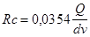
где Q - расход газа, м3/ч, при температуре 0 °С и давлении 0,10132 МПа (760 мм. рт. ст.);
d - внутренний диаметр газопровода, см;
v - коэффициент кинематической вязкости газа, м2/с (при температуре 0 °С и давлении 0,10132 МПа).
В зависимости от значения Rе падение давления в газопроводах определяется по следующим формулам:
для ламинарного режима движения газа при Re £ 2000
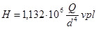
для критического режима движения газа при Rе = 2000 - 4000
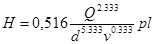
для турбулентного режима движения газа при Re > 4000
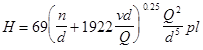
где H - падение давления, Па;
р - плотность газа, кг/м3, при температуре 0 °С и давлении 0,10132 МПа;
l - расчетная длина газопровода постоянного диаметра, м;
п - эквивалентная абсолютная шероховатость внутренней поверхности стенки трубы принимается равной, см: для стальных труб - 0,01; для полиэтиленовых труб - 0,002;
Q, d, v - обозначения те же, что и в формуле (1).
6. Расчетный расход газа на участках распределительных наружных газопроводов низкого давления, имеющих путевые расходы газа, следует определять как сумму транзитного и 0,5 путевого расходов газа на данном участке.
7. Гидравлический расчет газопроводов среднего и высокого давления по всей области турбулентного режима движения газа следует производить по формуле
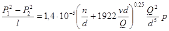
где Р1 - абсолютное значение газа в начале газопровода, МПа;
Р2 - то же в конце газопровода, МПа;
l, n, d, v, p, Q - обозначения те же, что и в формуле (4).
8. Падение давления в местных сопротивлениях (колена, тройники, запорная арматура и др.) допускается учитывать путем увеличения расчетной длины газопроводов на 5 - 10 %.
9. Для наружных надземных и внутренних газопроводов расчетную длину газопроводов следует определять по формуле
где l1 - действительная длина газопровода, м;
- сумма коэффициентов местных сопротивлений участка газопровода длиной l1;
ld
- эквивалентная длина прямолинейного участка газопровода, м, потери давления на
котором равны потерям давления в местном сопротивлении со значением
коэффициента  =
1.
=
1.
Эквивалентную длину газопровода следует определять в зависимости от режима движения газа в газопроводе по следующим формулам:
для ламинарного режима движения газа
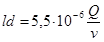
для критического режима движения газа
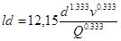
для всей области турбулентного режима движения газа
10. Падение давления в трубопроводах жидкой фазы СУГ следует определять по формуле
где  - коэффициент
гидравлического сопротивления;
- коэффициент
гидравлического сопротивления;
V - средняя скорость движения сжиженных газов, м/с.
С учетом противокавитационного запаса средние скорости движения жидкой фазы следует принимать: во всасывающих трубопроводах - не более 1,2 м/с; в напорных трубопроводах - не более 3 м/с.
Коэффициент гидравлического сопротивления следует определять по формуле
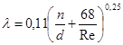
Обозначения в формулах (7) - (11) те же, что и в формулах (1) - (4), (6).
11. Гидравлический расчет газопроводов паровой фазы СУГ должен выполняться в соответствии с указаниями по расчету газопроводов природного газа соответствующего давления.
12. При расчете внутренних газопроводов низкого давления для жилых домов допускается определять потери давления газа на местные сопротивления в размере, %:
на газопроводах от вводов в здание:
до стояка - 25 линейных потерь
на стояках - 20 то же
на внутриквартирной разводке:
при длине разводки 1-2 м - 450 «
« « « 3-4 « - 300 «
« « « 5-7 « - 120 «
« « « 8-12 « - 50 «
13. При расчете газопроводов низкого давления следует учитывать гидростатический напор Нg, Па, определяемый по формуле
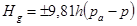
где 9,81 - g (ускорение свободного падения), м/с2;
h - разность абсолютных отметок начальных и конечных участков газопровода, м;
ра - плотность воздуха, кг/м3, при температуре 0 °С и давлении 0,10132 МПа;
р - обозначение то же, что в формуле (4).
14. Гидравлический расчет кольцевых сетей газопроводов следует выполнять с увязкой давлений газа в узловых точках расчетных колец при максимальном использовании допустимой потери давления газа. Неувязка потерь давления в кольце допускается до 10 %.
15. При выполнении гидравлического расчета надземных и внутренних газопроводов с учетом степени шума, создаваемого движением газа, следует принимать скорости движения газа не более 7 м/с для газопроводов низкого давления, 15 м/с для газопроводов среднего давления, 25 м/с для газопроводов высокого давления.
16. При выполнении гидравлического расчета газопроводов по формулам (1)-(2), приведенным в настоящем приложении, а также по различным методикам и программам для электронно-вычислительных машин, составленным на основе этих формул, диаметр газопровода следует предварительно определять по формуле
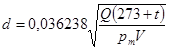
где d - диаметр газопровода, см;
Q - расход газа, м3/ч, при температуре 0 °С и давлении 0,10132 МПа (760 мм. рт. ст.);
t - температура газа, °С;
Pт - среднее давление газа (абсолютное) на расчетном участке газопровода, МПа;
V - скорость газа, м/с.
17. Полученное значение диаметра газопровода следует принимать в качестве исходной величины при выполнении гидравлического расчета газопроводов.
ПРИЛОЖЕНИЕ 6
Справочное
ОТВОД ПРОДУКТОВ СГОРАНИЯ
1. Отвод продуктов сгорания от бытовых газовых приборов, печей и другого бытового газового оборудования, в конструкции которых предусмотрен отвод продуктов сгорания в дымоход, следует предусматривать от каждого прибора, агрегата или печи по обособленному дымоходу.
В существующих зданиях допускается предусматривать присоединение к одному дымоходу не более двух водонагревателей или отопительных печей, расположенных на одном или разных этажах здания, при условии ввода продуктов сгорания в дымоход на разных уровнях, не ближе 0,75 м один от другого, или на одном уровне с устройством в дымоходе рассечки на высоту не менее 0,75 м.
2. В существующих зданиях при отсутствии дымоходов допускается предусматривать устройство приставных дымоходов.
3. Допускается присоединение к дымоходу отопительной печи периодического действия газового водонагревателя, используемого для горячего водоснабжения, или другого газового прибора, не работающего непрерывно, при условии разновременной работы и достаточного сечения дымохода для удаления продуктов сгорания от присоединяемого прибора.
Присоединение дымоотводящей трубы газового прибора к оборотам дымохода отопительной печи не допускается.
4. Площадь сечения дымохода не должна быть меньше площади патрубка газового прибора, присоединяемого к дымоходу. При присоединении к дымоходу двух приборов, печей и т. п. сечение дымохода следует определять с учетом одновременной их работы. Конструктивные размеры дымоходов должны определяться расчетом.
5. Небытовые газовые приборы (ресторанные плиты, пищеварочные котлы и т.п.) допускается присоединять как к обособленным, так и общему дымоходу.
Допускается предусматривать соединительные дымоотводящие трубы, общие для нескольких агрегатов.
Ввод продуктов сгорания в общий дымоход для нескольких приборов следует предусматривать на разных уровнях или на одном уровне с устройством рассечек согласно п. 1.
Сечения дымоходов и соединительных труб должны определяться расчетом исходя из условия одновременной работы всех приборов, присоединенных к дымоходу.
6.* Дымоходы должны быть вертикальными, без уступов. Допускается уклон дымоходов от вертикали до 30° с отклонением в сторону до 1 м при обеспечении площади сечения наклонных участков дымохода не менее сечения вертикальных участков.
7. Для отвода продуктов сгорания от ресторанных плит и других небытовых газовых приборов допускается предусматривать горизонтальные участки дымоходов общей длиной не более 10 м.
Допускается предусматривать дымоходы в перекрытии с устройством противопожарной разделки для горючих конструкций перекрытия.
8. Присоединение газовых водонагревателей и других газовых приборов к дымоходам следует предусматривать трубами, изготовленными из кровельной стали.
Суммарную длину участков соединительной трубы в новых зданиях следует принимать не более 3 м, в существующих зданиях - не более 6 м.
Уклон трубы следует назначать не менее 0,01 в сторону газового прибора.
На дымоотводящих трубах допускается предусматривать не более трех поворотов с радиусом закругления не менее диаметра трубы.
Ниже места присоединений дымоотводящей трубы от прибора к дымоходам должно быть предусмотрено устройство «кармана» с люком для чистки.
Дымоотводящие трубы, прокладываемые через неотапливаемые помещения, при необходимости должны быть покрыты теплоизоляцией.
9. Расстояние от соединительной дымоотводящей трубы до потолка или стены из негорючих материалов следует принимать не менее 5 см, до деревянных оштукатуренных потолков и стен - не менее 25 см. Допускается уменьшение указанного расстояния с 25 до 10 см при условии обивки деревянных оштукатуренных стен или потолка кровельной сталью по листу асбеста толщиной 3 мм. Обивка должна выступать за габариты дымоотводящей трубы на 15 см с каждой стороны.
10. При присоединении к дымоходу одного прибора, а также приборов со стабилизаторами тяги шиберы на дымоотводящих трубах не предусматриваются.
При присоединении к общему дымоходу нескольких приборов: ресторанных плит, кипятильников и других газовых приборов, не имеющих стабилизаторов тяги, на дымоотводящих трубах от приборов должны предусматриваться шиберы (заслонки), имеющие отверстие диаметром не менее 15 мм.
11. В шиберах, установленных на дымоходах от котлов, должны предусматриваться отверстия диаметром не менее 50 мм.
12. Дымовые трубы от газовых приборов в зданиях должны быть выведены:
выше границы зоны ветрового подпора, но не менее 0,5 м выше конька крыши при расположении их (считая по горизонтали) не далее 1,5 м от конька крыши;
в уровень с коньком крыши, если они отстоят на расстоянии до 3 м от конька крыши;
не ниже прямой, проведенной от конька вниз под углом 10° к горизонту, при расположении труб на расстоянии более 3 м от конька крыши.
Во всех случаях высота трубы над прилегающей частью крыши должна быть не менее 0,5 м, а для домов с совмещенной кровлей (плоской крышей) - не менее 2,0 м.
Установка на дымоходах зонтов и дефлекторов не допускается.
13.* Отвод продуктов сгорания от газифицированных установок промышленных предприятий, котельных, предприятий бытового обслуживания допускается предусматривать по стальным дымовым трубам.
ПРИЛОЖЕНИЕ 7*
Обязательное
ВЫБОР СТАЛЬНЫХ ТРУБ ДЛЯ СИСТЕМ ГАЗОСНАБЖЕНИЯ
1. Стальные трубы для систем газоснабжения давлением до 1,6 МПа (16 кгс/см2) в зависимости от расчетной температуры наружного воздуха района строительства и местоположения газопровода относительно поверхности земли следует принимать:
по табл. 1* - для наружных надземных газопроводов, прокладываемых в районах с расчетной температурой наружного воздуха не ниже минус 40 °С, а также подземных и внутренних газопроводов, которые не охлаждаются до температуры ниже минус 40 °С;
по табл. 2 - для надземных газопроводов, прокладываемых в районах с расчетной температурой наружного воздуха ниже минус 40 °С и подземных газопроводов, которые могут охлаждаться до температуры ниже минус 40 °С.
2. Для систем газоснабжения следует принимать трубы, изготовленные, как правило, из углеродистой стали обыкновенного качества по ГОСТ 380-88 и качественной стали по ГОСТ 1050-88.
3. Для газопроводов жидкой фазы СУГ следует применять, как правило, бесшовные трубы.
Допускается применять для этих газопроводов электросварные трубы. При этом трубы диаметром до 50 мм должны пройти 100 %-ный контроль сварного шва неразрушающими методами, а трубы диаметром 50 мм и более также и испытание сварного шва на растяжение.
Таблица 1*
Стальные трубы для строительства наружных надземных газопроводов, прокладываемых в районах с расчетной температурой наружного воздуха не ниже минус 40 °С, а также подземных и внутренних газопроводов, которые не охлаждаются до температуры ниже минус 40 °С
|
Марка стали, стандарт на сталь |
Наружный диаметр трубы (включ.), мм |
|
|
1. Электросварные прямошовные ГОСТ 10705-80 (группа В) «Технические условия» и ГОСТ 10704-91 «Сортамент» |
ВСт2сп, ВСт3сп не менее 2-й категории ГОСТ 380-88; 10, 15, 20 ГОСТ 1050-88 |
10-530 |
|
2. Электросварные ТУ 14-3-943-80 |
ВСт3сп не менее 2-й категории ГОСТ 380-88; 10 ГОСТ 1050-88 |
219-530 |
|
3. Электросварные для магистральных газонефтепроводов (прямошовные и спиральношовные) ГОСТ 20295-85 |
ВСт3сп не менее 2-й категории (К38) ГОСТ 380-88; 10 (К34), 15 (К38), 20 (К42) ГОСТ 1050-88 |
По ГОСТ 20295-74 |
|
4. Электросварные прямошовные ГОСТ 10706-76 (группа В) «Технические требования» и ГОСТ 10704-91 «Сортамент» |
ВСт2сп, ВСт3сп не менее 2-й категории ГОСТ 380-88 |
630-1220 |
|
5. Электросварные со спиральным швом ГОСТ 8696-74 (группа В) |
ВСт2сп, ВСт3сп не менее 2-й категории ГОСТ 380-88 |
159-1220 |
|
6. Бесшовные горячедеформированные ГОСТ 8731-87 (группа В и Г) «Технические требования» и ГОСТ 8732-78 «Сортамент» |
10, 20 ГОСТ 1050-88 |
45-325 |
|
7. Бесшовные холоднодеформированные, теплодеформированные ГОСТ 8733-87 (группа В и Г) «Технические требования» и ГОСТ 8734-75 «Сортамент» |
10, 20 ГОСТ 1050-88 |
10-45 |
|
8. Электросварные спиральношовные ТУ 14-3-808-78 |
ТУ 14-3-808-78 |
530-820; 1020; 1220 |
|
9. Бесшовные горячедеформированные по ТУ 14-3-190-82 (только для тепловых электростанций) |
10, 20 ГОСТ 1050-88 |
57-426 |
|
Примечания: 1. Трубы по пп. 6 и 7 следует применять, как правило, для газопроводов жидкой фазы СУГ. 2. Исключено. 3. Для тепловых электростанций трубы из стали 20 применять в районах с расчетной температурой до минус 30 °С |
||
4.* Трубы по ГОСТ 3262-75 допускается применять для строительства наружных и внутренних газопроводов низкого давления.
Трубы по ГОСТ 3262-75 с условным диаметром до 32 мм включ. допускается применять для строительства импульсных газопроводов давлением до 1,2 МПа (12 кгс/см2) включ. При этом гнутые участки импульсных газопроводов должны иметь радиус гиба не менее 2De а температура стенки трубы в период эксплуатации не должна быть ниже 0 °С.
5.* Трубы со спиральным швом по ТУ 102-39-84 с противокоррозионным покрытием по ТУ 102-176-85 допускается применять только для подземных межпоселковых газопроводов природного газа с давлением до 1,2 МПа (12 кгс/см2) в районах с расчетной температурой наружного воздуха до минус 40 °С включ.
При этом не применять данные трубы для выполнения упругого изгиба (поворота) газопровода в вертикальной и горизонтальной плоскостях радиусом менее 1500 диаметра трубы, а также для прокладки газопроводов в поселениях.
6. Возможность применения труб по государственным стандартам и техническим условиям, приведенным в табл. 1 и 2* настоящего приложения, но изготовленных из полуспокойной и кипящей стали, регламентируется пунктами 11.7, 11.8.
7. Трубы по ГОСТ 8731 - 87, изготовляемые из слитка, не применять без проведения 100 %-ного контроля неразрушающими методами металла труб.
При заказе труб по ГОСТ 8731-87 указывать, что трубы по этому стандарту, изготовляемые из слитка, не поставлять без 100 %-ного контроля неразрушающими методами.
Таблица 2*
Стальные трубы для строительства надземных газопроводов, прокладываемых в районах с расчетной температурой наружного воздуха ниже минус 40 °С, и подземных газопроводов, которые могут охлаждаться до температуры ниже минус 40 °С
|
Марка стали, стандарт на сталь |
Наружный диаметр трубы (включ.), мм |
|
|
1. Бесшовные холоднодеформированные и теплодеформированные ГОСТ 8733-87 (группа В и Г) «Технические требования» и ГОСТ 8734-75 «Сортамент» |
10, 20 ГОСТ 1050-88 |
10-103 |
|
2. Бесшовные горячедеформированные ГОСТ 8731-87 (Группа В и Г) «Технические требования» и ГОСТ «Сортамент» |
10, 20 ГОСТ 1050-88 09Г2С категория 6 10ГС ГОСТ 4543-71 |
45-108; 127-325 |
|
3. Бесшовные горячедеформированные ТУ 14-3-1128-82 |
09Г2С категории 6-8 ГОСТ 19281-89 |
57-426 |
|
4. Электросварные прямошовные ТУ 14-3-1138-82 |
17Г1С-У ТУ 14-3-1138-82 |
1020; 1220 |
|
5. Электросварные для магистральных газонефтепроводов (прямошовных и спиралевидные) ГОСТ 20295-85 |
17Г1С (К52), 17ГС (К52); 14ХГС (К50) категории 6-8 ГОСТ 19282-73 |
|
|
6. Электросварные прямошовные ГОСТ 10705-80 (группа В) «Технические условия» и ГОСТ 10704-91 «Сортамент» |
ВСт3сп не менее 2-й категории ГОСТ 380-88; 10, 15, 20 |
10-108 |
Примечания*. 1. Трубы по поз. 6 для газопроводов давлением свыше 0,6 МПа (6 кгс/см2) не применять.
2. Трубы, изготовляемые из стали 20, следует применять как исключение.
ПРИЛОЖЕНИЕ 8
Рекомендуемое
ОБЪЕМ ИЗМЕРЕНИЙ, СИГНАЛИЗАЦИИ И АВТОМАТИЧЕСКОГО РЕГУЛИРОВАНИЯ В СИСТЕМАХ ГАЗОСНАБЖЕНИЯ ТЕПЛОВЫХ ЭЛЕКТРОСТАНЦИЙ
|
Измеряемые параметры |
Форма и место представления информации |
Автоматическое регулирование |
||||||||
|
Щит управления в главном корпусе |
Местный щит управления в ГРП |
По месту |
||||||||
|
Показывающий прибор (обязательный) |
Показывающий прибор (при необходимости) |
Сигнализация |
Регистрирующий прибор |
Показывающий прибор (обязательный) |
Показывающий прибор (при необходимости) |
Сигнализация |
Регистрирующий прибор |
Показывающий прибор |
||
|
Давление газа до ГРП |
+ |
- |
+ (увеличение или уменьшение) |
- |
+ |
- |
- |
+ |
- |
- |
|
Давление газа после ГРП |
+ |
- |
+ (увеличение или уменьшение) |
- |
+ |
- |
- |
+ |
- |
+ |
|
Общий расход газа |
+ |
- |
- |
- |
+ |
- |
- |
+ |
- |
- |
|
Температура газа до или после расходомера |
- |
- |
- |
- |
+ |
- |
- |
+ |
- |
- |
|
Потеря давления газа на фильтрах |
- |
- |
- |
- |
+ |
+ |
+ |
+ |
+ |
- |
|
Загазованность в регуляторном зале и помещении щита управления в ГРП |
- |
- |
+ (увеличение) |
- |
+ |
- |
+ (увеличение) |
- |
- |
- |
|
Расход газа на каждый котел |
+ |
- |
- |
+ |
- |
- |
- |
- |
- |
+ |
|
Давление газа до регулирующего клапана котла |
- |
+ |
- |
+ |
- |
- |
- |
- |
- |
- |
|
Давление газа после регулирующего клапана котла |
- |
+ |
+ (увеличение или уменьшение) |
- |
- |
- |
- |
- |
- |
- |
|
Указатель положения регулирующей арматуры ГРП |
+ |
- |
- |
- |
+ |
- |
- |
- |
- |
- |
|
Давление газа перед каждой горелкой (после отключающего устройства) |
- |
- |
- |
- |
- |
- |
- |
- |
+ |
- |
_________
Знак «+» в таблице означает, что для этих параметров должно обеспечиваться информация.
ПРИЛОЖЕНИЕ 9
Рекомендуемое
ЧИСЛО КВАРТИР, КОТОРОЕ ЦЕЛЕСООБРАЗНО СНАБЖАТЬ ПАРОВОЙ ФАЗОЙ СУГ ОТ ОДНОЙ РЕЗЕРВУАРНОЙ УСТАНОВКИ
|
Преобладающая этажность застройки |
Оптимальная плотность газопотребления, кг/(ч×га) |
Число квартир в зависимости от типа испарителей газа |
|||||
|
огневых |
электрических |
водяных и паровых |
|||||
|
оптимальное |
допустимое |
оптимальное |
допустимое |
оптимальное |
допустимое |
||
|
При установке газовых плит |
|||||||
|
2 |
1,65 |
356 |
240-600 |
588 |
410-880 |
780 |
550-1250 |
|
3 |
2,15 |
653 |
400-1140 |
857 |
580-1360 |
1242 |
850-2000 |
|
4 |
2,30 |
773 |
470-1420 |
951 |
620-1610 |
1412 |
950-2250 |
|
5 |
2,60 |
1057 |
610-1800 |
1155 |
730-1980 |
1794 |
1250-3080 |
|
9 |
3,45 |
1988 |
1050-3820 |
1710 |
1060-3060 |
2911 |
1790-4600 |
|
При установке газовых плит и проточных водонагревателей |
|||||||
|
2 |
2,95 |
635 |
360-1040 |
642 |
390-1070 |
765 |
470-1260 |
|
3 |
3,80 |
956 |
610-1590 |
1084 |
630-2020 |
1264 |
780-2140 |
|
4 |
4,20 |
1072 |
660-1920 |
1256 |
720-2350 |
1454 |
930-2560 |
|
5 |
4,60 |
1322 |
750-1540 |
1641 |
860-3360 |
1879 |
1120-3380 |
ПРИЛОЖЕНИЕ 10
Рекомендуемое
ЧИСЛО КВАРТИР, КОТОРОЕ ЦЕЛЕСООБРАЗНО СНАБЖАТЬ ГАЗОВОЗДУШНОЙ СМЕСЬЮ ОТ ОДНОЙ РЕЗЕРВУАРНОЙ УСТАНОВКИ
|
Преобладающая этажность застройки |
Оптимальная плотность газопотребления, кг/(ч×га) |
Число квартир в зависимости от типа испарителей газа |
|||||
|
огневых |
электрических |
водяных и паровых |
|||||
|
оптимальное |
допустимое |
оптимальное |
допустимое |
оптимальное |
допустимое |
||
|
При установке газовых плит |
|||||||
|
2 |
2,40 |
634 |
350-1150 |
1159 |
760-1800 |
931 |
650-1450 |
|
3 |
3,20 |
1288 |
740-2400 |
1856 |
1200-3150 |
1564 |
1000-2500 |
|
4 |
3,45 |
1554 |
860-2980 |
2102 |
1350-3600 |
1793 |
1240-3050 |
|
5 |
3,95 |
2180 |
1150-4200 |
2632 |
1600-4520 |
2296 |
1400-3900 |
|
9 |
5,20 |
4293 |
2210-6700 |
4127 |
2350-6400 |
3767 |
2100-6500 |
|
При установке газовых плит и проточных водонагревателей |
|||||||
|
2 |
4,40 |
1165 |
700-2000 |
1274 |
800-2300 |
1270 |
850-2150 |
|
3 |
5,75 |
1828 |
1000-3700 |
2024 |
1200-3700 |
1969 |
1250-3400 |
|
4 |
6,20 |
2076 |
1200-3800 |
2312 |
1300-4300 |
2221 |
1350-3860 |
|
5 |
7,10 |
2619 |
1300-5000 |
2946 |
1600-6000 |
2766 |
1700-4900 |
ПРИЛОЖЕНИЕ 11
Рекомендуемое
СТРУКТУРА, ФУНКЦИИ И ТЕХНИЧЕСКИЕ СРЕДСТВА ТЕЛЕМЕХАНИЗАЦИИ И АВТОМАТИЗИРОВАННЫХ СИСТЕМ УПРАВЛЕНИЯ ТЕХНОЛОГИЧЕСКИМИ ПРОЦЕССАМИ
1. Проектирование ТМ и АСУ ТП систем газоснабжения следует осуществлять в соответствии с требованиями настоящего раздела, ПУЭ и других нормативных документов по проектированию ТМ и АСУ ТП, утвержденных в установленном порядке.
2. Внедрение ТМ и АСУ ТП должно обеспечивать бесперебойную и безопасную подачу и использование газа и улучшение газа и улучшение технико-экономических показателей в системах газоснабжения, а также выработку и реализацию оптимальных (рациональных) управляющих воздействий на систему распределения газа в режимах нормального ее функционирования.
СТРУКТУРА
3. ТМ и АСУ ТП следует создавать путем устройства в газовых хозяйствах пункта управления (ПУ), а на наружных сетях и сооружениях систем распределения газа - контролируемых пунктов (КП).
При необходимости создания многоуровневых АСУ ТП должен предусматриваться центральный пункт управления (ЦПУ), координирующий работу ПУ. Допускается совмещать ЦПУ с одним из ПУ.
4. На сооружениях, не оснащенных полностью средствами автоматики и телемеханики и требующих для обслуживания постоянного дежурного персонала, допускается устройство операторских пунктов (ОП), подчиненных службе ПУ.
5. Выбор мест размещения КП следует осуществлять в соответствии с требованиями техники безопасности с учетом важности контролируемого объекта и его влияния на функционирование системы распределения газа с учетом перспективы ее развития.
6. ТМ, как правило, следует охватывать:
все ГРС (при соответствующем согласовании с эксплуатационными организациями Мингазпрома СССР) или точки газопроводов на выходе из ГРС;
все ГРП, питающие сети высокого и среднего давления или перераспределяющие в них потоки;
ГРП, питающие тупиковые сети низкого давления;
ГРП или замерные пункты потребителей с расчетным расходом газа свыше 1000 м3/ч, имеющие особые режимы газоснабжения или резервное топливное хозяйство;
ГРП, питающие закольцованные сети низкого давления, а также ГРП или замерные пункты потребителей, выбор которых производится в зависимости от особенностей схемы газоснабжения.
В АСУ ТП выбранные КП должны, кроме того, обеспечивать заданное качество моделирования, прогнозирования и управления распределением потоков газа.
ФУНКЦИИ
7. Проектируемые ТМ и АСУ ТП должны выполнять информационные и управляющие функции (задачи) в объеме, приведенном в табл. 1.
8. Информационную емкость КП следует принимать согласно данным табл. 2.
Таблица 1
|
Функция |
Необходимость выполнения функции |
||
|
ТМ |
АСУ ТП |
||
|
Информационные функции |
|||
|
1. Централизованный контроль за состоянием системы газоснабжения |
1. Автоматический с заданным периодом или по вызову измерение и подготовка к выдаче оперативному персоналу значений технологических параметров на всех или группе КП |
+ |
+ |
|
2. Автоматический с заданным периодом или по вызову отображение и (или) регистрация значений необходимых технологических параметров на всех или группе КП |
+ |
+ |
|
|
3. Оперативный с автоматическим обнаружением, отображением, регистрацией и общим оповещением о выходе значений технологических параметров за допустимые пределы, а также о срабатывании средств защиты |
+ |
+ |
|
|
4. Автоматический с обнаружением, отображением и регистрацией изменения показателей состояния оборудования на КП |
+ |
+ |
|
|
5. Автоматический с отображением и регистрацией отклонений регистрируемых технологических параметров от заданных значений |
* |
+ |
|
|
6. Изменение значений технологических параметров и определение показателей состояния оборудования выбранного КП по вызову с отображением или регистрацией фактических, договорных и заданных значений технологических параметров |
+ |
+ |
|
|
7. Оперативный с отображением и регистрацией результатов вычислительных и логических операций, выполняемых комплексом технологических средств |
* |
+ |
|
|
2. Вычислительные и логические операции информационного характера |
1. Косвенные измерения расходов газа с коррекцией на температуру и давление газа |
+ |
+ |
|
2. Учет количества газа, поданного в систему по каждой магистральной ГРС и в целом по городу за различные периоды |
* |
+ |
|
|
3. Учет количества газа, израсходованного каждым телемеханизированным потребителем за различные периоды |
* |
+ |
|
|
4. Вычисление и анализ обобщенных показателей качества газоснабжения |
* |
+ |
|
|
5. Диагностика режимов газоснабжения потребителей |
* |
+ |
|
|
6. Прогнозирование газопотребления |
* |
+ |
|
|
7. Прогнозирование состояния системы газоснабжения |
* |
+ |
|
|
8. Подготовка информации и отчетов для смежных и вышестоящих систем управления |
* |
+ |
|
|
9. Выполнение процедур обмена информацией со смежными и вышестоящими системами управления |
* |
+ |
|
|
Управляющие функции |
|||
|
1. Определение рационального режима ведения технологического процесса |
1. Выработка рациональных значений давления газа на выходе из источников различных ступеней системы газоснабжения |
- |
+ |
|
2. Выработка рационального варианта газоснабжения потребителей, сглаживающих пиковую неравномерность газопотребления |
- |
+ |
|
|
3. Выработка рационального варианта локализации аварийного участка системы газоснабжения |
- |
+ |
|
|
4. Выработка рационального варианта распределения потоков в системе газоснабжения |
- |
+ |
|
|
5. Выдача рекомендаций оперативному персоналу по рациональному ведению технологического процесса |
- |
+ |
|
|
2. Формирование и передача управляющих воздействий |
1. Дистанционная настройка регуляторов на источниках газоснабжения различных ступеней системы газоснабжения |
* |
+ |
|
2. Выдача команд-инструкций на сокращение или увеличение потребления газа |
* |
* |
|
|
3. Выдача команд на принудительное сокращение подачи газа потребителям, превышающим установленные лимиты |
* |
* |
|
|
4. Дистанционная настройка регуляторов ГРП, перераспределяющих потоки в системе газоснабжения |
* |
* |
|
|
5. Дистанционное управление отключающими устройствами |
* |
* |
|
Примечание. Знак «+» - функция нормируется; знак «-» - не нормируется; позиции, отмеченные «*», принимаются при обосновании необходимости.
Таблица 2
|
Категории КП |
||||
|
ГРС |
ГРП |
Отдельные характерные точки |
||
|
сетевые |
объектовые |
|||
|
1. Измерение текущее: |
||||
|
давление газа на: |
||||
|
входе |
- |
+ |
+ |
+ |
|
выходе |
+ |
+ |
- |
- |
|
расход газа |
+ |
* |
+ |
- |
|
температура газа |
+ |
* |
+ |
- |
|
2. Измерение интегральное: |
||||
|
количество газа |
+ |
- |
+ |
- |
|
3. Сигнализация: |
||||
|
предельных давлений газа на входе |
- |
+ |
+ |
+ |
|
предельных давлений газа на выходе |
+ |
+ |
* |
- |
|
предельной засоренности фильтров |
- |
+ |
- |
- |
|
предельной загазованности воздуха |
- |
+ |
- |
- |
|
предельной температуры воздуха |
- |
+ |
- |
- |
|
срабатывания предохранительного клапана |
- |
+ |
- |
- |
|
положения телеуправляемых объектов (электроуправляемых задвижек, устройств дистанционного управления регуляторов давления газа) |
- |
+ |
* |
- |
|
4. Управление: |
||||
|
отключающими устройствами |
- |
+ |
* |
* |
|
настройкой регуляторов давления газа |
- |
* |
- |
- |
|
устройствами ограничения подачи газа |
- |
- |
* |
- |
|
телефонной связью |
+ |
+ |
+ |
* |
|
двусторонним телевызовом |
+ |
+ |
+ |
* |
|
передачей команд-инструкций |
- |
- |
* |
- |
Примечание. Знак «+» - функция нормируется; знак «-» - функция не нормируется; знак «*» - функция нормируется при обосновании необходимости.
9. Допускается выполнять вычисление расхода и количества газа с приведением к нормальным условиям на пункте управления.
Дискретность измерений при определении количества газа должна обеспечивать необходимую точность учета.
10. При использовании метода спорадической телепередачи (передача технологической информации по инициативе КП по мере отклонения значений от заданных величин) не реже одного раза в час должен осуществляться общий опрос информации о состоянии КП.
ТЕХНИЧЕСКИЕ СРЕДСТВА
11. В комплекс технических средств следует включать средства измерений и автоматизации (СИА), выполняющие функции восприятия, преобразования, измерения, обработки, передачи, хранения, отображения и использования информации, а также вспомогательные функции.
12. Используемые СИА должны удовлетворять требованиям Единой системы стандартов приборостроения, а также соответствовать техническим условиям на конкретные СИА и приниматься с учетом требований настоящих норм.
13. Выходные сигналы средств восприятия и преобразования информации должны соответствовать ГОСТ 26.011-80 и ГОСТ 26.013-81.
14. Измерение, обработка, передача, хранение и отображение информации должны, как правило, обеспечиваться СИА класса управляющих вычислительных телемеханических комплексов (УВТК), включающих средства вычислительной техники по ГОСТ 21552-84Е и устройства телемеханики по ГОСТ 26.205-88Е.
15.* УВТК по быстродействию должны соответствовать 2-й группе, по точности - классу 1,5, по достоверности - категории 3 и по надежности - группе 2 по ГОСТ 26.205-88Е либо иметь лучшие характеристики.
16.* По устойчивости к воздействию климатических факторов УВТК на пункте управления должны соответствовать 2-й группе ГОСТ 21552-84Е для средств вычислительной техники и группе В1 по ГОСТ 26.205-88Е для устройств телемеханики, а на контролируемом пункте - группе В3 или В4 по ГОСТ 26.205-88Е.
17. Телепередачу информации следует осуществлять по телемеханической сети произвольной многоточечной структуры с дальностью действия не менее 25 км. Допускается использование иерархической телемеханической сети.
18. При использовании для передачи информации каналов (телефонных или радио) Минсвязи СССР параметры линейных цепей технических средств, сопрягаемых с этими каналами, должны соответствовать нормативным документам Минсвязи СССР, при использовании ведомственных каналов связи параметры линейных цепей устанавливают в технических условиях, утвержденных в установленном порядке на конкретное техническое средство. Допускается прокладка ведомственного кабеля связи внутри газопровода.
19. Использование коммутируемых каналов связи допускается для УВТК с децентрализованной (на КП) обработкой и хранением информации, при этом для приема аварийных сигналов на ПУ должен выделяться отдельный телефонный номер.
20. Средства использования информации должны обеспечивать отключение (включение) подачи газа и настройку регуляторов давления в соответствии с требованиями настоящих норм.
Для управления отключающими устройствами должны применяться дистанционно управляемые задвижки или предохранительные клапаны, а для управления настройкой регуляторов давления газа - переключаемые или плавно перенастраиваемые регуляторы управления, при этом на ГРП низкого давления перенастройка должна осуществляться с установкой не менее трех уровней выходного давления.
21. Допускается использование технических средств, обеспечивающих оперативное управление инженерными сетями другого назначения, а также вычислительных центров и сетей передачи данных коллективного пользования, если при этом обеспечиваются требуемые надежность и быстродействие выполнения функций ТМ и АСУ ТП.
ПОМЕЩЕНИЯ
22. Пункт управления следует размещать в помещениях, обеспечивающих оптимальные условия эксплуатации аппаратуры и комфортные условия работы диспетчерского персонала.
При проектировании строительной части ПУ следует руководствоваться указаниями СНиП 2.04.09-84, СН 512-78.
23. При проектировании ПУ следует предусматривать устройство:
резервного ввода электроснабжения от отдельной трансформаторной подстанции с автоматическим включением резерва или резервного источника постоянного тока (аккумуляторной установки с автоматическим подзарядом) с автоматическим подключением к резерву; отопления и приточно-вытяжной вентиляции; защиты диспетчерского и аппаратного зала от проникания пыли;
акустического благоустройства диспетчерского зала;
подпольных каналов сечением не менее 10´30 см или фальшполов, обеспечивающих прокладку кабельных коммуникаций.
24. ПУ рекомендуется оборудовать диспетчерскими телефонными станциями, внутренней сигнализацией, переговорными устройствами и аппаратурой для звукозаписи телефонных сообщений.
25. Контролируемые пункты (КП), оборудуемые на ГРС, ГРП и замерных пунктах систем газоснабжения, должны иметь аппаратные помещения площадью не менее 4 м2.
Для размещения технических средств АСУ ТП допускается использовать наружные аппаратные киоски, а также приспособленные помещения производственных зданий.
Аппаратные помещения должны отвечать требованиям, предъявляемым к помещениям КИП в ГРП.
СОДЕРЖАНИЕ